The big picture
Chapter 1 doesn’t teach you a single query. It gives you the mental model that makes every later query make sense. Ben-Gan builds the chapter in three layers.
Sets + logic
SQL stands on two branches of mathematics: set theory (collections of distinct things) and predicate logic (statements that are true or false). The relational model combines them.
Instance → database → schema → object
SQL Server is a stack. Knowing the stack explains names like Sales.Orders and tells you where your tables actually live.
Create a table, protect its data
The chapter ends with real T-SQL: CREATE TABLE plus primary keys, unique constraints, foreign keys, check constraints, and defaults.
The theory underneath SQL
Before learning syntax, the book explains what SQL is, where it came from, and the two mathematical ideas it is built on.
SQL in 60 seconds p. 2
- SQL stands for Structured Query Language. It is an ANSI/ISO standard for querying and managing data in relational database management systems (RDBMSs).
- It is declarative, not imperative: you describe what result you want, not how to compute it. SQL Server’s optimizer decides the physical steps.
- T-SQL is Microsoft’s dialect/extension of SQL. It runs on SQL Server, Azure SQL Database, Azure SQL Managed Instance, and Azure Synapse Analytics.
- Statement families: DDL (
CREATE,ALTER,DROP), DML (SELECT,INSERT,UPDATE,DELETE,TRUNCATE,MERGE), and DCL (GRANT,REVOKE). This book focuses on DML.
SELECT is DML, not a separate category. And TRUNCATE is DML, not DDL — even though it sounds like a structural change.
Set theory: a table is a set p. 3
Cantor’s definition of a set is a collection of distinct, well-defined objects, viewed as a whole. Three words in that definition do all the work:
Think of the collection, not the individual items. A table of employees is one set of employees.
No duplicates. A table without a key can hold duplicate rows, which makes it a multiset (bag), not a set.
There is no guaranteed row order. ORDER BY is only for presentation.
Columns are identified by name, not by position. Rows are identified by their key values, not by position. This is why a key is not optional in a well-designed table.
Predicate logic: true, false, or unknown p. 4
A predicate is an expression that is either true or false. The relational model uses predicates in two ways:
- For integrity: a constraint such as
salary > 0rejects rows that violate the rule. - For filtering: a query filter such as
department = 'sales'returns only matching rows.
SQL uses three-valued logic: TRUE, FALSE, and UNKNOWN. A comparison involving a missing value yields UNKNOWN. That missing value is represented by NULL — a marker, not a value. Codd actually proposed two different markers for “missing but applicable” and “missing but inapplicable”; SQL uses one NULL for both.
NULL means “the value is missing.” It is not a value, so it has no data type of its own and it never equals anything — not even another NULL.
The relational model p. 5
Dr. Edgar F. Codd created the relational model in 1969–1970, building on set theory and predicate logic. Its goal: represent data consistently, with minimal redundancy, while enforcing integrity as part of the model.
- A relation is a set of related information. In SQL, the counterpart is a table (close, but not an exact match).
- A relation has a heading (a set of attributes/columns, each with a name and a type) and a body (a set of tuples/rows).
- One relation represents one set — for example,
Customers. Operations on relations produce relations, which is what lets you nest relational expressions. - Propositions are statements that must be true or false. True propositions become rows; false ones simply don’t appear. This is the closed-world assumption.
- Types constrain which values are allowed.
INTis the set of integers in a specific range;DATEis the set of valid dates. A type is a simple form of predicate.

Illustration of the Employees relation
What you’re looking at: the same thing described in two languages. On the left, relational theory calls it a relation with a heading (a set of attributes) and a body (a set of tuples). On the right, SQL calls it a table with columns and rows. The PK marker shows that empid is the primary key.
Relations, keys, and the rules that keep data honest
A table is only useful if you can identify its rows and trust its values. That is the job of keys and constraints.
| Key / constraint | What it does | How many per table |
|---|---|---|
| Candidate key | One or more columns whose values uniquely identify a row. A table can have several. | Many possible |
| Primary key | The candidate key you choose as the preferred identifier. Enforces uniqueness and disallows NULLs. | Exactly one |
| Alternate key | Another candidate key, enforced with a UNIQUE constraint. | Many possible |
| Foreign key | Points to a candidate key in another (or the same) table. Restricts values to those that exist in the referenced key. | Many possible |
Every row is identifiable
The primary key guarantees that each row has a unique, known identity. SQL Server enforces it with a unique index behind the scenes.
Every reference points somewhere real
A foreign key guarantees that a value in the referencing table exists in the referenced table. You can’t have an order for an employee who doesn’t exist.
empid) and enforce the other with a unique constraint (say, ssn). The second one is an alternate key.
Constraints are part of the model p. 8
One of the relational model’s biggest benefits is that integrity is defined in the model and enforced by the RDBMS. That is called declarative data integrity. Enforcing rules in stored procedures or triggers instead is procedural data integrity — the book recommends the declarative route whenever possible.
Besides keys, the chapter mentions check constraints (a row must satisfy a predicate) and default constraints (a value used when none is supplied). You’ll write both in the code section below.
Normalization: stop repeating yourself
Normalization is a formal process for making sure each entity is represented by a single relation, with minimal redundancy and no update anomalies. The chapter walks through the first three normal forms.
Unique rows, atomic columns
Rows must be unique (enforce with a primary key or unique constraint), and columns should hold atomic values. “Atomic” depends on what the application needs to do with the data.
The whole key, not part of it
Meet 1NF, and every non-key column must depend on the entire candidate key — not just part of it. A column that depends only on part of a composite key is a 2NF violation.
Nothing but the key
Meet 2NF, and no non-key column may depend on another non-key column. All non-key columns must be mutually independent.
The book’s running example
Imagine an Orders table that mixes order information with order-line information:
-- One table doing two jobs (a 2NF violation)
-- Primary key is (orderid, productid)
Orders(orderid, productid, orderdate, qty, customerid, companyname)orderdate, customerid, and companyname depend only on orderid — part of the key. That violates 2NF. The fix is to split the table.

Data model before applying 2NF
What’s wrong: the primary key is (orderid, productid), but orderdate, customerid, and companyname depend only on orderid. One table is trying to represent both orders and order lines.

Data model after applying 2NF and before 3NF
What changed: the design is split into Orders (orderid, orderdate, customerid, companyname) and OrderDetails (orderid, productid, qty). Every non-key column now depends on the whole key. But customerid and companyname still depend on each other, so 3NF is not met yet.

Data model after applying 3NF
The final fix: add a Customers relation (customerid → companyname) and remove companyname from Orders. Now every non-key column depends on the key, the whole key, and nothing but the key.
OLTP vs. data warehouses
The same T-SQL language serves two very different jobs: recording transactions and analyzing history. They need opposite design choices.
| OLTP (online transactional processing) | Data warehouse (DW) | |
|---|---|---|
| Main job | Data entry: insert, update, delete | Reporting and analysis |
| Design | Normalized; one entity per table | Denormalized; fewer tables, intentional redundancy |
| Redundancy | Minimal | Intentional, for simpler queries |
| Typical shape | Many related tables | Star schema: dimension tables + a fact table |
| Reads | Simple, but often need many joins | Designed for efficient analysis |
| Platform | SQL Server / Azure SQL (SMP) | SQL Server / Azure SQL (SMP) or Azure Synapse Analytics (MPP) |

Classes of database systems
What you’re looking at: the two workloads on the left, the Microsoft platforms on the right, and the transformation process in the middle. ETL/ELT means extract, transform, load (or extract, load, transform). The DSA is a data-staging area used for cleansing. Tools include SSIS and Azure Data Factory.
Dimensions + facts
Dimension tables describe who/what/when — customers, products, employees, time. The fact table holds measures such as quantity and value for each combination of dimension keys. Data is often pre-aggregated (for example, by day).
Normalized dimensions
If you normalize a dimension into several related tables, you get a snowflake schema. A star schema is a special case of a snowflake schema.
How SQL Server is put together
The chapter now zooms out from theory to the physical and logical stack: flavors of SQL Server, instances, databases, files, and schemas.
On-premises vs. cloud p. 13
You own the box
Microsoft SQL Server installed on your hardware. You handle the hardware, OS, patching, high availability, disaster recovery, and security. You can install multiple instances and query across databases.
Microsoft owns the platform
Azure SQL Database, Azure SQL Managed Instance, and SQL Server on Azure VM. Microsoft handles the hardware and platform; you still handle index and query tuning. The cloud releases features faster than the on-premises product.
Azure SQL is a collective name for three offerings: Azure SQL Database, Azure SQL Managed Instance, and SQL Server on Azure VM. Managed Instance is the closest to on-premises parity; Azure SQL Database does not support cross-database (three-part-name) queries.
Instances p. 15
An instance is an installation of the SQL Server database engine. One computer can host several independent instances. They share physical resources (CPU, memory, disk) but are logically isolated — different security, different data.
- One instance can be the default instance; the others must be named instances. This choice is made at installation and cannot be changed later.
- Connect to the default with just the computer name:
Server1. - Connect to a named instance with a backslash:
Server1\Inst1.

Multiple instances of SQL Server on the same computer
What you’re looking at: one physical server (Server1) with a default instance plus named instances Inst1–Inst4. Each is independent at the logical level. Historically, this saved support costs by letting one machine mimic several environments.
Databases p. 16
A database is a container of objects such as tables, views, and stored procedures. Each instance can hold many databases. Setup creates five system databases; you then create your own user databases (up to 32,767 per instance).
| System database | What it holds |
|---|---|
| master | Instance-wide metadata, server configuration, and information about all databases. |
| model | The template for new databases. Changes here affect only databases created later. |
| tempdb | Temporary data: work tables, sort/hash data, row versioning. Recreated as a copy of model on every restart. |
| msdb | SQL Server Agent data: jobs, schedules, alerts, replication, backups, Database Mail, Service Broker. |
| Resource | A hidden, read-only database holding the definitions of all system objects. |
Collation is a database-level property that controls language support, case sensitivity, and sort order for character data. If you don’t specify one, the instance default is used.

An example of multiple databases on a SQL Server instance
What you’re looking at: one instance containing the five system databases and five user databases (DB1–DB5). Your application tables live in user databases, not in master or tempdb.
The physical layout: files and filegroups p. 18
- Data files hold object data: the primary data file (extension
.mdf) and optional secondary data files (.ndf). - Transaction log files (extension
.ldf) hold the information SQL Server needs to maintain transactions. Log writes are sequential — only one log file is written at a time. - Filegroups are logical groups of data files. A database must have a
PRIMARYfilegroup; it can also have user filegroups. A filegroup is the target for creating an object such as a table or index. - In-Memory OLTP can add a memory-optimized filegroup with a folder for checkpoint files.
On SQL Server (including SQL Server on Azure VM) you manage these physical files. On Azure SQL Database and Azure SQL Managed Instance, you only deal with the logical layer.

Database layout
What you’re looking at: a database made of a PRIMARY filegroup (data files .mdf/.ndf), optional user filegroups (FG1, FG2), a transaction log (.ldf), and — optionally — a memory-optimized filegroup with a folder for checkpoint data.
Schemas and objects p. 19
A database contains schemas, and schemas contain objects. A schema is both a container and a namespace. You can grant permissions at the schema level, and you use the schema name as a prefix to the object name.
| Name | Example | What it refers to |
|---|---|---|
| Two-part name | Sales.Orders | Object in a schema (recommended) |
| Three-part name | TSQLV6.Sales.Orders | Object in another database |
| Four-part name | Server1.TSQLV6.Sales.Orders | Object in another instance |
dbo. If two schemas contain an object with the same name, you might get a different object than you intended.

A database, schemas, and database objects
What you’re looking at: the containment hierarchy. A user database contains schemas (dbo, Sales, HR), and each schema contains objects such as tables. dbo is created automatically in every database.
Create tables and define data integrity
The last part of the chapter is the practical payoff: the exact T-SQL used to create a table and add declarative constraints. Run the samples in order in the book’s TSQLV6 sample database.
dbo.Employees, then adds keys and constraints to it, creates dbo.Orders, and finishes with cleanup. The copy buttons copy the code exactly as shown.
1. Create the Employees table p. 21
USE TSQLV6;
DROP TABLE IF EXISTS dbo.Employees;
CREATE TABLE dbo.Employees
(
empid INT NOT NULL,
firstname VARCHAR(30) NOT NULL,
lastname VARCHAR(30) NOT NULL,
hiredate DATE NOT NULL,
mgrid INT NULL,
ssn VARCHAR(20) NOT NULL,
salary MONEY NOT NULL
);USE TSQLV6;sets the current database context. Keeping it in scripts guarantees the objects are created in the intended database.DROP TABLE IF EXISTSmakes the script repeatable: it removes an existing table before creating a fresh one.- Each column has a name, a data type, and nullability.
NOT NULLmeans a value is required;NULLallows a missing value. mgridis nullable on purpose: aNULLmeans the employee has no manager (for example, the CEO).
NOT NULL unless you have a compelling reason to allow NULLs.
2. Add a primary key p. 23
ALTER TABLE dbo.Employees
ADD CONSTRAINT PK_Employees
PRIMARY KEY(empid);A primary key enforces uniqueness and disallows NULLs. Each table can have only one. SQL Server creates a unique index behind the scenes as the physical mechanism for enforcing it. An attempt to insert or update a duplicate empid is rejected.
3. Add a unique constraint (alternate key) p. 23
ALTER TABLE dbo.Employees
ADD CONSTRAINT UNQ_Employees_ssn
UNIQUE(ssn);A unique constraint enforces uniqueness like a primary key, but you can define several per table, and the column does not have to be NOT NULL. It implements the relational model’s alternate keys.
NULL like any other value for uniqueness, so a single-column unique constraint allows only one NULL. The SQL standard compares only non-NULL values, so it would allow many NULLs. To emulate the standard, use a filtered unique index (next block).
4. Emulate a standard unique constraint with a filtered index p. 24
CREATE UNIQUE INDEX idx_ssn_notnull
ON dbo.Employees(ssn)
WHERE ssn IS NOT NULL;The filter excludes NULLs from the index. Duplicate NULLs are allowed in the table, but duplicate non-NULL values are not. This is the SQL Server workaround for the standard’s NULL handling.
5. Create the Orders table p. 24
DROP TABLE IF EXISTS dbo.Orders;
CREATE TABLE dbo.Orders
(
orderid INT NOT NULL,
empid INT NOT NULL,
custid VARCHAR(10) NOT NULL,
orderts DATETIME2 NOT NULL,
qty INT NOT NULL,
CONSTRAINT PK_Orders
PRIMARY KEY(orderid)
);Here the primary key is defined inline, as part of CREATE TABLE. You can add constraints either at creation time or later with ALTER TABLE.
6. Add a foreign key from Orders to Employees p. 24
ALTER TABLE dbo.Orders
ADD CONSTRAINT FK_Orders_Employees
FOREIGN KEY(empid)
REFERENCES dbo.Employees(empid);This enforces referential integrity: every empid in Orders must exist in Employees. The default referential action is NO ACTION, which rejects a delete or update that would leave orphaned rows.
7. Add a self-referencing foreign key p. 25
ALTER TABLE dbo.Employees
ADD CONSTRAINT FK_Employees_Employees
FOREIGN KEY(mgrid)
REFERENCES dbo.Employees(empid);A table can reference itself. Here mgrid must point to an existing empid in the same table — the manager must also be an employee. NULL is still allowed in the foreign-key column, which is how the CEO is represented.
ON DELETE and ON UPDATE actions such as CASCADE, SET DEFAULT, and SET NULL. CASCADE propagates the delete or update to related rows; SET NULL clears the foreign key; SET DEFAULT assigns the column’s default.
8. Add a check constraint p. 25
ALTER TABLE dbo.Employees
ADD CONSTRAINT CHK_Employees_salary
CHECK(salary > 0.00);A check constraint defines a predicate that a row must satisfy. Here salaries must be positive. The database rejects an insert or update only when the predicate evaluates to FALSE; it accepts TRUE or UNKNOWN. So -1000 is rejected, while 50000 and NULL (if allowed) are accepted.
WITH NOCHECK tells SQL Server to skip validation of existing data. The book calls this a bad practice because you can no longer be sure the data is consistent.
9. Add a default constraint p. 26
ALTER TABLE dbo.Orders
ADD CONSTRAINT DFT_Orders_orderts
DEFAULT(SYSDATETIME()) FOR orderts;A default supplies a value when an insert doesn’t specify one. SYSDATETIME() returns the current date and time. After this, inserting an order without an orderts value fills it in automatically.
10. Clean up p. 26
DROP TABLE IF EXISTS dbo.Orders, dbo.Employees;Remove the sample objects when you’re done. Drop Orders first (or together, as shown) because it references Employees.
TSQLV6. Then try inserting a duplicate empid, an order with a non-existent employee, or a negative salary — the database should reject each one. That is declarative integrity doing its job.
Chapter 1 in ten bullets
- SQL is declarative. You specify the result you want; the optimizer decides how to compute it.
- T-SQL is Microsoft’s dialect of SQL and runs on SQL Server, Azure SQL, and Azure Synapse Analytics.
- A table is a set of rows. Rows are distinct and unordered; keys provide identity, and
ORDER BYprovides presentation order. - Predicates are true, false, or unknown.
NULLis a marker for a missing value, not a value. - The relational model (Codd) combines set theory and predicate logic. A relation has a heading of attributes and a body of tuples.
- Keys protect integrity: a candidate key identifies rows, a primary key is the chosen one, and a foreign key enforces references.
- Normalization removes redundancy: 1NF (unique, atomic), 2NF (the whole key), 3NF (nothing but the key).
- OLTP and data warehouses are different animals: normalized entry systems vs. denormalized star-schema reporting systems, connected by ETL/ELT.
- The architecture stack is instance → databases → schemas → objects. Use two-part names like
Sales.Orders. - Constraints are code that protects data: primary key, unique, foreign key, check, and default — all declarative.
Key terms in plain English
- Relation
- A set of related information; the relational-model counterpart of a SQL table.
- Tuple
- One row in a relation; one record in a table.
- Attribute
- A column in a relation; has a name and a type.
- Heading / body
- The columns of a relation (heading) and its rows (body).
- Predicate
- An expression that evaluates to true or false; used for filters and constraints.
- NULL
- A marker for a missing value. Not a value; comparisons with it yield UNKNOWN.
- Candidate key
- One or more columns that uniquely identify a row.
- Primary key
- The chosen candidate key; unique and NOT NULL; one per table.
- Foreign key
- Column(s) that reference a candidate key in another (or the same) table.
- Normalization
- A formal process to reduce redundancy and avoid update anomalies.
- OLTP
- Online transactional processing: systems optimized for data entry.
- Data warehouse
- A reporting-oriented database, often using a star schema.
- Star schema
- Dimension tables plus a central fact table of measures.
- ETL / ELT
- Extract, transform, load (or extract, load, transform) — moving data into a warehouse.
- Instance
- An installation of the SQL Server database engine; a computer can host several.
- Schema
- A container and namespace for database objects, such as
dboorSales. - Collation
- A database setting controlling language support, case sensitivity, and sort order.
- Filegroup
- A logical group of data files that controls where objects are stored.
Six quick questions
Try to answer before opening each one. If you can explain it in your own words, you’ve got the chapter.
Why does the book say a table without a key is not a set?
What is the difference between DDL and DML?
CREATE, ALTER, DROP. DML queries and modifies data: SELECT, INSERT, UPDATE, DELETE, TRUNCATE, MERGE. SELECT is DML, and TRUNCATE is DML — not DDL.State third normal form in one sentence.
What does a foreign key protect?
Why does the book recommend two-part object names?
dbo). If the same object name exists in multiple schemas, you might get a different object than intended. Sales.Orders is unambiguous.What is the difference between a login and a database user?
Now you write the query
Chapter 1 gave you the vocabulary. Chapter 2 teaches you the SELECT statement: how SQL Server logically processes a query, how to filter and group rows, how to shape the output, and how to handle NULLs, text, dates, and metadata.
One query, a fixed logical order
You type SELECT first, but SQL Server logically processes FROM first. That single fact explains why column aliases don’t work in WHERE, why WHERE and HAVING do different jobs, and why a query without ORDER BY has no guaranteed order.
| # | Logical phase | What happens | Clause |
|---|---|---|---|
| 1 | Choose the source | Identify the table(s) to read | FROM |
| 2 | Filter rows | Keep rows where the predicate is TRUE | WHERE |
| 3 | Arrange groups | Group rows by the listed expressions | GROUP BY |
| 4 | Filter groups | Keep groups where the predicate is TRUE | HAVING |
| 5 | Build the result | Evaluate expressions, aliases, and DISTINCT | SELECT |
| 6 | Sort | Order the result for presentation | ORDER BY |
| 7 | Filter by count | Keep a number/percentage of rows, or skip a range | TOP / OFFSET-FETCH |
FROM — where the rows come from p. 29
The FROM clause names the table. Always schema-qualify it: Sales.Orders, not just Orders. This is the first phase, so it runs before any filter or grouping.
SELECT orderid, custid, empid, orderdate, freight
FROM Sales.Orders;WHERE — filter individual rows p. 31
WHERE keeps only rows for which the predicate evaluates to TRUE. Rows that evaluate to FALSE or UNKNOWN are discarded. In the sample database, customer 71 has 31 orders out of 830.
SELECT orderid, empid, orderdate, freight
FROM Sales.Orders
WHERE custid = 71;GROUP BY — arrange rows into groups p. 32
GROUP BY creates one group per distinct combination of the listed expressions. After grouping, each group is represented by one row in the result. Non-grouped columns may appear only inside an aggregate function such as COUNT, SUM, AVG, MIN, or MAX.
SELECT
empid,
YEAR(orderdate) AS orderyear,
SUM(freight) AS totalfreight,
COUNT(*) AS numorders
FROM Sales.Orders
WHERE custid = 71
GROUP BY empid, YEAR(orderdate);COUNT(*) counts rows, including rows with NULLs. COUNT(qty) counts only known (non-NULL) values. COUNT(DISTINCT qty) counts distinct known values. Aggregates ignore NULLs.
HAVING — filter groups p. 36
WHERE filters rows before grouping; HAVING filters groups after grouping. That is why HAVING can use aggregates. In the sample query, COUNT(*) > 1 keeps only employee/year groups with more than one order.
SELECT empid, YEAR(orderdate) AS orderyear
FROM Sales.Orders
WHERE custid = 71
GROUP BY empid, YEAR(orderdate)
HAVING COUNT(*) > 1;SELECT — shape the result p. 37
The SELECT clause builds the result columns. Use AS to name expressions. A SELECT list can return duplicates (SQL is based on multiset theory), so DISTINCT removes them. Avoid SELECT *: list the columns you need.
SELECT DISTINCT empid, YEAR(orderdate) AS orderyear
FROM Sales.Orders
WHERE custid = 71;WHERE, GROUP BY, or HAVING, because those phases run before SELECT. You also cannot reuse an alias in another expression in the same SELECT list. Repeat the expression instead.
ORDER BY — sort for presentation p. 43
ORDER BY is the only phase that can see SELECT aliases. It sorts the output; it does not change which rows are returned. Without it, row order is not guaranteed. Use ASC (default) or DESC, and prefer column names over ordinal positions like ORDER BY 1, 2.
SELECT empid, YEAR(orderdate) AS orderyear, COUNT(*) AS numorders
FROM Sales.Orders
WHERE custid = 71
GROUP BY empid, YEAR(orderdate)
HAVING COUNT(*) > 1
ORDER BY empid, orderyear;ORDER BY returns an ordered result (a cursor), not a table. Some SQL constructs expect a table result, which is one reason the book recommends using table expressions when you need ordering inside a query.
TOP and OFFSET-FETCH — filter by row count p. 44
TOP is a proprietary T-SQL filter. OFFSET-FETCH is the standard alternative and supports paging. Both rely on ORDER BY to define which rows are chosen.
SELECT TOP (5) orderid, orderdate, custid, empid
FROM Sales.Orders
ORDER BY orderdate DESC;If the ORDER BY list is not unique, the result is nondeterministic. Add a tiebreaker such as orderid DESC to make it deterministic. WITH TIES keeps extra rows that tie with the last row; PERCENT returns a percentage of rows, rounded up.
SELECT TOP (5) orderid, orderdate, custid, empid
FROM Sales.Orders
ORDER BY orderdate DESC, orderid DESC;SELECT orderid, orderdate, custid, empid
FROM Sales.Orders
ORDER BY orderdate, orderid
OFFSET 50 ROWS FETCH NEXT 25 ROWS ONLY;OFFSET-FETCH requires ORDER BY. T-SQL requires OFFSET before FETCH (use OFFSET 0 ROWS if you don’t want to skip). ROW/ROWS and FIRST/NEXT are interchangeable. T-SQL does not support PERCENT or WITH TIES with OFFSET-FETCH.
Window functions
A window function computes a value for each row using a set of related rows, without collapsing those rows into a group. The OVER clause defines the window.
The book demonstrates with ROW_NUMBER, which assigns sequential integers to rows within each partition. PARTITION BY defines the partitions; the window ORDER BY defines the numbering order.
SELECT orderid, custid, val,
ROW_NUMBER() OVER(PARTITION BY custid
ORDER BY val) AS rownum
FROM Sales.OrderValues
ORDER BY custid, val;ORDER BY is not unique, ROW_NUMBER is nondeterministic. Add a tiebreaker such as orderid to guarantee a stable result.
OVER clause’s ORDER BY controls the calculation, not the output order. If you need the result sorted, add a separate presentation ORDER BY.
Filtering, comparing, and CASE expressions
Predicates are logical expressions that evaluate to TRUE, FALSE, or UNKNOWN. You can combine them with AND, OR, and NOT, and use comparison operators, IN, BETWEEN, and LIKE.
SELECT orderid, empid, orderdate
FROM Sales.Orders
WHERE orderid IN(10248, 10249, 10250);
SELECT orderid, empid, orderdate
FROM Sales.Orders
WHERE orderid BETWEEN 10300 AND 10310;
SELECT empid, firstname, lastname
FROM HR.Employees
WHERE lastname LIKE N'D%';Arithmetic and precedence
T-SQL supports +, -, *, /, and % (modulo). Division between two integers yields an integer, so 5/2 is 2, not 2.5. Cast to a numeric type when you need decimals. Parentheses have the highest precedence; use them even when not required.
SELECT orderid, productid, qty, unitprice, discount,
qty * unitprice * (1 - discount) AS val
FROM Sales.OrderDetails;CASE expressions
CASE is a scalar expression, not a statement. It returns a value and can be used in SELECT, WHERE, HAVING, ORDER BY, and CHECK constraints. There are two forms: simple (compare one value to a list) and searched (evaluate predicates). If no ELSE is specified, the default is ELSE NULL.
SELECT supplierid, COUNT(*) AS numproducts,
CASE COUNT(*) % 2
WHEN 0 THEN 'Even'
WHEN 1 THEN 'Odd'
ELSE 'Unknown'
END AS countparity
FROM Production.Products
GROUP BY supplierid;SELECT orderid, custid, val,
CASE
WHEN val < 1000.00 THEN 'Less than 1000'
WHEN val <= 3000.00 THEN 'Between 1000 and 3000'
WHEN val > 3000.00 THEN 'More than 3000'
ELSE 'Unknown'
END AS valuecate
FROM Sales.OrderValues;T-SQL also has the nonstandard IIF and CHOOSE functions, added for easier migrations from Microsoft Access. IIF(condition, a, b) returns a when the condition is TRUE, otherwise b. CHOOSE(index, a, b, ...) returns the expression at the specified position.
NULLs, GREATEST/LEAST, and all-at-once operations
NULL is a marker for a missing value, not a value. Comparisons involving NULL yield UNKNOWN. SQL treats UNKNOWN differently in filters and constraints — one of the most important practical lessons in the chapter.
| Where the predicate appears | TRUE | FALSE | UNKNOWN |
|---|---|---|---|
WHERE / HAVING filter | returned | discarded | discarded |
CHECK constraint | accepted | rejected | accepted |
So a row with a NULL salary is discarded by WHERE salary > 0, but accepted by a CHECK(salary > 0) constraint. Negating UNKNOWN still yields UNKNOWN: NOT (salary > 0) does not turn a NULL into TRUE.
Use IS NULL, not = NULL
NULL = NULL evaluates to UNKNOWN, so WHERE region = NULL returns no rows. Use the IS NULL / IS NOT NULL predicates instead.
SELECT custid, country, region, city
FROM Sales.Customers
WHERE region IS NULL;SQL Server 2022 adds the standard IS [NOT] DISTINCT FROM predicate, which treats NULL like a comparable value. It is especially useful when comparing a column to a parameter that might be NULL.
SELECT custid, country, region, city
FROM Sales.Customers
WHERE region IS NOT DISTINCT FROM N'WA';GROUP BY and ORDER BY, two NULLs are treated as equal. T-SQL sorts NULLs before non-NULL values in ascending order. For a UNIQUE constraint, T-SQL treats NULL like a value, so a single-column unique constraint allows only one NULL.
COALESCE and string concatenation
Concatenating a string with NULL yields NULL. COALESCE returns the first non-NULL argument; CONCAT automatically treats NULL as an empty string.
SELECT custid, country, region, city,
country + COALESCE(N',' + region, N'') + N',' + city AS location
FROM Sales.Customers;GREATEST and LEAST (SQL Server 2022+)
MAX and MIN are grouped aggregates: they operate across rows in a group. GREATEST and LEAST are row-level alternatives: they compare expressions across columns for each row. They accept 1–254 arguments and ignore NULLs (returning NULL only if all inputs are NULL).
SELECT orderid, requireddate, shippeddate,
GREATEST(requireddate, shippeddate) AS latestdate,
LEAST(requireddate, shippeddate) AS earliestdate
FROM Sales.Orders
WHERE custid = 8;All-at-once operations
SQL is set-based. The clauses describe a result; the engine is free to evaluate expressions in any order. That is why you cannot rely on left-to-right short-circuiting in WHERE. The order of WHEN clauses in a CASE expression, however, is guaranteed.
SELECT col1, col2
FROM dbo.T1
WHERE
CASE
WHEN col1 = 0 THEN 'no'
WHEN col2/col1 > 2 THEN 'yes'
ELSE 'no'
END = 'yes';The first WHEN is evaluated before the second, so the division is never attempted when col1 is zero. A more mathematical workaround is to avoid division altogether: (col1 > 0 AND col2 > 2*col1) OR (col1 < 0 AND col2 < 2*col1).
Working with text: types, collation, functions, LIKE
SQL Server has two families of character types, a set of collation rules that control comparison and sorting, and a rich library of string functions. The book covers the ones you will use every day.
Data types: regular vs. N-kind
CHAR / VARCHAR
Use the collation’s code page. SQL Server 2019+ supports UTF-8 with a UTF8 collation. A size in parentheses is in bytes. Fixed-length CHAR pads to the defined size; variable-length VARCHAR stores only what is needed plus two bytes of offset data.
NCHAR / NVARCHAR
Unicode. A size in parentheses is in byte pairs (two bytes each). Use the N prefix for literals: N'Itzik'. NVARCHAR(MAX) can hold up to 2 GB in a single value.
MAX lets a single value reach up to 2 GB. Values up to 8,000 bytes are stored inline; larger values are stored as large objects (LOBs). The book recommends explicit sizes and the N prefix for Unicode literals.
Collation
Collation bundles language support, dictionary sort order, case sensitivity, and accent sensitivity. For example, Latin1_General_CI_AS means code page 1252, dictionary sorting, case-insensitive (CI), accent-sensitive (AS). Collation can be set at the instance, database, column, and expression levels (Azure SQL Database: database, column, expression). The lowest level wins.
SELECT empid, firstname, lastname
FROM HR.Employees
WHERE lastname COLLATE Latin1_General_CS_AS = N'davis';@p and @P on a case-insensitive instance.
String concatenation
The + operator follows the standard: concatenating NULL yields NULL. CONCAT substitutes NULL with an empty string. CONCAT_WS takes the separator once and then the values.
SELECT empid, firstname + N' ' + lastname AS fullname
FROM HR.Employees;
SELECT custid, country, region, city,
CONCAT(country, N',' + region, N',' + city) AS location
FROM Sales.Customers;
SELECT custid, country, region, city,
CONCAT_WS(N',', country, region, city) AS location
FROM Sales.Customers;The most useful string functions
| Function | What it does |
|---|---|
SUBSTRING(s, start, length) | Extracts a substring. |
LEFT(s, n) / RIGHT(s, n) | Extracts from the left or right end. |
LEN(s) / DATALENGTH(s) | Characters (excluding trailing spaces) vs. bytes. |
CHARINDEX(sub, s) | Position of a substring; 0 if not found. |
PATINDEX(pattern, s) | Position of a LIKE-style pattern. |
REPLACE(s, a, b) | Replaces all occurrences of a with b. |
TRANSLATE(s, from, to) | Performs multiple one-to-one character replacements. |
STUFF(s, pos, len, insert) | Deletes a substring and inserts another. |
UPPER / LOWER / TRIM | Case conversion and trimming. |
STRING_SPLIT / STRING_AGG | Split a delimited list / concatenate a group. |
SELECT SUBSTRING('abcde', 1, 3);
SELECT RIGHT('abcde', 3);
SELECT LEN(N'abcde');
SELECT DATALENGTH(N'abcde');
SELECT CHARINDEX(' ', 'Itzik Ben-Gan');
SELECT PATINDEX('%[0-9]%', 'abcd123efgh');
SELECT REPLACE('1-a 2-b', '-', ':');
SELECT TRANSLATE('123.456.789,00', '.,', ',.');
SELECT STUFF('xyz', 2, 1, 'abc');
SELECT RTRIM(LTRIM(' abc '));
SELECT TRIM(' abc ');SELECT CAST(value AS INT) AS myvalue
FROM STRING_SPLIT('10248,10249,10250', ',') AS S;
SELECT custid,
STRING_AGG(CAST(orderid AS VARCHAR(10)), ',')
WITHIN GROUP(ORDER BY orderdate DESC, orderid DESC) AS custorders
FROM Sales.Orders
GROUP BY custid;FORMAT uses .NET format strings and is much more expensive than alternatives such as REPLICATE and RIGHT. The book measured close to a minute on a million rows versus under a second.
The LIKE predicate
LIKE checks a character string against a pattern. % matches any string (including empty); _ matches one character; [ABC] matches one listed character; [A-E] matches a range; [^A-E] matches anything not in the range. Use ESCAPE to search for a wildcard character itself.
SELECT empid, lastname
FROM HR.Employees
WHERE lastname LIKE N'D%';
SELECT empid, lastname
FROM HR.Employees
WHERE lastname LIKE N'_e%';
SELECT empid, lastname
FROM HR.Employees
WHERE lastname LIKE N'[ABC]%';
SELECT empid, lastname
FROM HR.Employees
WHERE lastname LIKE N'[A-E]%';
SELECT empid, lastname
FROM HR.Employees
WHERE lastname LIKE N'[^A-E]%';Case sensitivity depends on the collation. LIKE often optimizes better than SUBSTRING, especially when the pattern starts with a known prefix.
Six types, neutral literals, and SARGable filters
Dates and times are where T-SQL code often breaks across languages and time zones. The book’s rules are simple: use the right type, use language-neutral literals, and avoid wrapping the filtered column in a function.
The six date and time types
| Type | Storage | Date range | Precision |
|---|---|---|---|
DATETIME (legacy) | 8 bytes | 1753–9999 | 3 1/3 ms |
SMALLDATETIME (legacy) | 4 bytes | 1900–2079 | 1 min |
DATE | 3 bytes | 0001–9999 | 1 day |
TIME | 3–5 bytes | — | 100 ns |
DATETIME2 | 6–8 bytes | 0001–9999 | 100 ns |
DATETIMEOFFSET | 8–10 bytes | 0001–9999 | 100 ns + offset |

Date and time data types
What you’re looking at: the book’s reference table for the six types. DATETIME and SMALLDATETIME are legacy types with inseparable date and time parts. DATE and TIME separate the two. DATETIME2 improves range and precision, and DATETIMEOFFSET adds the UTC offset.
For TIME, DATETIME2, and DATETIMEOFFSET, you can specify fractional-second precision from 0 to 7 (default 7). Converting to a lower precision rounds to the nearest expressible value.
Literals: use language-neutral formats
T-SQL has no date/time literal; you write a character string and SQL Server converts it. Some formats are language-dependent: '02/12/2022' is February 12 under US English and December 2 under British English. Use a language-neutral format such as '20220212' or '2022-02-12'.
SET LANGUAGE British;
SELECT CAST('02/12/2022' AS DATE);
SET LANGUAGE us_english;
SELECT CAST('02/12/2022' AS DATE);
SET LANGUAGE British;
SELECT CAST('20220212' AS DATE);
SET LANGUAGE us_english;
SELECT CAST('20220212' AS DATE);
Language-neutral date and time formats
What you’re looking at: the entry formats that SQL Server always interprets the same way, regardless of the login’s language or DATEFORMAT. The book strongly recommends these formats in application code.
If you must use a language-dependent format, use CONVERT with a style number (101 = MM/DD/YYYY, 103 = DD/MM/YYYY) or PARSE with a culture. PARSE is significantly more expensive than CONVERT.
SELECT CONVERT(DATE, '02/12/2022', 101);
SELECT CONVERT(DATE, '02/12/2022', 103);
SELECT PARSE('02/12/2022' AS DATE USING 'en-US');
SELECT PARSE('02/12/2022' AS DATE USING 'en-GB');Filtering date ranges: avoid functions on the column
Wrapping the filtered column in YEAR() or MONTH() usually prevents SQL Server from using an index efficiently. Use a half-open range instead: >= start and < next start. This is called a SARGable predicate.
SELECT orderid, custid, empid, orderdate
FROM Sales.Orders
WHERE orderdate >= '20210101' AND orderdate < '20220101';
SELECT orderid, custid, empid, orderdate
FROM Sales.Orders
WHERE orderdate >= '20220201' AND orderdate < '20220301';>= and <, not BETWEEN
If orderdate includes a time component, BETWEEN '20220201' AND '20220228' misses orders later on February 28. The half-open range >= '20220201' AND < '20220301' includes the whole month, regardless of time precision.
Current date and time functions
| Function | Returns | Notes |
|---|---|---|
GETDATE() | DATETIME | Current date and time. |
CURRENT_TIMESTAMP | DATETIME | Standard; same as GETDATE, no parentheses. |
GETUTCDATE() | DATETIME | Current UTC date and time. |
SYSDATETIME() | DATETIME2 | Higher precision. |
SYSUTCDATETIME() | DATETIME2 | Current UTC date and time. |
SYSDATETIMEOFFSET() | DATETIMEOFFSET | Current date/time with UTC offset. |

Functions returning current date and time
What you’re looking at: the six niladic functions. The book recommends CURRENT_TIMESTAMP when you want the standard option, and SYSDATETIME when you need DATETIME2 precision. None returns only a date or only a time; cast to DATE or TIME for that.
SELECT
GETDATE() AS [GETDATE],
CURRENT_TIMESTAMP AS [CURRENT_TIMESTAMP],
GETUTCDATE() AS [GETUTCDATE],
SYSDATETIME() AS [SYSDATETIME],
SYSUTCDATETIME() AS [SYSUTCDATETIME],
SYSDATETIMEOFFSET() AS [SYSDATETIMEOFFSET];
SELECT
CAST(SYSDATETIME() AS DATE) AS [current_date],
CAST(SYSDATETIME() AS TIME) AS [current_time];The date/time function toolbox
SELECT DATEADD(year, 1, '20220212');
SELECT DATEDIFF(day, '20210212', '20220212');
SELECT DATEPART(month, '20220212');
SELECT DATENAME(month, '20220212');
SELECT DATETRUNC(month, '20220212');
SELECT EOMONTH(SYSDATETIME());
DECLARE @startdate AS DATE = '20220101', @enddate AS DATE = '20221231';
SELECT DATEADD(day, value, @startdate) AS dt
FROM GENERATE_SERIES(0, DATEDIFF(day, @startdate, @enddate)) AS N;DATEADD adds units; DATEDIFF returns the difference (use DATEDIFF_BIG for differences beyond INT range); DATEPART returns an integer; DATENAME returns a name; DATETRUNC (SQL Server 2022+) floors to the start of a part; EOMONTH returns the last day of the month; GENERATE_SERIES (SQL Server 2022+) produces a sequence of numbers that you can turn into dates.
Ask the database about itself
SQL Server exposes metadata through catalog views, information schema views, and system stored procedures and functions. You can query them like any other table.
Catalog views
Catalog views provide detailed, SQL Server-specific information. sys.tables lists tables; sys.columns lists columns. Use SCHEMA_NAME, TYPE_NAME, and OBJECT_ID to translate IDs into names.
USE TSQLV6;
SELECT SCHEMA_NAME(schema_id) AS table_schema_name, name AS table_name
FROM sys.tables;
SELECT
name AS column_name,
TYPE_NAME(system_type_id) AS column_type,
max_length,
collation_name,
is_nullable
FROM sys.columns
WHERE object_id = OBJECT_ID(N'Sales.Orders');Information schema views
These views live in the INFORMATION_SCHEMA schema and are defined by the SQL standard. They cover cross-platform metadata but not SQL Server-specific features such as indexes.
SELECT TABLE_SCHEMA, TABLE_NAME
FROM INFORMATION_SCHEMA.TABLES
WHERE TABLE_TYPE = N'BASE TABLE';
SELECT
COLUMN_NAME, DATA_TYPE, CHARACTER_MAXIMUM_LENGTH,
COLLATION_NAME, IS_NULLABLE
FROM INFORMATION_SCHEMA.COLUMNS
WHERE TABLE_SCHEMA = N'Sales'
AND TABLE_NAME = N'Orders';System stored procedures and functions
sp_help returns a digest of an object: columns, indexes, constraints, and more. sp_columns and sp_helpconstraint focus on columns and constraints. Property functions return specific facts.
EXEC sys.sp_help
@objname = N'Sales.Orders';
SELECT
SERVERPROPERTY('Collation');
SELECT
DATABASEPROPERTYEX(N'TSQLV6', 'Collation');
SELECT
OBJECTPROPERTY(OBJECT_ID(N'Sales.Orders'), 'TableHasPrimaryKey');
SELECT
COLUMNPROPERTY(OBJECT_ID(N'Sales.Orders'), N'shipcountry', 'AllowsNull');Ten exercises, with the book’s solutions
The chapter ends with ten exercises. Try each one before opening the solution. The sample database is TSQLV6; the tables are Sales.Orders, Sales.OrderDetails, Sales.Customers, and HR.Employees.
Exercise 1 · Orders placed in June 2021
Use a half-open range so the filter can use an index.
SELECT orderid, orderdate, custid, empid
FROM Sales.Orders
WHERE orderdate >= '20210601'
AND orderdate < '20210701';Exercise 2 · The day before the last day of the month
EOMONTH gives the last day; DATEADD subtracts one day.
SELECT orderid, orderdate, custid, empid
FROM Sales.Orders
WHERE orderdate = DATEADD(day, -1, EOMONTH(orderdate));Exercise 3 · Last names containing the letter e at least twice
% matches any string, so %e%e% means “at least two e’s somewhere.”
SELECT empid, firstname, lastname
FROM HR.Employees
WHERE lastname LIKE '%e%e%';Exercise 4 · Orders whose total value exceeds 10,000
The requirement is about the whole order, not one order line. Group by orderid and filter with HAVING SUM(...).
SELECT orderid, SUM(qty*unitprice) AS totalvalue
FROM Sales.OrderDetails
GROUP BY orderid
HAVING SUM(qty*unitprice) > 10000
ORDER BY totalvalue DESC;Exercise 5 · Last names starting with a lowercase a–z
The sample database is case-insensitive, so force a case-sensitive collation. With dictionary sorting, list the lowercase letters explicitly.
SELECT empid, lastname
FROM HR.Employees
WHERE lastname COLLATE Latin1_General_CS_AS
LIKE N'[abcdefghijklmnopqrstuvwxyz]%';Exercise 6 · Explain the difference between the two queries
Query 1 filters rows before grouping: it counts each employee’s orders placed before May 2022. An employee appears if they had any such orders, even if they also have later orders.
Query 2 groups first, then filters groups: it keeps only employees whose latest order is before May 2022. An employee with any order since May 2022 disappears entirely.
WHERE is a row filter; HAVING is a group filter.
Exercise 7 · Top three ship-to countries by average freight in 2021
Filter the year with a range, group by country, and use TOP (3) with a deterministic order.
SELECT TOP (3) shipcountry, AVG(freight) AS avgfreight
FROM Sales.Orders
WHERE orderdate >= '20210101'
AND orderdate < '20220101'
GROUP BY shipcountry
ORDER BY avgfreight DESC;Exercise 8 · Row numbers per customer by order date
Partition by custid, order by orderdate with orderid as the tiebreaker.
SELECT custid, orderdate, orderid,
ROW_NUMBER() OVER(PARTITION BY custid
ORDER BY orderdate, orderid) AS rownum
FROM Sales.Orders
ORDER BY custid, rownum;Exercise 9 · Derive gender from title of courtesy
A simple CASE maps each title to a gender; everything else becomes 'Unknown'.
SELECT empid, firstname, lastname, titleofcourtesy,
CASE titleofcourtesy
WHEN 'Ms.' THEN 'Female'
WHEN 'Mrs.' THEN 'Female'
WHEN 'Mr.' THEN 'Male'
ELSE 'Unknown'
END AS gender
FROM HR.Employees;Exercise 10 · Sort by region with NULLs last
T-SQL sorts NULLs first in ascending order. Add a CASE as the first sort key: 1 for NULL, 0 otherwise.
SELECT custid, region
FROM Sales.Customers
ORDER BY
CASE WHEN region IS NULL THEN 1 ELSE 0 END, region;Chapter 2 in ten bullets
- Logical order matters:
FROM→WHERE→GROUP BY→HAVING→SELECT→DISTINCT→ORDER BY→TOP/OFFSET-FETCH. WHEREfilters rows;HAVINGfilters groups. OnlyHAVINGcan use aggregates.- Aliases are created in the SELECT phase. You cannot use them in
WHERE,GROUP BY, orHAVING;ORDER BYis the exception. - A table has no guaranteed order. Use
ORDER BYfor presentation; use a tiebreaker for deterministicTOP. DISTINCTremoves duplicates. SQL is based on multiset theory, so query results can contain duplicates even when the source table has a key.- NULL is a marker, not a value. Comparisons yield UNKNOWN; use
IS NULL/IS NOT NULL, orIS DISTINCT FROMin SQL Server 2022+. - Filters accept TRUE; constraints reject FALSE. That is why a NULL can pass a
CHECKbut fail aWHERE. - CASE is a scalar expression. It returns a value; the order of
WHENclauses is guaranteed, unlike the order of expressions in aWHERE. - Use language-neutral date/time literals such as
'20220212', and filter with half-open ranges (>= startand< next). - Metadata is queryable: catalog views, information schema views, and system procedures/functions.
Chapter 2 key terms
- Logical query processing
- The conceptual order in which SQL defines the phases of a query, regardless of the physical execution plan.
- Predicate
- A logical expression that evaluates to TRUE, FALSE, or UNKNOWN.
- Aggregate function
- A function such as
COUNT,SUM,AVG,MIN, orMAXthat operates on a group of rows. - Group filter
- A filter applied after grouping, such as
HAVING. - Window function
- A function that computes a value for each row using a window of rows defined by
OVER. - PARTITION BY
- Divides the window into independent partitions, such as one per customer.
- All-at-once operations
- The SQL principle that expressions are conceptually evaluated together, with no guaranteed left-to-right order.
- Collation
- A property controlling language support, sort order, case sensitivity, and accent sensitivity for character data.
- Language-neutral literal
- A date/time string such as
'20220212'that is interpreted the same way under any language setting. - SARGable
- A filter that can use an index efficiently, typically because the column itself is not wrapped in a function.
- Catalog view
- A SQL Server-specific view such as
sys.tablesorsys.columnsthat exposes metadata. - Information schema
- A standard set of views (
INFORMATION_SCHEMA.TABLES,COLUMNS, …) for cross-platform metadata.
Six quick questions
Try to answer before opening each one. If you can explain it in your own words, you’ve got the chapter.
In what logical order are the query clauses processed?
FROM → WHERE → GROUP BY → HAVING → SELECT (expressions, then DISTINCT) → ORDER BY → TOP/OFFSET-FETCH. The keyed-in order starts with SELECT, which is why aliases are not available earlier.What is the difference between WHERE and HAVING?
WHERE filters individual rows before grouping. HAVING filters groups after grouping, so it can use aggregate functions such as COUNT(*) > 1.Why can’t you use a SELECT alias in the WHERE clause?
WHERE is logically processed before SELECT. The alias does not exist yet. Repeat the expression, or use a table expression if you need to reference the alias.What does NULL = NULL return, and what should you use instead?
IS NULL / IS NOT NULL, or IS [NOT] DISTINCT FROM in SQL Server 2022+.Why is a half-open date range better than BETWEEN for dates with a time component?
BETWEEN '20220201' AND '20220228' misses times later on February 28. >= '20220201' AND < '20220301' includes the whole month and is also more likely to use an index (SARGable).What is the difference between COUNT(*) and COUNT(column)?
COUNT(*) counts rows, including rows where the column is NULL. COUNT(column) counts only non-NULL values. COUNT(DISTINCT column) counts distinct non-NULL values.Put the tables together
Chapter 2 queried one table. Chapter 3 combines tables with the JOIN operator: cross joins, inner joins, and outer joins — plus the composite, non-equi, and multi-join patterns, and the ON-vs-WHERE rule that prevents silent outer-join bugs.
The Cartesian product
The FROM clause is the first logical phase, and table operators live there. T-SQL supports four: JOIN (standard), plus APPLY, PIVOT, and UNPIVOT (T-SQL extensions). This chapter focuses on JOIN.
| Join type | Logical phases | What it returns |
|---|---|---|
| Cross join | Cartesian product | Every row of the first table paired with every row of the second |
| Inner join | Cartesian product + filter | Only pairs for which the ON predicate is TRUE |
| Outer join | Cartesian product + filter + add outer rows | Inner matches plus unmatched rows from the preserved side, with NULLs |
A cross join pairs each of the m rows in one input with all n rows in the other, producing m × n rows. T-SQL supports both the SQL-92 CROSS JOIN syntax and the older SQL-89 comma syntax.
USE TSQLV6;
SELECT C.custid, E.empid
FROM Sales.Customers AS C
CROSS JOIN HR.Employees AS E;The sample database has 91 customers and 9 employees, so this returns 819 rows. The SQL-89 equivalent is FROM Sales.Customers AS C, HR.Employees AS E. Both are standard and perform identically; the book recommends the SQL-92 syntax for consistency and safety.
Self cross joins
You can join two instances of the same table. Aliasing is mandatory in a self join; otherwise every column name is ambiguous. Nine employees produce 81 pairs.
SELECT
E1.empid, E1.firstname, E1.lastname,
E2.empid, E2.firstname, E2.lastname
FROM HR.Employees AS E1
CROSS JOIN HR.Employees AS E2;Producing a table of numbers
Cross joins are a classic way to generate a sequence of integers. Create a Digits table with 0–9, then cross join three instances to get 1,000 numbers. Add more instances for more numbers.
USE TSQLV6;
DROP TABLE IF EXISTS dbo.Digits;
CREATE TABLE dbo.Digits(digit INT NOT NULL PRIMARY KEY);
INSERT INTO dbo.Digits(digit)
VALUES (0),(1),(2),(3),(4),(5),(6),(7),(8),(9);SELECT D3.digit * 100 + D2.digit * 10 + D1.digit + 1 AS n
FROM dbo.Digits AS D1
CROSS JOIN dbo.Digits AS D2
CROSS JOIN dbo.Digits AS D3
ORDER BY n;GENERATE_SERIES produces a sequence of numbers directly, so the cross-join technique is mainly for older versions. The sample database also includes an auxiliary dbo.Nums table.
Matches only
An inner join applies the Cartesian product and then filters rows by the ON predicate. Only rows for which the predicate is TRUE survive; FALSE and UNKNOWN are discarded.
USE TSQLV6;
SELECT E.empid, E.firstname, E.lastname, O.orderid
FROM HR.Employees AS E
INNER JOIN Sales.Orders AS O
ON E.empid = O.empid;Conceptually, SQL Server first produces 9 × 830 = 7,470 pairs, then filters to the 830 matching pairs. The INNER keyword is optional; JOIN alone means inner join. The SQL-89 equivalent puts the predicate in WHERE:
SELECT E.empid, E.firstname, E.lastname, O.orderid
FROM HR.Employees AS E, Sales.Orders AS O
WHERE E.empid = O.empid;Why the SQL-92 syntax is safer
If you forget the ON clause in SQL-92, the query fails with a syntax error. If you forget the join predicate in the SQL-89 syntax, the query silently becomes a cross join — a logical bug that may go unnoticed. The SQL-92 syntax is also the only one that supports outer joins, so the book recommends it consistently.
-- This fails: Incorrect syntax near ';'
SELECT E.empid, E.firstname, E.lastname, O.orderid
FROM HR.Employees AS E
INNER JOIN Sales.Orders AS O;Composite, non-equi, and multi-joins
Joins can match on several columns, use operators other than equality, and chain together across many tables.
Composite joins
A composite join matches on multiple attributes. This is common when a primary key–foreign key relationship spans more than one column. In the sample database, OrderDetails is keyed on (orderid, productid), so an audit table that references it needs both columns in the ON clause.
SELECT OD.orderid, OD.productid, OD.qty,
ODA.dt, ODA.loginname, ODA.oldval, ODA.newval
FROM Sales.OrderDetails AS OD
INNER JOIN Sales.OrderDetailsAudit AS ODA
ON OD.orderid = ODA.orderid
AND OD.productid = ODA.productid
WHERE ODA.columnname = N'qty';Non-equi joins
An equi join uses only equality. A non-equi join uses any other operator. A theta join is an inner join with an explicit binary predicate; both equi and non-equi joins are theta joins. T-SQL does not implement the standard NATURAL JOIN.
The following self join uses < to produce each pair of employees once: no self-pairs and no mirrored duplicates. Of the 81 pairs a cross join would return, 36 remain.
SELECT
E1.empid, E1.firstname, E1.lastname,
E2.empid, E2.firstname, E2.lastname
FROM HR.Employees AS E1
INNER JOIN HR.Employees AS E2
ON E1.empid < E2.empid;Multi-join queries
A join operator works on two tables, but a query can chain many. Table operators are logically processed in written order: the result of the first join becomes the left input of the second, and so on. The engine may reorder cross and inner joins internally for optimization, because reordering them cannot change the result.
SELECT
C.custid, C.companyname, O.orderid,
OD.productid, OD.qty
FROM Sales.Customers AS C
INNER JOIN Sales.Orders AS O
ON C.custid = O.custid
INNER JOIN Sales.OrderDetails AS OD
ON O.orderid = OD.orderid;Keep the rows that don’t match
An outer join adds a third phase: after the Cartesian product and the filter, it adds back the unmatched rows from the preserved side, using NULLs as placeholders for the nonpreserved side.
The three fundamental join types
What you’re looking at: an original study diagram (the book has no figures for this chapter). A cross join pairs every row with every row. An inner join keeps only the overlap. A left outer join keeps all of T1 plus the overlap; a right outer join keeps all of T2 plus the overlap; a full outer join keeps everything. The dark lens is the matched region.
Left, right, and full outer joins
The preserved side is the table whose rows you want to keep. The nonpreserved side may contribute NULLs. A left outer join preserves the left table; a right outer join preserves the right table; a full outer join preserves both.
SELECT C.custid, C.companyname, O.orderid
FROM Sales.Customers AS C
LEFT OUTER JOIN Sales.Orders AS O
ON C.custid = O.custid;Customers 22 and 57 placed no orders. The outer join returns them with NULL in the order columns; an inner join would drop them. The result has 832 rows: 830 inner rows plus 2 outer rows.
The ON vs. WHERE rule
This is the most important practical rule in the chapter. The ON predicate is nonfinal: it decides which rows from the nonpreserved side match, but it does not decide whether a preserved row appears. The WHERE predicate is final: it runs after outer rows are produced. If you put a predicate on the nonpreserved side in WHERE, all outer rows are discarded and the outer join silently becomes an inner join.
SELECT C.custid, C.companyname, O.orderid, O.orderdate
FROM Sales.Customers AS C
LEFT OUTER JOIN Sales.Orders AS O
ON C.custid = O.custid
WHERE O.orderdate >= '20220101';For customers with no orders, O.orderdate is NULL, so the predicate evaluates to UNKNOWN and the WHERE clause removes those rows. The outer join becomes an inner join. If the date condition is meant to control which orders match, put it in the ON clause.
Finding customers with no orders
To return only outer rows, filter the nonpreserved side for NULL in the WHERE clause. Choose a column that can be NULL only for an outer row — a primary key, the join column, or a NOT NULL column.
SELECT C.custid, C.companyname
FROM Sales.Customers AS C
LEFT OUTER JOIN Sales.Orders AS O
ON O.custid = C.custid
WHERE O.orderid IS NULL;Including missing values
Outer joins are also a tool for reporting on gaps. To return every date in a range — including dates with no orders — generate the dates with dbo.Nums, then left join to Orders.
SELECT DATEADD(day, Nums.n - 1, CAST('20200101' AS DATE)) AS orderdate,
O.orderid, O.custid, O.empid
FROM dbo.Nums
LEFT OUTER JOIN Sales.Orders AS O
ON DATEADD(day, Nums.n - 1, CAST('20200101' AS DATE)) = O.orderdate
WHERE Nums.n <= DATEDIFF(day, '20200101', '20221231') + 1
ORDER BY orderdate;Dates with no orders appear with NULLs in the order columns. SQL Server 2022+ can replace dbo.Nums with GENERATE_SERIES.
Outer joins in multi-join queries
Table operators are processed in written order. If an outer join is followed by an inner join that compares a NULL from the nonpreserved side, the outer rows are discarded. The outer join is effectively nullified.
SELECT C.custid, O.orderid, OD.productid, OD.qty
FROM Sales.Customers AS C
LEFT OUTER JOIN Sales.Orders AS O
ON C.custid = O.custid
INNER JOIN Sales.OrderDetails AS OD
ON O.orderid = OD.orderid;Customers 22 and 57 disappear because O.orderid is NULL for them, so the second join’s predicate is UNKNOWN. Three fixes:
SELECT C.custid, O.orderid, OD.productid, OD.qty
FROM Sales.Customers AS C
LEFT OUTER JOIN Sales.Orders AS O
ON C.custid = O.custid
LEFT OUTER JOIN Sales.OrderDetails AS OD
ON O.orderid = OD.orderid;SELECT C.custid, O.orderid, OD.productid, OD.qty
FROM Sales.Orders AS O
INNER JOIN Sales.OrderDetails AS OD
ON O.orderid = OD.orderid
RIGHT OUTER JOIN Sales.Customers AS C
ON O.custid = C.custid;SELECT C.custid, O.orderid, OD.productid, OD.qty
FROM Sales.Customers AS C
LEFT OUTER JOIN
(Sales.Orders AS O
INNER JOIN Sales.OrderDetails AS OD
ON O.orderid = OD.orderid)
ON C.custid = O.custid;Fix 1 preserves orders that have no order lines, which is usually not what you want. Fix 2 produces the outer rows last, so they survive. Fix 3 treats the inner join as one unit and is often the clearest.
COUNT(*) vs. COUNT(column) with outer joins
COUNT(*) counts rows, including outer rows. If you want to count only matches, count a column from the nonpreserved side: COUNT(O.orderid) ignores the NULLs in outer rows.
SELECT C.custid, COUNT(O.orderid) AS numorders
FROM Sales.Customers AS C
LEFT OUTER JOIN Sales.Orders AS O
ON O.custid = C.custid
GROUP BY C.custid;Customers 22 and 57 now show 0 instead of 1. Use a column that can be NULL only for an outer row, such as the primary key orderid.
Nine exercises, with the book’s solutions
Try each one before opening the solution. The sample database is TSQLV6; the main tables are HR.Employees, Sales.Customers, Sales.Orders, Sales.OrderDetails, and dbo.Nums.
Exercise 1-1 · Five copies of each employee row
Cross join Employees with dbo.Nums, then filter to five numbers.
SELECT E.empid, E.firstname, E.lastname, N.n
FROM HR.Employees AS E
CROSS JOIN dbo.Nums AS N
WHERE N.n <= 5
ORDER BY n, empid;Exercise 1-2 · A row for each employee and each day, June 12–16, 2022
Cross join with dbo.Nums, use DATEDIFF to calculate the number of days, and add n - 1 days to the start date.
SELECT E.empid,
DATEADD(day, D.n - 1, CAST('20220612' AS DATE)) AS dt
FROM HR.Employees AS E
CROSS JOIN dbo.Nums AS D
WHERE D.n <= DATEDIFF(day, '20220612', '20220616') + 1
ORDER BY empid, dt;Exercise 2 · Fix the invalid alias references
The query aliases the tables as C and O, but then refers to Customers and Orders. Once aliased, only the alias is available. Use the aliases (or drop the aliases and use the full names).
SELECT C.custid, C.companyname, O.orderid, O.orderdate
FROM Sales.Customers AS C
INNER JOIN Sales.Orders AS O
ON C.custid = O.custid;Exercise 3 · US customers with total orders and quantities
Join all three tables, filter by country, group by customer. Because the join produces one row per order line, use COUNT(DISTINCT O.orderid) for the number of orders.
SELECT C.custid, COUNT(DISTINCT O.orderid) AS numorders,
SUM(OD.qty) AS totalqty
FROM Sales.Customers AS C
INNER JOIN Sales.Orders AS O
ON O.custid = C.custid
INNER JOIN Sales.OrderDetails AS OD
ON OD.orderid = O.orderid
WHERE C.country = N'USA'
GROUP BY C.custid;Exercise 4 · Customers and their orders, including customers with no orders
A left outer join preserves all customers.
SELECT C.custid, C.companyname, O.orderid, O.orderdate
FROM Sales.Customers AS C
LEFT OUTER JOIN Sales.Orders AS O
ON O.custid = C.custid;Exercise 5 · Customers who placed no orders
Left join, then keep only outer rows with WHERE O.orderid IS NULL.
SELECT C.custid, C.companyname
FROM Sales.Customers AS C
LEFT OUTER JOIN Sales.Orders AS O
ON O.custid = C.custid
WHERE O.orderid IS NULL;Exercise 6 · Customers with orders on February 12, 2022
An inner join plus a date filter is enough, because the request only asks for customers with orders on that date.
SELECT C.custid, C.companyname, O.orderid, O.orderdate
FROM Sales.Customers AS C
INNER JOIN Sales.Orders AS O
ON O.custid = C.custid
WHERE O.orderdate = '20220212';Exercise 7 · All customers, matching orders only on February 12, 2022
Preserve all customers with a left outer join, and put the date predicate in ON — it is a nonfinal matching predicate.
SELECT C.custid, C.companyname, O.orderid, O.orderdate
FROM Sales.Customers AS C
LEFT OUTER JOIN Sales.Orders AS O
ON O.custid = C.custid
AND O.orderdate = '20220212';Exercise 8 · Why the WHERE OR query is wrong
The query is:
SELECT C.custid, C.companyname, O.orderid, O.orderdate
FROM Sales.Customers AS C
LEFT OUTER JOIN Sales.Orders AS O
ON O.custid = C.custid
WHERE O.orderdate = '20220212'
OR O.orderid IS NULL;It keeps customers with an order on February 12 and customers with no orders at all. But it drops customers who placed orders on other dates — and Exercise 7 requires all customers. The date predicate belongs in ON, not WHERE.
Exercise 9 · All customers with a Yes/No for February 12, 2022
Left join with the date predicate in ON, then use a CASE expression on the nonpreserved side. DISTINCT collapses multiple matching orders into one row per customer.
SELECT DISTINCT C.custid, C.companyname,
CASE WHEN O.orderid IS NOT NULL THEN 'Yes' ELSE 'No' END
AS HasOrderOn20220212
FROM Sales.Customers AS C
LEFT OUTER JOIN Sales.Orders AS O
ON O.custid = C.custid
AND O.orderdate = '20220212';Chapter 3 in ten bullets
JOINis a table operator processed in theFROMclause. Cross, inner, and outer are the three fundamental types.- A cross join is a Cartesian product: every row of the first table paired with every row of the second, producing m × n rows.
- An inner join is a Cartesian product plus a filter: only pairs where the
ONpredicate is TRUE survive. - Use the SQL-92 syntax. It is the only syntax that supports outer joins, and a missing
ONclause fails loudly instead of silently becoming a cross join. - Composite joins match on multiple columns; non-equi joins use operators other than equality.
- Multi-joins are processed in written order: each join’s result becomes the left input of the next. The engine may reorder cross and inner joins for optimization.
- An outer join adds unmatched rows from the preserved side, using NULLs for the nonpreserved side.
ONis nonfinal;WHEREis final. Filtering the nonpreserved side inWHEREturns an outer join into an inner join.- Outer rows can be nullified by a later inner join or right outer join that compares their NULLs. Use nested joins or reorder the joins.
COUNT(*)counts outer rows;COUNT(O.orderid)counts only matches. Use a column that is NULL only for outer rows.
Chapter 3 key terms
- Cross join
- A join that returns the Cartesian product of two tables: every row paired with every row.
- Inner join
- A join that returns only rows for which the
ONpredicate is TRUE. - Outer join
- A join that preserves unmatched rows from one or both sides, filling the other side with NULLs.
- Preserved side
- The table whose rows an outer join keeps, even when no match exists.
- Nonpreserved side
- The table that may contribute NULLs in outer rows.
- Inner row / outer row
- An inner row has a match; an outer row has no match and contains NULLs on the nonpreserved side.
- Composite join
- A join whose
ONpredicate matches on more than one column. - Non-equi join
- A join whose predicate uses an operator other than equality, such as
<or>. - Theta join
- An inner join with an explicit binary predicate; both equi and non-equi joins are theta joins.
- Multi-join
- A query with more than one table operator, processed in written order.
- Nonfinal predicate
- A matching predicate in
ON; it controls which rows match, not whether preserved rows survive. - Final predicate
- A filter in
WHERE, applied after outer rows are produced. - Nested join
- A join grouped with parentheses so it is treated as a single unit by an outer join.
Six quick questions
Try to answer before opening each one. If you can explain it in your own words, you’ve got the chapter.
What logical phases does each fundamental join type apply?
Why does the book recommend the SQL-92 join syntax?
ON clause. The SQL-89 comma syntax silently turns a forgotten predicate into a cross join, which is a logical bug that can go unnoticed.What is the difference between a predicate in ON and a predicate in WHERE?
ON is a nonfinal matching predicate: it decides which rows from the nonpreserved side match. WHERE is a final filter, applied after outer rows are produced. Putting a nonpreserved-side predicate in WHERE discards all outer rows and turns the outer join into an inner join.How do you return customers who placed no orders?
Customers to Orders, then filter with WHERE O.orderid IS NULL. Choose a column that can be NULL only for an outer row, such as the primary key, the join column, or a NOT NULL column.Why can an outer join followed by an inner join silently become an inner join?
Why use COUNT(O.orderid) instead of COUNT(*) with an outer join?
COUNT(*) counts outer rows too, so a customer with no orders would show a count of 1. COUNT(O.orderid) ignores the NULL in the nonpreserved side, so the customer shows 0.Queries inside queries
A subquery is an inner query whose result is used by an outer query. Self-contained subqueries stand alone; correlated subqueries depend on the outer row. Chapter 4 shows when to use each, how to use EXISTS, and how to avoid the NULL and column-name traps that make subqueries silently wrong.
A query that stands on its own
A subquery is a query nested inside another query. The outer query returns its result to the caller; the inner query’s result is used by the outer query. A self-contained subquery does not depend on any table in the outer query, so it can be evaluated once and debugged on its own.
Scalar subqueries
A scalar subquery returns a single value. It can appear anywhere a single-valued expression can appear, such as WHERE or SELECT. It must return at most one value: no rows becomes NULL, and more than one row is an error.
The book first shows the “old way” with a variable, then replaces the variable with a subquery.
USE TSQLV6;
DECLARE @maxid AS INT = (SELECT MAX(orderid)
FROM Sales.Orders);
SELECT orderid, orderdate, empid, custid
FROM Sales.Orders
WHERE orderid = @maxid;SELECT orderid, orderdate, empid, custid
FROM Sales.Orders
WHERE orderid = (SELECT MAX(O.orderid)
FROM Sales.Orders AS O);D%, two employees match and the query fails with “Subquery returned more than 1 value.” Use IN when the subquery can return multiple values.
SELECT orderid
FROM Sales.Orders
WHERE empid =
(SELECT E.empid
FROM HR.Employees AS E
WHERE E.lastname LIKE N'C%');SELECT orderid
FROM Sales.Orders
WHERE empid =
(SELECT E.empid
FROM HR.Employees AS E
WHERE E.lastname LIKE N'D%');Multivalued subqueries
A multivalued subquery returns multiple values in a single column. The IN predicate is the natural fit: it returns TRUE if the outer value equals any value from the subquery.
SELECT orderid
FROM Sales.Orders
WHERE empid IN
(SELECT E.empid
FROM HR.Employees AS E
WHERE E.lastname LIKE N'D%');The same task can be written with a join. The book’s advice: there is no reliable rule that subqueries are always faster or slower than joins. Write the intuitive solution first, then revise if performance is not acceptable.
SELECT O.orderid
FROM HR.Employees AS E
INNER JOIN Sales.Orders AS O
ON E.empid = O.empid
WHERE E.lastname LIKE N'D%';SELECT custid, orderid, orderdate, empid
FROM Sales.Orders
WHERE custid IN
(SELECT C.custid
FROM Sales.Customers AS C
WHERE C.country = N'USA');SELECT custid, companyname
FROM Sales.Customers
WHERE custid NOT IN
(SELECT O.custid
FROM Sales.Orders AS O);Several subqueries in one query
The book combines scalar and multivalued subqueries to find missing order IDs. First create a table with the even-numbered order IDs, then use MIN and MAX scalar subqueries for the range and a multivalued NOT IN subquery for the existing IDs.
USE TSQLV6;
DROP TABLE IF EXISTS dbo.Orders;
CREATE TABLE dbo.Orders(orderid INT NOT NULL CONSTRAINT PK_Orders PRIMARY KEY);
INSERT INTO dbo.Orders(orderid)
SELECT orderid
FROM Sales.Orders
WHERE orderid % 2 = 0;SELECT n
FROM dbo.Nums
WHERE n BETWEEN (SELECT MIN(O.orderid) FROM dbo.Orders AS O)
AND (SELECT MAX(O.orderid) FROM dbo.Orders AS O)
AND n NOT IN (SELECT O.orderid FROM dbo.Orders AS O);DROP TABLE IF EXISTS dbo.Orders;Does a matching row exist?
EXISTS accepts a subquery and returns TRUE if the subquery returns at least one row, FALSE otherwise. It uses two-valued logic — there is no “unknown” case.
SELECT custid, companyname
FROM Sales.Customers AS C
WHERE country = N'Spain'
AND EXISTS
(SELECT * FROM Sales.Orders AS O
WHERE O.custid = C.custid);Read it like English: “return customers from Spain if they have any orders where the order’s customer ID matches the customer’s ID.” Negate it with NOT EXISTS to find customers who did not place orders.
SELECT custid, companyname
FROM Sales.Customers AS C
WHERE country = N'Spain'
AND NOT EXISTS
(SELECT * FROM Sales.Orders AS O
WHERE O.custid = C.custid);SELECT * is fine here
EXISTS only cares whether rows exist, not what they contain. The engine can stop as soon as it finds one row, and it ignores the subquery’s SELECT list for index selection. The book prefers EXISTS(SELECT * FROM ...) over EXISTS(SELECT 1 FROM ...) because it reads more naturally.
“The row before this one”
Tables have no order, so “previous” must be defined in terms of values. The book defines the previous order as the maximum order ID that is smaller than the current one, and the next order as the minimum order ID that is greater than the current one.
SELECT orderid, orderdate, empid, custid,
(SELECT MAX(O2.orderid)
FROM Sales.Orders AS O2
WHERE O2.orderid < O1.orderid) AS prevorderid
FROM Sales.Orders AS O1;SELECT orderid, orderdate, empid, custid,
(SELECT MIN(O2.orderid)
FROM Sales.Orders AS O2
WHERE O2.orderid > O1.orderid) AS nextorderid
FROM Sales.Orders AS O1;The first order has no previous order, so the subquery returns NULL. The last order has no next order, so it also returns NULL. Window functions such as LAG and LEAD make this easier; the book covers them in Chapter 7.
A running total with a correlated subquery
A running aggregate accumulates values in order. The book uses the view Sales.OrderTotalsByYear, which holds total quantities by year, and computes a running total for each year.
SELECT orderyear, qty,
(SELECT SUM(O2.qty)
FROM Sales.OrderTotalsByYear AS O2
WHERE O2.orderyear <= O1.orderyear) AS runqty
FROM Sales.OrderTotalsByYear AS O1
ORDER BY orderyear;For each year in O1, the subquery sums all quantities in O2 for that year and earlier years. Window aggregate functions can do this more easily and efficiently; the book covers them in Chapter 7.
Two traps: NULLs and column names
Subqueries can be silently wrong. The two classic traps are NOT IN with a NULL in the subquery, and an unprefixed column name that accidentally binds to the outer table.
NULL trouble with NOT IN
The query below looks correct and returns customers 22 and 57 — until you insert an order with a NULL customer ID. Then it returns an empty set.
SELECT custid, companyname
FROM Sales.Customers
WHERE custid NOT IN(SELECT O.custid
FROM Sales.Orders AS O);INSERT INTO Sales.Orders
(custid, empid, orderdate, requireddate, shippeddate, shipperid,
freight, shipname, shipaddress, shipcity, shipregion,
shippostalcode, shipcountry)
VALUES(NULL, 1, '20220212', '20220212',
'20220212', 1, 123.00, N'abc', N'abc', N'abc',
N'abc', N'abc', N'abc');Why? For a customer such as 22, the comparison with known IDs is FALSE, but the comparison with the NULL is UNKNOWN. FALSE OR UNKNOWN is UNKNOWN. Applying NOT gives UNKNOWN again, and a query filter discards UNKNOWN. So NOT IN against a subquery that contains a NULL always returns an empty set.
Two fixes: filter the NULLs out of the subquery, or use NOT EXISTS, which uses two-valued logic and handles NULLs naturally.
SELECT custid, companyname
FROM Sales.Customers
WHERE custid NOT IN(SELECT O.custid
FROM Sales.Orders AS O
WHERE O.custid IS NOT NULL);SELECT custid, companyname
FROM Sales.Customers AS C
WHERE NOT EXISTS
(SELECT *
FROM Sales.Orders AS O
WHERE O.custid = C.custid);DELETE FROM Sales.Orders WHERE custid IS NULL;NOT NULL. When you write NOT IN, think explicitly about whether the subquery can return a NULL. If it can, prefer NOT EXISTS.
Substitution errors in column names
Unprefixed column names are resolved from the inner scope outward. If the inner table does not have the column, SQL Server looks in the outer table. A small naming difference — shipper_id vs. shipperid — can turn a self-contained subquery into a correlated one without any error.
DROP TABLE IF EXISTS Sales.MyShippers;
CREATE TABLE Sales.MyShippers
(
shipper_id INT NOT NULL,
companyname NVARCHAR(40) NOT NULL,
phone NVARCHAR(24) NOT NULL,
CONSTRAINT PK_MyShippers PRIMARY KEY(shipper_id)
);
INSERT INTO Sales.MyShippers(shipper_id, companyname, phone)
VALUES(1, N'Shipper GVSUA', N'(503) 555-0137'),
(2, N'Shipper ETYNR', N'(425) 555-0136'),
(3, N'Shipper ZHISN', N'(415) 555-0138');SELECT shipper_id, companyname
FROM Sales.MyShippers
WHERE shipper_id IN
(SELECT shipper_id
FROM Sales.Orders
WHERE custid = 43);The subquery’s shipper_id does not exist in Orders (the real column is shipperid), so SQL Server binds it to MyShippers.shipper_id in the outer query. The subquery becomes correlated, and every shipper matches itself. The query returns all three shippers instead of the two that actually shipped to customer 43.
SELECT shipper_id, companyname
FROM Sales.MyShippers
WHERE shipper_id IN
(SELECT O.shipper_id
FROM Sales.Orders AS O
WHERE O.custid = 43);Now SQL Server looks only in Orders, does not find shipper_id, and reports “Invalid column name.” That is the error you want: it tells you the truth instead of silently returning wrong data.
SELECT shipper_id, companyname
FROM Sales.MyShippers
WHERE shipper_id IN
(SELECT O.shipperid
FROM Sales.Orders AS O
WHERE O.custid = 43);DROP TABLE IF EXISTS Sales.MyShippers;Ten exercises, with the book’s solutions
Try each one before opening the solution. The sample database is TSQLV6. The chapter asks you to solve these with subqueries, even though joins can often do the same job.
Exercise 1 · Orders placed on the last day of activity
Use a scalar subquery for the maximum order date.
USE TSQLV6;
SELECT orderid, orderdate, custid, empid
FROM Sales.Orders
WHERE orderdate =
(SELECT MAX(O.orderdate) FROM Sales.Orders AS O);Exercise 2 · Orders by the customer(s) with the most orders
Use TOP (1) WITH TIES to get all customers tied for the maximum count, then IN.
SELECT custid, orderid, orderdate, empid
FROM Sales.Orders
WHERE custid IN
(SELECT TOP (1) WITH TIES O.custid
FROM Sales.Orders AS O
GROUP BY O.custid
ORDER BY COUNT(*) DESC);Exercise 3 · Employees who did not place orders on or after May 1, 2022
Use NOT IN with a self-contained subquery of employee IDs from orders since May 2022.
SELECT empid, firstname, lastname
FROM HR.Employees
WHERE empid NOT IN
(SELECT O.empid
FROM Sales.Orders AS O
WHERE O.orderdate >= '20220501');Exercise 4 · Countries with customers but not employees
Use NOT IN with a subquery of employee countries, and DISTINCT to remove duplicate customer countries.
SELECT DISTINCT country
FROM Sales.Customers
WHERE country NOT IN
(SELECT E.country FROM HR.Employees AS E);Exercise 5 · Each customer’s orders on their last day of activity
Correlate the subquery: compare each order date with the maximum order date for the same customer.
SELECT custid, orderid, orderdate, empid
FROM Sales.Orders AS O1
WHERE orderdate =
(SELECT MAX(O2.orderdate)
FROM Sales.Orders AS O2
WHERE O2.custid = O1.custid)
ORDER BY custid;Exercise 6 · Customers with orders in 2021 but not in 2022
Use EXISTS for 2021 and NOT EXISTS for 2022. Both are correlated and use two-valued logic.
SELECT custid, companyname
FROM Sales.Customers AS C
WHERE EXISTS
(SELECT *
FROM Sales.Orders AS O
WHERE O.custid = C.custid
AND O.orderdate >= '20210101'
AND O.orderdate < '20220101')
AND NOT EXISTS
(SELECT *
FROM Sales.Orders AS O
WHERE O.custid = C.custid
AND O.orderdate >= '20220101'
AND O.orderdate < '20230101');Exercise 7 · Customers who ordered product 12
Nest EXISTS predicates: one correlated subquery for the customer’s orders, and another for order details with product 12.
SELECT custid, companyname
FROM Sales.Customers AS C
WHERE EXISTS
(SELECT *
FROM Sales.Orders AS O
WHERE O.custid = C.custid
AND EXISTS
(SELECT *
FROM Sales.OrderDetails AS OD
WHERE OD.orderid = O.orderid
AND OD.ProductID = 12));Exercise 8 · Running-total quantity for each customer and month
Correlate on customer and month, and sum all quantities up to and including the current month.
SELECT custid, ordermonth, qty,
(SELECT SUM(O2.qty)
FROM Sales.CustOrders AS O2
WHERE O2.custid = O1.custid
AND O2.ordermonth <= O1.ordermonth) AS runqty
FROM Sales.CustOrders AS O1
ORDER BY custid, ordermonth;Exercise 9 · Explain the difference between IN and EXISTS
IN uses three-valued logic; EXISTS uses two-valued logic. With no NULLs, they mean the same thing in both positive and negative forms. With NULLs, they agree in the positive form but not in the negative form: NOT IN returns UNKNOWN (so the outer row is discarded), while NOT EXISTS returns TRUE (so the outer row is returned).
Exercise 10 · Days since the same customer’s previous order
Use a correlated TOP (1) subquery to find the previous order date, then DATEDIFF. Recency is determined by orderdate first and orderid as the tiebreaker.
SELECT custid, orderdate, orderid,
DATEDIFF(day,
(SELECT TOP (1) O2.orderdate
FROM Sales.Orders AS O2
WHERE O2.custid = O1.custid
AND ( O2.orderdate = O1.orderdate AND O2.orderid < O1.orderid
OR O2.orderdate < O1.orderdate )
ORDER BY O2.orderdate DESC, O2.orderid DESC),
orderdate) AS diff
FROM Sales.Orders AS O1
ORDER BY custid, orderdate, orderid;Chapter 4 in ten bullets
- A subquery is an inner query whose result is used by an outer query; it acts as an expression evaluated at run time.
- Self-contained subqueries have no dependency on the outer query, are evaluated once, and can be debugged by running them alone.
- Correlated subqueries reference outer-query columns and are evaluated for each outer row; they cannot run standalone.
- A scalar subquery must return at most one value. No rows becomes NULL; more than one row is an error.
- Multivalued subqueries return a single column of many values and are typically used with
IN. - Subqueries vs. joins: there is no reliable rule of thumb; write the intuitive solution first and tune later.
EXISTSreturns TRUE if any rows exist and uses two-valued logic.SELECT *is fine insideEXISTS.- Previous/next values can be expressed as the maximum smaller value or the minimum greater value; edge rows return NULL.
NOT INwith a NULL in the subquery always returns an empty set. Filter the NULLs or useNOT EXISTS.- Prefix subquery columns with the table alias. Unprefixed names resolve inner-to-outer and can silently turn a subquery into a correlated one.
Chapter 4 key terms
- Outer query
- The query that returns its result to the caller and contains the subquery.
- Subquery
- An inner query whose result is used by the outer query.
- Self-contained subquery
- A subquery with no dependency on the outer query; evaluated once.
- Correlated subquery
- A subquery that references outer-query columns; evaluated per outer row.
- Scalar subquery
- A subquery that returns a single value.
- Multivalued subquery
- A subquery that returns multiple values in one column, typically used with
IN. - EXISTS
- A predicate that returns TRUE if the subquery returns any rows, FALSE otherwise; two-valued logic.
- Running aggregate
- An aggregate that accumulates values in order, such as a running total.
- NULL trouble
- The empty-set bug caused by
NOT INwhen the subquery returns a NULL. - Substitution error
- An unprefixed column name that binds to the outer table instead of the inner one.
- Correlation
- A reference from the subquery to a column of the outer query, such as
O2.custid = O1.custid.
Six quick questions
Try to answer before opening each one. If you can explain it in your own words, you’ve got the chapter.
What is the difference between a self-contained and a correlated subquery?
What happens if a scalar subquery returns no rows? More than one row?
IN when multiple values are possible.Why does NOT IN return an empty set when the subquery contains a NULL?
FALSE OR UNKNOWN is UNKNOWN, and NOT UNKNOWN is still UNKNOWN. Query filters discard UNKNOWN, so every outer row is discarded.What is the difference between IN and EXISTS?
IN uses three-valued logic; EXISTS uses two-valued logic. They agree in the positive form and when there are no NULLs, but NOT IN can return UNKNOWN while NOT EXISTS returns TRUE or FALSE. NOT EXISTS is safer with NULLs.Why should you prefix subquery column names with the table alias?
How does a correlated subquery compute a running total?
O1). The subquery reads a second instance (O2), filters rows up to and including the current outer row’s ordering value, and sums them: (SELECT SUM(O2.qty) FROM ... AS O2 WHERE O2.orderyear <= O1.orderyear).Name it, then reuse it
A table expression is a query that returns a table and can be nested inside another query. T-SQL supports four named forms — derived tables, CTEs, views, and inline table-valued functions — plus the APPLY operator for applying a table expression to each row of another table.
A query inside the FROM clause
A derived table is a query defined in the FROM clause, followed by AS and a name. Its scope is the outer query: as soon as the outer query finishes, the derived table is gone.
Four named table expressions
What you’re looking at: an original study diagram (the book has no figures for this chapter). Derived tables and CTEs exist only for one statement; views and inline TVFs are stored objects that can be reused. Inline TVFs are like views with input parameters.
USE TSQLV6;
SELECT *
FROM (SELECT custid, companyname
FROM Sales.Customers
WHERE country = N'USA') AS USACusts;Three requirements for the inner query
- No guaranteed order. A table expression represents a table, so
ORDER BYis not allowed unless it serves a purpose such asTOPorOFFSET-FETCH. - All columns must have names. Assign aliases to every expression in the inner
SELECTlist. - All column names must be unique. If two columns would have the same name, give them different aliases.
Why use one? Alias reuse
The outer query can refer to column aliases created inside the derived table. This solves the classic restriction that GROUP BY cannot see a SELECT alias.
SELECT
YEAR(orderdate) AS orderyear,
COUNT(DISTINCT custid) AS numcusts
FROM Sales.Orders
GROUP BY orderyear;SELECT orderyear, COUNT(DISTINCT custid) AS numcusts
FROM (SELECT YEAR(orderdate) AS orderyear, custid
FROM Sales.Orders) AS D
GROUP BY orderyear;After SQL Server expands the derived table, the query becomes a simple GROUP BY YEAR(orderdate). Table expressions are usually about logical clarity, not performance.
Inline vs. external aliasing
Inline aliasing writes expression AS alias inside the inner query. External aliasing lists all target column names after the derived table name: AS D(orderyear, custid).
SELECT orderyear, COUNT(DISTINCT custid) AS numcusts
FROM (SELECT YEAR(orderdate), custid
FROM Sales.Orders) AS D(orderyear, custid)
GROUP BY orderyear;Inline aliasing is easier to debug and read; external aliasing treats the inner query as a “black box” with a clear column contract.
Using arguments
The inner query can refer to local variables and parameters.
DECLARE @empid AS INT = 3;
SELECT orderyear, COUNT(DISTINCT custid) AS numcusts
FROM (SELECT YEAR(orderdate) AS orderyear, custid
FROM Sales.Orders
WHERE empid = @empid) AS D
GROUP BY orderyear;Nesting and multiple references
Derived tables can be nested, but the code quickly becomes hard to read. Also, you cannot refer to the same derived table twice in a join; you must maintain two copies of the query.
SELECT orderyear, numcusts
FROM (SELECT orderyear, COUNT(DISTINCT custid) AS numcusts
FROM (SELECT YEAR(orderdate) AS orderyear, custid
FROM Sales.Orders) AS D1
GROUP BY orderyear) AS D2
WHERE numcusts > 70;SELECT Cur.orderyear,
Cur.numcusts AS curnumcusts, Prv.numcusts AS prvnumcusts,
Cur.numcusts - Prv.numcusts AS growth
FROM (SELECT YEAR(orderdate) AS orderyear,
COUNT(DISTINCT custid) AS numcusts
FROM Sales.Orders
GROUP BY YEAR(orderdate)) AS Cur
LEFT OUTER JOIN
(SELECT YEAR(orderdate) AS orderyear,
COUNT(DISTINCT custid) AS numcusts
FROM Sales.Orders
GROUP BY YEAR(orderdate)) AS Prv
ON Cur.orderyear = Prv.orderyear + 1;CTEs solve both problems: they are modular and can be referenced multiple times.
A named, reusable query
A CTE is defined with WITH and exists for the duration of one statement. It is like a derived table, but you name and define it first, then use it — which makes it modular and reusable.
WITH USACusts AS
(
SELECT custid, companyname
FROM Sales.Customers
WHERE country = N'USA'
)
SELECT * FROM USACusts;WITH clause defines a CTE, the statement before it in the same batch must be terminated with a semicolon. The book recommends terminating every statement with a semicolon anyway.
Inline and external aliasing
WITH C AS
(
SELECT YEAR(orderdate) AS orderyear, custid
FROM Sales.Orders
)
SELECT orderyear, COUNT(DISTINCT custid) AS numcusts
FROM C
GROUP BY orderyear;WITH C(orderyear, custid) AS
(
SELECT YEAR(orderdate), custid
FROM Sales.Orders
)
SELECT orderyear, COUNT(DISTINCT custid) AS numcusts
FROM C
GROUP BY orderyear;Arguments and multiple CTEs
A CTE can use variables and parameters. You can also define several CTEs separated by commas; each can refer to the ones defined before it.
DECLARE @empid AS INT = 3;
WITH C AS
(
SELECT YEAR(orderdate) AS orderyear, custid
FROM Sales.Orders
WHERE empid = @empid
)
SELECT orderyear, COUNT(DISTINCT custid) AS numcusts
FROM C
GROUP BY orderyear;WITH C1 AS
(
SELECT YEAR(orderdate) AS orderyear, custid
FROM Sales.Orders
),
C2 AS
(
SELECT orderyear, COUNT(DISTINCT custid) AS numcusts
FROM C1
GROUP BY orderyear
)
SELECT orderyear, numcusts
FROM C2
WHERE numcusts > 70;Multiple references to the same CTE
Because the CTE is defined before the outer query, you can reference it twice — once as the current year and once as the previous year.
WITH YearlyCount AS
(
SELECT YEAR(orderdate) AS orderyear,
COUNT(DISTINCT custid) AS numcusts
FROM Sales.Orders
GROUP BY YEAR(orderdate)
)
SELECT Cur.orderyear,
Cur.numcusts AS curnumcusts, Prv.numcusts AS prvnumcusts,
Cur.numcusts - Prv.numcusts AS growth
FROM YearlyCount AS Cur
LEFT OUTER JOIN YearlyCount AS Prv
ON Cur.orderyear = Prv.orderyear + 1;Recursive CTEs
A recursive CTE has at least an anchor member (invoked once) and a recursive member (invoked repeatedly until it returns an empty set), joined with UNION ALL. The reference to the CTE name inside the recursive member represents the previous result set.
WITH EmpsCTE AS
(
SELECT empid, mgrid, firstname, lastname
FROM HR.Employees
WHERE empid = 2
UNION ALL
SELECT C.empid, C.mgrid, C.firstname, C.lastname
FROM EmpsCTE AS P
INNER JOIN HR.Employees AS C
ON C.mgrid = P.empid
)
SELECT empid, mgrid, firstname, lastname
FROM EmpsCTE;The anchor returns employee 2. The first recursive invocation returns direct subordinates (3 and 5); the next returns their subordinates (4, 6, 7, 8, 9); the next returns nothing, and recursion stops.
OPTION (MAXRECURSION n) to change the limit (0–32,767), or MAXRECURSION 0 to remove it. Removing the limit can fill tempdb and never finish.
A stored, reusable query
A view is a named table expression stored as a permanent object in the database. It is reusable and can have permissions, but it is still virtual: when you query it, SQL Server expands its definition and queries the underlying objects.
CREATE OR ALTER VIEW Sales.USACusts
AS
SELECT
custid, companyname, contactname, contacttitle, address,
city, region, postalcode, country, phone, fax
FROM Sales.Customers
WHERE country = N'USA';
GOSELECT custid, companyname
FROM Sales.USACusts;CREATE OR ALTER VIEW creates the view or replaces its definition. Views can have permissions, and you can deny access to the underlying tables while granting access through the view.
Views and the ORDER BY clause
A view must not guarantee row order. ORDER BY is not allowed in the view definition unless it serves a purpose such as TOP, OFFSET-FETCH, or FOR XML. To present rows sorted, put ORDER BY in the outer query.
CREATE OR ALTER VIEW Sales.USACusts
AS
SELECT
custid, companyname, contactname, contacttitle, address,
city, region, postalcode, country, phone, fax
FROM Sales.Customers
WHERE country = N'USA'
ORDER BY region;
GOSQL Server rejects this with: “The ORDER BY clause is invalid in views, inline functions, derived tables, subqueries, and common table expressions, unless TOP, OFFSET or FOR XML is also specified.”
TOP (100) PERCENT and ORDER BY, but if the outer query has no ORDER BY, presentation order is not guaranteed. The only guarantee comes from an ORDER BY in the outer query.
CREATE OR ALTER VIEW Sales.USACusts
AS
SELECT TOP (100) PERCENT
custid, companyname, contactname, contacttitle, address,
city, region, postalcode, country, phone, fax
FROM Sales.Customers
WHERE country = N'USA'
ORDER BY region;
GOSELECT custid, companyname, region
FROM Sales.USACusts
ORDER BY region;View options
| Option | What it does |
|---|---|
ENCRYPTION | Stores the view definition in obfuscated form. OBJECT_DEFINITION and sp_helptext no longer return the text. |
SCHEMABINDING | Binds the view to the referenced objects and columns. They cannot be dropped or altered while the view exists. Requires explicit column names and two-part object names. |
WITH CHECK OPTION | Prevents inserts/updates through the view that would not satisfy the view’s filter. |
CREATE OR ALTER VIEW Sales.USACusts WITH ENCRYPTION
AS
SELECT
custid, companyname, contactname, contacttitle, address,
city, region, postalcode, country, phone, fax
FROM Sales.Customers
WHERE country = N'USA';
GO
SELECT OBJECT_DEFINITION(OBJECT_ID('Sales.USACusts'));CREATE OR ALTER VIEW Sales.USACusts WITH SCHEMABINDING
AS
SELECT
custid, companyname, contactname, contacttitle, address,
city, region, postalcode, country, phone, fax
FROM Sales.Customers
WHERE country = N'USA';
GOWith SCHEMABINDING, trying to drop or alter a referenced column fails with a dependency error. This prevents runtime failures, though it can make structural upgrades more involved.
CREATE OR ALTER VIEW Sales.USACusts WITH SCHEMABINDING
AS
SELECT
custid, companyname, contactname, contacttitle, address,
city, region, postalcode, country, phone, fax
FROM Sales.Customers
WHERE country = N'USA'
WITH CHECK OPTION;
GOWithout CHECK OPTION, you can insert a customer from another country through the view; the row lands in the base table but disappears from the view. With CHECK OPTION, the insert is rejected.
INSERT INTO Sales.USACusts(
companyname, contactname, contacttitle, address,
city, region, postalcode, country, phone, fax)
VALUES(
N'Customer ABCDE', N'Contact ABCDE', N'Title ABCDE', N'Address ABCDE',
N'London', NULL, N'12345', N'UK', N'012-3456789', N'012-3456789');DELETE FROM Sales.Customers WHERE custid > 91;
DROP VIEW IF EXISTS Sales.USACusts;A view with parameters
An inline TVF is a reusable table expression that accepts input parameters. Think of it as a parameterized view. It must have a RETURNS TABLE clause and a RETURN clause before the inner query.
USE TSQLV6;
GO
CREATE OR ALTER FUNCTION dbo.GetCustOrders
(@cid AS INT) RETURNS TABLE
AS
RETURN
SELECT orderid, custid, empid, orderdate, requireddate,
shippeddate, shipperid, freight, shipname, shipaddress, shipcity,
shipregion, shippostalcode, shipcountry
FROM Sales.Orders
WHERE custid = @cid;
GOSELECT orderid, custid
FROM dbo.GetCustOrders(1) AS O;You can join an inline TVF just like a table. Always provide an alias for readability.
SELECT O.orderid, O.custid, OD.productid, OD.qty
FROM dbo.GetCustOrders(1) AS O
INNER JOIN Sales.OrderDetails AS OD
ON O.orderid = OD.orderid;DROP FUNCTION IF EXISTS dbo.GetCustOrders;A correlated join
APPLY is a table operator that applies a right-side table expression to each row of a left-side table. It is not standard (the standard counterpart is LATERAL, which SQL Server does not implement). There are two forms: CROSS APPLY and OUTER APPLY.
| Operator | Logical phases | Behavior |
|---|---|---|
CROSS APPLY | Apply the right side per left row | Returns only left rows that produce a non-empty right-side result. |
OUTER APPLY | Apply + preserve left rows | Returns all left rows; unmatched rows get NULLs on the right side. |
The right side can reference columns from the left side — that is the correlation. A common use is “top N rows per group.”
SELECT C.custid, A.orderid, A.orderdate
FROM Sales.Customers AS C
CROSS APPLY
(SELECT TOP (3) orderid, empid, orderdate, requireddate
FROM Sales.Orders AS O
WHERE O.custid = C.custid
ORDER BY orderdate DESC, orderid DESC) AS A;CROSS APPLY drops customers with no orders (22 and 57). OUTER APPLY preserves them with NULLs.
SELECT C.custid, A.orderid, A.orderdate
FROM Sales.Customers AS C
OUTER APPLY
(SELECT TOP (3) orderid, empid, orderdate, requireddate
FROM Sales.Orders AS O
WHERE O.custid = C.custid
ORDER BY orderdate DESC, orderid DESC) AS A;You can use OFFSET-FETCH instead of TOP in the right-side query. You can also encapsulate the right-side query in an inline TVF and apply it with CROSS APPLY.
CREATE OR ALTER FUNCTION dbo.TopOrders
(@custid AS INT, @n AS INT)
RETURNS TABLE
AS
RETURN
SELECT TOP (@n) orderid, empid, orderdate, requireddate
FROM Sales.Orders
WHERE custid = @custid
ORDER BY orderdate DESC, orderid DESC;
GO
SELECT
C.custid, C.companyname,
A.orderid, A.empid, A.orderdate, A.requireddate
FROM Sales.Customers AS C
CROSS APPLY dbo.TopOrders(C.custid, 3) AS A;APPLY evaluates the left side first, then the right side per left row, so the right side can reference the left. OUTER APPLY is similar to a LEFT OUTER JOIN; there is no RIGHT OUTER APPLY.
Ten exercises, with the book’s solutions
Try each one before opening the solution. The sample database is TSQLV6. The chapter asks you to practice table expressions, even though some tasks can also be solved with joins or subqueries.
Exercise 1 · Fix the invalid alias in the WHERE clause
The SELECT alias endofyear is not available to WHERE. Define it in a CTE, then filter in the outer query.
WITH C AS
(
SELECT *,
DATEFROMPARTS(YEAR(orderdate), 12, 31) AS endofyear
FROM Sales.Orders
)
SELECT orderid, orderdate, custid, empid, endofyear
FROM C
WHERE orderdate <> endofyear;Exercise 2-1 · Maximum order date per employee
Group by employee and use the MAX aggregate.
USE TSQLV6;
SELECT empid, MAX(orderdate) AS maxorderdate
FROM Sales.Orders
GROUP BY empid;Exercise 2-2 · Orders with the maximum order date per employee
Put the aggregate query in a derived table and join it back to Orders.
SELECT O.empid, O.orderdate, O.orderid, O.custid
FROM Sales.Orders AS O
INNER JOIN (SELECT empid, MAX(orderdate) AS maxorderdate
FROM Sales.Orders
GROUP BY empid) AS D
ON O.empid = D.empid
AND O.orderdate = D.maxorderdate;Exercise 3-1 · Row number for each order
Use ROW_NUMBER with orderdate and orderid ordering.
SELECT orderid, orderdate, custid, empid,
ROW_NUMBER() OVER(ORDER BY orderdate, orderid) AS rownum
FROM Sales.Orders;Exercise 3-2 · Rows with row numbers 11 through 20
A window function cannot be used directly in WHERE. Put it in a CTE, then filter the outer query.
WITH OrdersRN AS
(
SELECT orderid, orderdate, custid, empid,
ROW_NUMBER() OVER(ORDER BY orderdate, orderid) AS rownum
FROM Sales.Orders
)
SELECT * FROM OrdersRN WHERE rownum BETWEEN 11 AND 20;Exercise 4 · Management chain leading to Patricia Doyle
Anchor on employee 9, then recursively join each manager to the previous level.
WITH EmpsCTE AS
(
SELECT empid, mgrid, firstname, lastname
FROM HR.Employees
WHERE empid = 9
UNION ALL
SELECT P.empid, P.mgrid, P.firstname, P.lastname
FROM EmpsCTE AS C
INNER JOIN HR.Employees AS P
ON C.mgrid = P.empid
)
SELECT empid, mgrid, firstname, lastname
FROM EmpsCTE;Exercise 5-1 · Create the VEmpOrders view
Join Orders and OrderDetails, group by employee and year, and sum quantities.
USE TSQLV6;
GO
CREATE OR ALTER VIEW Sales.VEmpOrders
AS
SELECT
empid,
YEAR(orderdate) AS orderyear,
SUM(qty) AS qty
FROM Sales.Orders AS O
INNER JOIN Sales.OrderDetails AS OD
ON O.orderid = OD.orderid
GROUP BY
empid,
YEAR(orderdate);
GOExercise 5-2 · Running total quantity per employee and year
Query the view twice: once as V1 for the current row, and once as V2 in a correlated subquery for the running total.
SELECT empid, orderyear, qty,
(SELECT SUM(V2.qty)
FROM Sales.VEmpOrders AS V2
WHERE V2.empid = V1.empid
AND V2.orderyear <= V1.orderyear) AS runqty
FROM Sales.VEmpOrders AS V1
ORDER BY empid, orderyear;Exercise 6-1 · Create the TopProducts inline TVF
Accept a supplier ID and a number, and return the top @n products by unit price.
USE TSQLV6;
GO
CREATE OR ALTER FUNCTION Production.TopProducts
(@supid AS INT, @n AS INT)
RETURNS TABLE
AS
RETURN
SELECT TOP (@n) productid, productname, unitprice
FROM Production.Products
WHERE supplierid = @supid
ORDER BY unitprice DESC;
GOExercise 6-2 · Two most expensive products per supplier
Use CROSS APPLY to apply the function to each supplier.
SELECT S.supplierid, S.companyname,
P.productid, P.productname, P.unitprice
FROM Production.Suppliers AS S
CROSS APPLY Production.TopProducts(S.supplierid, 2) AS P;Cleanup
DROP VIEW IF EXISTS Sales.VEmpOrders;
DROP FUNCTION IF EXISTS Production.TopProducts;Chapter 5 in ten bullets
- A table expression is a query that returns a table and can be nested inside another query.
- Four named forms: derived tables, common table expressions, views, and inline table-valued functions.
- Derived tables are defined in
FROM, exist for one statement, and cannot be reused. - CTEs are defined with
WITH, exist for one statement, and are modular and reusable within that statement. - Views and inline TVFs are stored objects; inline TVFs also accept input parameters.
- Table expressions are virtual. They are expanded and unnested; they usually have no direct performance impact.
- The inner query must have no guaranteed order, named columns, and unique column names.
- A view cannot have a presentation ORDER BY. Only the outer query’s
ORDER BYguarantees presentation order. - Recursive CTEs have an anchor member and a recursive member; SQL Server limits recursion to 100 by default (
MAXRECURSION). APPLYapplies a correlated table expression per left row.CROSS APPLYkeeps matches;OUTER APPLYpreserves unmatched left rows.
Chapter 5 key terms
- Table expression
- A query that conceptually returns a table and can be nested as an operand of another table expression.
- Derived table
- A table expression defined in the
FROMclause, with scope limited to the outer query. - CTE
- A named table expression defined with
WITH, existing for one statement. - View
- A stored, reusable table expression; a virtual table defined by a query.
- Inline TVF
- A stored, reusable table expression that accepts input parameters; a parameterized view.
- APPLY
- A table operator that applies a right-side table expression to each row of a left-side table.
- CROSS APPLY
- APPLY that returns only left rows with a non-empty right-side result.
- OUTER APPLY
- APPLY that preserves all left rows, using NULLs when the right side is empty.
- Recursive CTE
- A CTE with an anchor member and a recursive member, joined with
UNION ALL. - Anchor member
- The nonrecursive query in a recursive CTE; invoked once.
- Recursive member
- The query in a recursive CTE that references the CTE name; invoked repeatedly until it returns no rows.
- SCHEMABINDING
- A view option that binds the view to referenced objects and columns, preventing their drop/alter.
- CHECK OPTION
- A view option that rejects inserts/updates through the view that would violate the view’s filter.
Six quick questions
Try to answer before opening each one. If you can explain it in your own words, you’ve got the chapter.
What are the four named table expression types?
What three requirements must a table expression’s inner query meet?
ORDER BY only with TOP/OFFSET-FETCH), all columns must have names, and all column names must be unique.Why can’t a view have a presentation ORDER BY?
ORDER BY is allowed only when it serves another purpose, such as TOP or OFFSET-FETCH. To guarantee presentation order, put ORDER BY in the outer query against the view.What is the difference between CROSS APPLY and OUTER APPLY?
CROSS APPLY applies the right-side table expression to each left row and returns only rows with a non-empty result. OUTER APPLY preserves all left rows, using NULLs on the right side when there is no match.What is a recursive CTE?
UNION ALL. The recursive member references the CTE name, which represents the previous result set.Why use a CTE instead of a derived table?
Combine result sets
Set operators combine the rows of two queries: UNION stacks them, INTERSECT keeps the common rows, and EXCEPT keeps the rows that are only in the first input. T-SQL supports the DISTINCT behavior of all three plus UNION ALL; the ALL variants of INTERSECT and EXCEPT must be emulated.
Rows in, rows out
A set operator compares complete rows between two input queries. The general form is:
Input Query1
<set_operator>
Input Query2
[ORDER BY ...];- The two input queries must produce the same number of columns, with compatible data types.
- The input queries cannot have ORDER BY, because a set operator expects multisets, not ordered results. You can add an
ORDER BYto the result of the operator. - Column names in the result come from the first query. Assign aliases there.
- Rows are compared using distinctness-based comparison, not equality. Two NULLs are treated as equal, just like two 5s.
UNION, INTERSECT, and EXCEPT, plus UNION ALL. It does not implement INTERSECT ALL or EXCEPT ALL; the chapter shows how to emulate them.
Stack two result sets
UNION unifies two input results. UNION ALL keeps every row, including duplicates; UNION (implicit DISTINCT) removes duplicates.
UNION ALL: keep everything
If Query1 returns m rows and Query2 returns n rows, Query1 UNION ALL Query2 returns m + n rows. The result is a multiset, so the same row can appear more than once.
USE TSQLV6;
SELECT country, region, city FROM HR.Employees
UNION ALL
SELECT country, region, city FROM Sales.Customers;This returns 100 rows: 9 employees and 91 customers. Duplicates such as (UK, NULL, London) can appear multiple times.
UNION: remove duplicates
UNION returns a set: a row that appears in both inputs appears only once in the result.
SELECT country, region, city FROM HR.Employees
UNION
SELECT country, region, city FROM Sales.Customers;This returns 71 distinct locations instead of 100 rows.

The UNION operator
What you’re looking at: the shaded area is the result: any row that appears in either input. The unshaded parts of the original circles are not included, which reminds you that the inputs (and the result) don’t have to include every column of the underlying tables.
UNION. If duplicates cannot exist, use UNION ALL and avoid the unnecessary duplicate-checking work. If you need duplicates, use UNION ALL.
Keep only the common rows
INTERSECT returns only distinct rows that appear in both input results. A row that appears at least once in both inputs appears once in the output.
SELECT country, region, city FROM HR.Employees
INTERSECT
SELECT country, region, city FROM Sales.Customers;This returns the locations that are both employee and customer locations: (UK, NULL, London), (USA, WA, Kirkland), and (USA, WA, Seattle).

The INTERSECT operator
What you’re looking at: only the overlap is shaded. Those are the rows that appear in both input sets. Because the operator uses distinctness-based comparison, two NULLs count as equal — which is why (UK, NULL, London) is returned without any special NULL handling.
Emulating INTERSECT ALL
T-SQL does not implement INTERSECT ALL. The standard version returns each common row the minimum number of times it appears in the two inputs. You can emulate it by numbering occurrences with ROW_NUMBER and then applying INTERSECT.
SELECT
ROW_NUMBER()
OVER(PARTITION BY country, region, city
ORDER BY (SELECT 0)) AS rownum,
country, region, city
FROM HR.Employees
INTERSECT
SELECT
ROW_NUMBER()
OVER(PARTITION BY country, region, city
ORDER BY (SELECT 0)),
country, region, city
FROM Sales.Customers;The location (UK, NULL, London) appears four times in Employees and six times in Customers, so occurrences 1–4 intersect. To hide the helper rownum column, wrap the query in a CTE and select only the original attributes.
WITH INTERSECT_ALL
AS
(
SELECT
ROW_NUMBER()
OVER(PARTITION BY country, region, city
ORDER BY (SELECT 0)) AS rownum,
country, region, city
FROM HR.Employees
INTERSECT
SELECT
ROW_NUMBER()
OVER(PARTITION BY country, region, city
ORDER BY (SELECT 0)),
country, region, city
FROM Sales.Customers
)
SELECT country, region, city
FROM INTERSECT_ALL;Keep what’s only in the first input
EXCEPT implements a minus, or set difference: it returns distinct rows that appear in the first input but not the second. Unlike UNION and INTERSECT, it is noncommutative — the order of the inputs matters.
SELECT country, region, city FROM HR.Employees
EXCEPT
SELECT country, region, city FROM Sales.Customers;This returns (USA, WA, Redmond) and (USA, WA, Tacoma). Reversing the inputs gives a different result: 66 customer locations that are not employee locations.

The EXCEPT operator
What you’re looking at: the shaded part is the portion of the first input that does not overlap the second. That is the set difference. Reversing the inputs would shade the other side, which is why EXCEPT is noncommutative.
Emulating EXCEPT ALL
T-SQL does not implement EXCEPT ALL either. The standard version returns each row from the first input minus the number of times it appears in the second. You can emulate it with ROW_NUMBER and EXCEPT.
WITH EXCEPT_ALL
AS
(
SELECT
ROW_NUMBER()
OVER(PARTITION BY country, region, city
ORDER BY (SELECT 0)) AS rownum,
country, region, city
FROM HR.Employees
EXCEPT
SELECT
ROW_NUMBER()
OVER(PARTITION BY country, region, city
ORDER BY (SELECT 0)),
country, region, city
FROM Sales.Customers
)
SELECT country, region, city
FROM EXCEPT_ALL;This returns the employee locations that have no corresponding customer-location occurrence: (USA, WA, Redmond), (USA, WA, Tacoma), and (USA, WA, Seattle).
INTERSECT runs first
INTERSECT has higher precedence than UNION and EXCEPT. UNION and EXCEPT are evaluated in order of appearance. The ALL variant does not change precedence.
SELECT country, region, city FROM Production.Suppliers
EXCEPT
SELECT country, region, city FROM HR.Employees
INTERSECT
SELECT country, region, city FROM Sales.Customers;Even though INTERSECT appears second, it is evaluated first. The query means “supplier locations, but not locations that are both employee and customer locations.”
Use parentheses to control the order and make the intent explicit.
(SELECT country, region, city FROM Production.Suppliers
EXCEPT
SELECT country, region, city FROM HR.Employees)
INTERSECT
SELECT country, region, city FROM Sales.Customers;This means “(supplier locations but not employee locations) that are also customer locations.”
Apply more phases to the result
The individual input queries can have all logical phases except a presentation ORDER BY. The result of the set operator can have an ORDER BY. To apply other phases — such as GROUP BY — to the result, wrap the set-operator query in a table expression.
SELECT country, COUNT(*) AS numlocations
FROM (SELECT country, region, city FROM HR.Employees
UNION
SELECT country, region, city FROM Sales.Customers) AS U
GROUP BY country;If you need TOP or OFFSET-FETCH in the inputs, use derived tables. An ORDER BY is allowed inside a derived table when TOP or OFFSET-FETCH is also specified; there it serves the filter, not presentation.
SELECT empid, orderid, orderdate
FROM (SELECT TOP (2) empid, orderid, orderdate
FROM Sales.Orders
WHERE empid = 3
ORDER BY orderdate DESC, orderid DESC) AS D1
UNION ALL
SELECT empid, orderid, orderdate
FROM (SELECT TOP (2) empid, orderid, orderdate
FROM Sales.Orders
WHERE empid = 5
ORDER BY orderdate DESC, orderid DESC) AS D2;This returns the two most recent orders for employee 3 and the two most recent for employee 5.
Six exercises, with the book’s solutions
Try each one before opening the solution. The sample database is TSQLV6. The chapter asks you to practice set operators, even though some tasks can also be solved with joins or subqueries.
Exercise 1 · Explain UNION ALL vs. UNION
UNION ALL unifies the two inputs and keeps duplicates. UNION (implicit DISTINCT) also unifies them but removes duplicates. They are equivalent when the result cannot contain duplicates, such as when unifying disjoint sets. In that case, use UNION ALL to avoid the unnecessary duplicate-checking work.
Exercise 2 · Generate the numbers 1 through 10 without a loop or GENERATE_SERIES
Use UNION ALL with constant SELECT statements, or a table value constructor.
SELECT 1 AS n
UNION ALL SELECT 2
UNION ALL SELECT 3
UNION ALL SELECT 4
UNION ALL SELECT 5
UNION ALL SELECT 6
UNION ALL SELECT 7
UNION ALL SELECT 8
UNION ALL SELECT 9
UNION ALL SELECT 10;SELECT n
FROM (VALUES(1),(2),(3),(4),(5),(6),(7),(8),(9),(10)) AS Nums(n);Exercise 3 · Customer/employee pairs active in January 2022 but not February 2022
Use EXCEPT: January pairs minus February pairs.
USE TSQLV6;
SELECT custid, empid
FROM Sales.Orders
WHERE orderdate >= '20220101' AND orderdate < '20220201'
EXCEPT
SELECT custid, empid
FROM Sales.Orders
WHERE orderdate >= '20220201' AND orderdate < '20220301';Exercise 4 · Customer/employee pairs active in both January and February 2022
Use INTERSECT: pairs that appear in both periods.
SELECT custid, empid
FROM Sales.Orders
WHERE orderdate >= '20220101' AND orderdate < '20220201'
INTERSECT
SELECT custid, empid
FROM Sales.Orders
WHERE orderdate >= '20220201' AND orderdate < '20220301';Exercise 5 · Pairs active in both January and February 2022 but not in 2021
Combine INTERSECT and EXCEPT. INTERSECT runs first, so the default precedence is what you want; parentheses make it clearer.
SELECT custid, empid
FROM Sales.Orders
WHERE orderdate >= '20220101' AND orderdate < '20220201'
INTERSECT
SELECT custid, empid
FROM Sales.Orders
WHERE orderdate >= '20220201' AND orderdate < '20220301'
EXCEPT
SELECT custid, empid
FROM Sales.Orders
WHERE orderdate >= '20210101' AND orderdate < '20220101';Exercise 6 · Employees before Suppliers, each segment sorted
The inputs cannot have ORDER BY. Add a constant sortcol to each input (1 for Employees, 2 for Suppliers), apply UNION ALL, and sort the outer result by sortcol first.
SELECT country, region, city
FROM (SELECT 1 AS sortcol, country, region, city
FROM HR.Employees
UNION ALL
SELECT 2, country, region, city
FROM Production.Suppliers) AS D
ORDER BY sortcol, country, region, city;Chapter 6 in ten bullets
- Set operators combine complete rows from two input queries.
- The inputs must have the same number of columns and compatible data types.
- The inputs cannot have ORDER BY; the result of the operator can.
- Result column names come from the first query.
- Rows are compared with distinctness-based semantics, so two NULLs are treated as equal.
UNION ALLkeeps duplicates (m + n rows);UNIONremoves them and returns a set.INTERSECTkeeps common distinct rows;EXCEPTkeeps rows only in the first input and is noncommutative.INTERSECThas higher precedence thanUNIONandEXCEPT; use parentheses to be explicit.- T-SQL lacks
INTERSECT ALLandEXCEPT ALL; emulate them withROW_NUMBERplusINTERSECT/EXCEPT. - Wrap a set-operator query in a table expression to apply
GROUP BY,TOP,OFFSET-FETCH, or other phases to its result.
Chapter 6 key terms
- Set operator
- An operator that combines the rows of two input query results.
- UNION ALL
- Concatenates two inputs and keeps duplicates; returns m + n rows.
- UNION
- Concatenates two inputs and removes duplicates; returns a set.
- INTERSECT
- Returns distinct rows that appear in both inputs.
- EXCEPT
- Returns distinct rows that appear in the first input but not the second; noncommutative.
- Distinctness-based comparison
- A comparison in which two NULLs are treated as equal, unlike SQL’s usual equality comparison.
- Precedence
- The order in which set operators are evaluated:
INTERSECTfirst, thenUNION/EXCEPTin written order. - INTERSECT ALL
- A standard operator not implemented in T-SQL; returns each common row the minimum number of occurrences.
- EXCEPT ALL
- A standard operator not implemented in T-SQL; returns occurrences from the first input minus those in the second.
- Table value constructor
- A
VALUESclause used to define a table expression with one or more rows.
Six quick questions
Try to answer before opening each one. If you can explain it in your own words, you’ve got the chapter.
What are the four set operators in T-SQL?
UNION, UNION ALL, INTERSECT, and EXCEPT. T-SQL supports the implicit DISTINCT version of UNION, INTERSECT, and EXCEPT, plus UNION ALL. It does not implement INTERSECT ALL or EXCEPT ALL.What requirements must the two input queries meet?
ORDER BY. The result column names come from the first query.What is the difference between UNION and UNION ALL?
UNION ALL keeps all rows, including duplicates, and returns m + n rows. UNION removes duplicates and returns a set. Use UNION ALL when duplicates cannot exist or are wanted, to avoid unnecessary duplicate-checking work.Why is EXCEPT noncommutative?
Which set operator has higher precedence?
INTERSECT has higher precedence than UNION and EXCEPT. UNION and EXCEPT are evaluated in order of appearance. Use parentheses to control the order explicitly.How can you emulate INTERSECT ALL or EXCEPT ALL in T-SQL?
ROW_NUMBER() OVER(PARTITION BY ... ORDER BY (SELECT 0)), then apply INTERSECT or EXCEPT to the numbered rows. Wrap the result in a CTE if you want to hide the row-number column.The analysis toolkit
Window functions compute aggregates, rankings, and offsets without losing detail. PIVOT rotates rows into columns, UNPIVOT rotates columns back into rows, grouping sets produce multiple levels of totals in one query, and time-series bucketing turns raw readings into analyzable intervals.
Aggregates without losing the detail
A window function computes a scalar value for each row from a subset of related rows. The subset is defined by an OVER clause. Unlike a grouped query, a window function keeps every detail row.
Split into groups
Restricts the window to rows with the same partitioning values as the current row — for example, one window per employee or customer.
Give the window direction
Defines ordering for ranking and frames. This is window ordering, not presentation ordering.
Define the frame
Selects a subset of rows, such as UNBOUNDED PRECEDING to CURRENT ROW for a running total.
Ranking window functions
T-SQL supports four ranking functions: ROW_NUMBER, RANK, DENSE_RANK, and NTILE.
SELECT orderid, custid, val,
ROW_NUMBER() OVER(ORDER BY val) AS rownum,
RANK() OVER(ORDER BY val) AS rank,
DENSE_RANK() OVER(ORDER BY val) AS dense_rank,
NTILE(10) OVER(ORDER BY val) AS ntile
FROM Sales.OrderValues
ORDER BY val;ROW_NUMBERassigns unique sequential integers. With ties, it needs a tiebreaker to be deterministic.RANKgives tied rows the same rank, then skips numbers (1, 2, 2, 4).DENSE_RANKgives tied rows the same rank without gaps (1, 2, 2, 3).NTILE(n)divides the rows into n roughly equal tiles.
SELECT orderid, custid, val,
ROW_NUMBER() OVER(PARTITION BY custid
ORDER BY val) AS rownum
FROM Sales.OrderValues
ORDER BY custid, val;Here row numbers restart for each customer. Window ordering has nothing to do with presentation ordering; the outer ORDER BY custid, val is what sorts the output.
Offset window functions
LAG looks back; LEAD looks ahead. FIRST_VALUE and LAST_VALUE return the first or last value in the frame.
SELECT custid, orderid, val,
LAG(val) OVER(PARTITION BY custid
ORDER BY orderdate, orderid) AS prevval,
LEAD(val) OVER(PARTITION BY custid
ORDER BY orderdate, orderid) AS nextval
FROM Sales.OrderValues
ORDER BY custid, orderdate, orderid;SELECT custid, orderid, val,
FIRST_VALUE(val) OVER(PARTITION BY custid
ORDER BY orderdate, orderid
ROWS BETWEEN UNBOUNDED PRECEDING
AND CURRENT ROW) AS firstval,
LAST_VALUE(val) OVER(PARTITION BY custid
ORDER BY orderdate, orderid
ROWS BETWEEN CURRENT ROW
AND UNBOUNDED FOLLOWING) AS lastval
FROM Sales.OrderValues
ORDER BY custid, orderdate, orderid;ORDER BY without a frame, the default bottom delimiter is CURRENT ROW. That is not what you want for LAST_VALUE. Use ROWS BETWEEN CURRENT ROW AND UNBOUNDED FOLLOWING.
SQL Server 2022 adds IGNORE NULLS / RESPECT NULLS for offset functions. IGNORE NULLS skips missing values when looking for the previous or next known value.
SELECT orderid, custid, orderdate, shippeddate,
LAST_VALUE(shippeddate) IGNORE NULLS
OVER(PARTITION BY custid
ORDER BY orderdate, orderid
ROWS UNBOUNDED PRECEDING) AS lastknownshippeddate
FROM Sales.Orders
WHERE custid IN (9, 20, 32, 73)
AND orderdate >= '20220101'
ORDER BY custid, orderdate, orderid;Aggregate window functions
An empty OVER() exposes the entire result set. OVER(PARTITION BY custid) exposes only the current customer’s rows. Adding a frame gives you running and moving aggregates.
SELECT orderid, custid, val,
SUM(val) OVER() AS totalvalue,
SUM(val) OVER(PARTITION BY custid) AS custtotalvalue
FROM Sales.OrderValues;SELECT orderid, custid, val,
100. * val / SUM(val) OVER() AS pctall,
100. * val / SUM(val) OVER(PARTITION BY custid) AS pctcust
FROM Sales.OrderValues;USE TSQLV6;
SELECT empid, ordermonth, val,
SUM(val) OVER(PARTITION BY empid
ORDER BY ordermonth
ROWS BETWEEN UNBOUNDED PRECEDING
AND CURRENT ROW) AS runval
FROM Sales.EmpOrders;The WINDOW clause (SQL Server 2022+)
When several window functions share the same specification, name it once with the WINDOW clause. It sits between HAVING and ORDER BY.
SELECT empid, ordermonth, val,
SUM(val) OVER W AS runsum,
MIN(val) OVER W AS runmin,
MAX(val) OVER W AS runmax,
AVG(val) OVER W AS runavg
FROM Sales.EmpOrders
WINDOW W AS (PARTITION BY empid
ORDER BY ordermonth
ROWS BETWEEN UNBOUNDED PRECEDING
AND CURRENT ROW);You can also name only part of a specification and add the rest in the OVER clause.
SELECT custid, orderid, val,
FIRST_VALUE(val) OVER(PO
ROWS BETWEEN UNBOUNDED PRECEDING
AND CURRENT ROW) AS firstval,
LAST_VALUE(val) OVER(PO
ROWS BETWEEN CURRENT ROW
AND UNBOUNDED FOLLOWING) AS lastval
FROM Sales.OrderValues
WINDOW PO AS (PARTITION BY custid
ORDER BY orderdate, orderid)
ORDER BY custid, orderdate, orderid;Rotate rows into columns
Pivoting rotates data from rows to columns, usually with an aggregate along the way. Every pivot has three logical phases: grouping (on rows), spreading (on columns), and aggregation.
Which rows?
The grouping element, such as empid, determines the rows of the result.
Which columns?
The spreading element, such as custid, determines the result columns.
What value?
The aggregation element and function, such as SUM(qty), fill the intersections.
Sample data · create and populate dbo.Orders (Listing 7-1)
The rest of the chapter uses this small table. Run it once in TSQLV6.
USE TSQLV6;
DROP TABLE IF EXISTS dbo.Orders;
CREATE TABLE dbo.Orders
(
orderid INT NOT NULL
CONSTRAINT PK_Orders PRIMARY KEY,
orderdate DATE NOT NULL,
empid INT NOT NULL,
custid VARCHAR(5) NOT NULL,
qty INT NOT NULL
);
INSERT INTO dbo.Orders(orderid, orderdate, empid, custid, qty)
VALUES
(30001, '20200802', 3, 'A', 10),
(10001, '20201224', 2, 'A', 12),
(10005, '20201224', 1, 'B', 20),
(40001, '20210109', 2, 'A', 40),
(10006, '20210118', 1, 'C', 14),
(20001, '20210212', 2, 'B', 12),
(40005, '20220212', 3, 'A', 10),
(20002, '20220216', 1, 'C', 20),
(30003, '20220418', 2, 'B', 15),
(30004, '20200418', 3, 'C', 22),
(30007, '20220907', 3, 'D', 30);
SELECT * FROM dbo.Orders;The book pivots total quantity by employee (rows) and customer (columns). The target result is:
| empid | A | B | C | D |
|---|---|---|---|---|
| 1 | NULL | 20 | 34 | NULL |
| 2 | 52 | 27 | NULL | NULL |
| 3 | 20 | NULL | 22 | 30 |
Table 7-1 from the book, recreated in HTML.
Pivoting with a grouped query
The standard solution uses one CASE expression per target column, wrapped in an aggregate. The CASE returns the quantity only for the matching customer; otherwise it returns NULL, which the aggregate ignores.
SELECT empid,
SUM(CASE WHEN custid = 'A' THEN qty END) AS A,
SUM(CASE WHEN custid = 'B' THEN qty END) AS B,
SUM(CASE WHEN custid = 'C' THEN qty END) AS C,
SUM(CASE WHEN custid = 'D' THEN qty END) AS D
FROM dbo.Orders
GROUP BY empid;You must know the spreading values ahead of time. If you don’t, you need dynamic SQL — the book covers that in Chapter 12.
Pivoting with the PIVOT operator
T-SQL also has a proprietary PIVOT table operator. It figures out the grouping columns by elimination: everything that is not the spreading or aggregation element becomes a grouping element. That is why you feed it a table expression containing only the pivoting elements.
SELECT empid, A, B, C, D
FROM (SELECT empid, custid, qty
FROM dbo.Orders) AS D
PIVOT(SUM(qty) FOR custid IN(A, B, C, D)) AS P;PIVOT directly to dbo.Orders, the unused columns orderid and orderdate become implicit grouping columns, so you get one row per order instead of one row per employee. A table expression also protects you if someone adds columns to the base table later.
You can also pivot the other way: customers on rows, employees on columns. Because the target column names start with digits, delimit them with square brackets.
SELECT custid, [1], [2], [3]
FROM (SELECT empid, custid, qty
FROM dbo.Orders) AS D
PIVOT(SUM(qty) FOR empid IN([1], [2], [3])) AS P;Rotate columns back into rows
Unpivoting is the reverse: it turns multiple source columns into two result columns — one for the source column name and one for its value. It has three phases: producing copies, extracting values, and eliminating irrelevant rows.
Sample data · create and populate EmpCustOrders
USE TSQLV6;
DROP TABLE IF EXISTS dbo.EmpCustOrders;
CREATE TABLE dbo.EmpCustOrders
(
empid INT NOT NULL
CONSTRAINT PK_EmpCustOrders PRIMARY KEY,
A VARCHAR(5) NULL,
B VARCHAR(5) NULL,
C VARCHAR(5) NULL,
D VARCHAR(5) NULL
);
INSERT INTO dbo.EmpCustOrders(empid, A, B, C, D)
SELECT empid, A, B, C, D
FROM (SELECT empid, custid, qty
FROM dbo.Orders) AS D
PIVOT(SUM(qty) FOR custid IN(A, B, C, D)) AS P;
SELECT * FROM dbo.EmpCustOrders;Unpivoting with CROSS APPLY
First produce copies of each row — one per customer column — with a cross join to a small table of customer IDs. Then extract the value from the matching column. A CROSS JOIN cannot reference the left table’s columns in the right-side table expression, so use CROSS APPLY, which evaluates the left side first.
SELECT empid, custid, qty
FROM dbo.EmpCustOrders
CROSS APPLY (VALUES('A', A),('B', B),('C', C),('D', D)) AS C(custid, qty)
WHERE qty IS NOT NULL;The WHERE qty IS NOT NULL filter removes irrelevant intersections. With CROSS APPLY, you control whether to keep or remove them.
Unpivoting with the UNPIVOT operator
The proprietary UNPIVOT operator is more concise. It always removes NULL intersections as part of its logic.
SELECT empid, custid, qty
FROM dbo.EmpCustOrders
UNPIVOT(qty FOR custid IN(A, B, C, D)) AS U;DROP TABLE IF EXISTS dbo.EmpCustOrders;CROSS APPLY when you need to keep rows with NULLs. Use UNPIVOT when you want the concise form and always want to eliminate NULLs.
Multiple levels of totals in one query
A grouping set is a set of expressions you group by. Normally one grouped query defines one grouping set. T-SQL lets you define several in the same query, which is ideal for reporting.
List them explicitly
Define exactly the grouping sets you want, including the empty set () for the grand total.
All combinations
Produces the power set of grouping sets — every possible combination of the input columns.
A hierarchy
Produces only the leading combinations of a hierarchy, such as year → month → day.
SELECT empid, custid, SUM(qty) AS sumqty
FROM dbo.Orders
GROUP BY
GROUPING SETS
(
(empid, custid),
(empid),
(custid),
()
);SELECT empid, custid, SUM(qty) AS sumqty
FROM dbo.Orders
GROUP BY CUBE(empid, custid);SELECT
YEAR(orderdate) AS orderyear,
MONTH(orderdate) AS ordermonth,
DAY(orderdate) AS orderday,
SUM(qty) AS sumqty
FROM dbo.Orders
GROUP BY ROLLUP(YEAR(orderdate), MONTH(orderdate), DAY(orderdate));CUBE(a, b) produces (a, b), (a), (b), and (). ROLLUP(a, b) produces only (a, b), (a), and () — it assumes a hierarchy.
Identifying the grouping set
When a query defines multiple grouping sets, a NULL in the result might be a real value or a placeholder. The GROUPING function returns 1 when a column is not part of the current grouping set and 0 when it is. GROUPING_ID returns a single integer bitmap for all grouping columns.
SELECT
GROUPING(empid) AS grpemp,
GROUPING(custid) AS grpcust,
empid, custid, SUM(qty) AS sumqty
FROM dbo.Orders
GROUP BY CUBE(empid, custid);SELECT
GROUPING_ID(empid, custid) AS groupingset,
empid, custid, SUM(qty) AS sumqty
FROM dbo.Orders
GROUP BY CUBE(empid, custid);With GROUPING_ID(empid, custid), the integer 0 means both columns are detail elements; 1 means only empid is a detail; 2 means only custid; 3 means both are aggregate elements (the grand total).
Bucket, aggregate, and fill the gaps
Time-series data is a series of measurements taken at regular intervals. Analysis usually means organizing the readings into buckets and aggregating each bucket. The tricky parts are custom bucket boundaries and missing buckets.
Sample data · create Sensors and SensorMeasurements
The book uses two sensors with readings about every four hours. Sensor 2 is offline for some periods, which creates gaps.
USE TSQLV6;
DROP TABLE IF EXISTS dbo.SensorMeasurements, dbo.Sensors;
CREATE TABLE dbo.Sensors
(
sensorid INT NOT NULL
CONSTRAINT PK_Sensors PRIMARY KEY,
description VARCHAR(50) NOT NULL
);
INSERT INTO dbo.Sensors(sensorid, description)
VALUES
(1, 'Restaurant Fancy Schmancy beer fridge'),
(2, 'Restaurant Fancy Schmancy wine cellar');
CREATE TABLE dbo.SensorMeasurements
(
sensorid INT NOT NULL
CONSTRAINT FK_SensorMeasurements_Sensors REFERENCES dbo.Sensors,
ts DATETIME2(0) NOT NULL,
temperature NUMERIC(5, 2) NOT NULL, -- Fahrenheit
humidity NUMERIC(5, 2) NOT NULL, -- percent
CONSTRAINT PK_SensorMeasurements PRIMARY KEY(sensorid, ts)
);
INSERT INTO dbo.SensorMeasurements(sensorid, ts, temperature, humidity)
VALUES
(1, '20220609 06:00:03', 39.16, 86.28),
(1, '20220609 09:59:57', 39.72, 83.44),
(1, '20220609 13:59:59', 38.93, 84.33),
(1, '20220609 18:00:00', 39.42, 79.66),
(1, '20220609 22:00:01', 40.08, 94.44),
(1, '20220610 01:59:57', 41.26, 90.42),
(1, '20220610 05:59:59', 40.89, 72.94),
(1, '20220610 09:59:58', 40.03, 84.48),
(1, '20220610 14:00:03', 41.23, 93.47),
(1, '20220610 17:59:59', 39.32, 88.09),
(1, '20220610 21:59:57', 41.19, 92.89),
(1, '20220611 01:59:58', 40.88, 89.23),
(1, '20220611 06:00:03', 41.14, 82.27),
(1, '20220611 10:00:00', 39.20, 86.00),
(1, '20220611 14:00:02', 39.41, 74.92),
(1, '20220611 18:00:02', 41.12, 87.37),
(1, '20220611 21:59:59', 40.67, 84.63),
(1, '20220612 02:00:02', 41.15, 86.16),
(1, '20220612 06:00:02', 39.23, 74.59),
(1, '20220612 10:00:00', 41.40, 86.80),
(1, '20220612 14:00:00', 41.20, 79.97),
(1, '20220612 18:00:03', 40.11, 92.84),
(1, '20220612 22:00:03', 40.87, 94.23),
(1, '20220613 02:00:00', 39.03, 92.44),
(1, '20220613 05:59:57', 40.19, 94.72),
(1, '20220613 10:00:02', 39.55, 87.77),
(1, '20220613 14:00:02', 38.94, 89.06),
(1, '20220613 18:00:03', 40.88, 73.81),
(1, '20220613 21:59:57', 41.24, 86.56),
(1, '20220614 02:00:00', 40.25, 76.64),
(1, '20220614 06:00:01', 40.73, 90.66),
(1, '20220614 10:00:03', 40.82, 92.76),
(1, '20220614 13:59:58', 39.70, 73.74),
(1, '20220614 17:59:57', 39.65, 89.38),
(1, '20220614 22:00:02', 39.47, 73.36),
(1, '20220615 02:00:03', 39.14, 77.89),
(1, '20220615 06:00:00', 40.82, 86.84),
(1, '20220615 09:59:57', 39.91, 90.09),
(1, '20220615 13:59:57', 41.34, 82.88),
(1, '20220615 18:00:01', 40.51, 86.58),
(1, '20220615 22:00:00', 41.23, 83.85),
(2, '20220609 06:00:01', 54.95, 75.39),
(2, '20220609 10:00:03', 56.94, 71.34),
(2, '20220609 13:59:59', 54.07, 68.09),
(2, '20220609 18:00:02', 54.05, 65.50),
(2, '20220609 22:00:00', 53.37, 66.28),
(2, '20220610 01:59:58', 56.33, 79.90),
(2, '20220610 05:59:58', 57.00, 65.88),
(2, '20220610 10:00:02', 54.64, 61.10),
(2, '20220610 14:00:01', 53.48, 69.76),
(2, '20220610 17:59:57', 55.15, 65.85),
(2, '20220610 22:00:02', 54.48, 75.90),
(2, '20220611 02:00:00', 54.55, 62.28),
(2, '20220611 06:00:01', 54.56, 66.36),
(2, '20220611 09:59:58', 55.92, 77.53),
(2, '20220611 14:00:02', 55.89, 68.57),
(2, '20220611 18:00:01', 54.82, 62.04),
(2, '20220611 22:00:01', 55.58, 76.20),
(2, '20220613 01:59:58', 56.29, 62.33),
(2, '20220615 10:00:03', 53.24, 70.67),
(2, '20220615 13:59:59', 55.93, 77.60),
(2, '20220615 18:00:01', 54.05, 66.56),
(2, '20220615 21:59:58', 54.66, 61.13);The DATE_BUCKET function
DATE_BUCKET(datepart, bucketwidth, ts, origin) returns the start of the time bucket that contains ts. The origin is the anchor for the buckets; the default is 1900-01-01 00:00:00.000.
DECLARE
@ts AS DATETIME2(0) = '20220102 12:00:03',
@bucketwidth AS INT = 12,
@origin AS DATETIME2(0) = '20220101 00:05:00';
SELECT DATE_BUCKET(hour, @bucketwidth, @ts, @origin);This defines 12-hour buckets starting at 2022-01-01 00:05:00. The timestamp 2022-01-02 12:00:03 falls in the third bucket, so the function returns 2022-01-02 00:05:00.
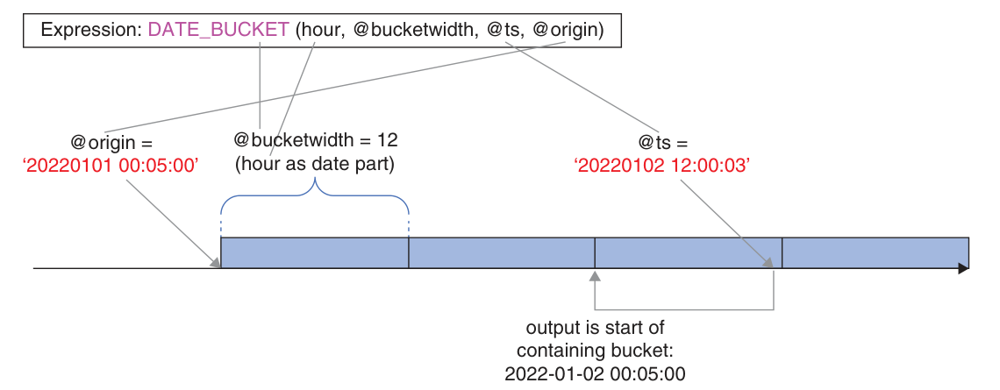
Understanding how the DATE_BUCKET function works
What you’re looking at: the origin anchors the buckets. With a 12-hour width, the buckets start at 00:05 and 12:05 each day. The input timestamp falls in the bucket that starts at 2022-01-02 00:05:00, which is the function’s result.
Custom bucket computation (without DATE_BUCKET)
If you are on an older version, compute the bucket start in four steps: whole units between origin and timestamp, a correction for partial hours, whole buckets, and finally add those hours to the origin.
DECLARE
@ts AS DATETIME2(0) = '20220102 12:00:03',
@bucketwidth AS INT = 12,
@origin AS DATETIME2(0) = '20220101 00:05:00';
SELECT
DATEADD(
hour,
(DATEDIFF(hour, @origin, @ts)
- CASE
WHEN DATEADD(hour, DATEDIFF(hour, @origin, @ts), @origin)
> @ts THEN 1
ELSE 0
END) / @bucketwidth * @bucketwidth,
@origin) AS bucketstart;The CASE corrects DATEDIFF, which ignores minutes and seconds. Dividing by the bucket width and multiplying back gives the number of hours in whole buckets.
Apply the bucket logic to a table
DECLARE
@bucketwidth AS INT = 12,
@origin AS DATETIME2(0) = '19000101 00:00:00';
SELECT sensorid, ts,
DATE_BUCKET(hour, @bucketwidth, ts, @origin) AS bucketstart
FROM dbo.SensorMeasurements;To analyze the buckets, compute the bucket start in a CTE, then group by sensor and bucket and aggregate the measures.
DECLARE
@bucketwidth AS INT = 12,
@origin AS DATETIME2(0) = '19000101 00:00:00';
WITH C AS
(
SELECT sensorid, ts, temperature,
DATE_BUCKET(hour, @bucketwidth, ts, @origin) AS bucketstart
FROM dbo.SensorMeasurements
)
SELECT sensorid, bucketstart,
DATEADD(hour, @bucketwidth, bucketstart) AS bucketend,
MIN(temperature) AS mintemp,
MAX(temperature) AS maxtemp,
AVG(temperature) AS avgtemp
FROM C
GROUP BY sensorid, bucketstart
ORDER BY sensorid, bucketstart;For 7-day buckets with Monday as the start, use day as the date part, a width of 7, and an origin that is a Monday (for example, 1900-01-01).
DECLARE
@bucketwidth AS INT = 7,
@origin AS DATE = '19000101';
WITH C AS
(
SELECT sensorid, ts, temperature,
DATEADD(
day,
(DATEDIFF(day, @origin, ts)
- CASE
WHEN DATEADD(day, DATEDIFF(day, @origin, ts), @origin)
> ts THEN 1
ELSE 0
END) / @bucketwidth * @bucketwidth,
@origin) AS bucketstart
FROM dbo.SensorMeasurements
)
SELECT sensorid, bucketstart,
DATEADD(day, @bucketwidth, bucketstart) AS bucketend,
MIN(temperature) AS mintemp,
MAX(temperature) AS maxtemp,
AVG(temperature) AS avgtemp
FROM C
GROUP BY sensorid, bucketstart
ORDER BY sensorid, bucketstart;Gap filling: keep empty buckets
If a sensor was offline, some buckets have no rows. Generate every possible bucket start time, then left join it to the aggregated data so the empty buckets still appear with NULL measures.
DECLARE
@bucketwidth AS INT = 12,
@startperiod AS DATETIME2(0) = '20220609 00:00:00',
@endperiod AS DATETIME2(0) = '20220615 12:00:00';
WITH TS AS
(
SELECT DATEADD(hour, value * @bucketwidth, @startperiod) AS ts
FROM GENERATE_SERIES(0, DATEDIFF(hour, @startperiod, @endperiod) / @bucketwidth) AS N
),
C1 AS
(
SELECT sensorid, ts, temperature,
DATE_BUCKET(hour, @bucketwidth, ts, @startperiod) AS bucketstart
FROM dbo.SensorMeasurements
),
C2 AS
(
SELECT sensorid, bucketstart,
MIN(temperature) AS mintemp,
MAX(temperature) AS maxtemp,
AVG(temperature) AS avgtemp
FROM C1
GROUP BY sensorid, bucketstart
)
SELECT S.sensorid, TS.ts AS bucketstart,
DATEADD(hour, @bucketwidth, TS.ts) AS bucketend,
mintemp, maxtemp, avgtemp
FROM dbo.Sensors AS S
CROSS JOIN TS
LEFT OUTER JOIN C2
ON S.sensorid = C2.sensorid
AND TS.ts = C2.bucketstart
ORDER BY sensorid, bucketstart;On versions before SQL Server 2022, replace GENERATE_SERIES with the sample database’s dbo.GetNums(low, high) function, which returns a column called n.
DROP TABLE IF EXISTS
dbo.Orders,
dbo.EmpYearOrders,
dbo.EmpCustOrders,
dbo.SensorMeasurements,
dbo.Sensors;Eight exercises, with the book’s solutions
Try each one before opening the solution. The exercises use dbo.Orders, Sales.OrderValues, dbo.EmpYearOrders, and the sensor tables created earlier in this chapter.
Exercise 1 · Rank and dense rank per customer
Partition by custid, order by qty.
SELECT custid, orderid, qty,
RANK() OVER(PARTITION BY custid ORDER BY qty) AS rnk,
DENSE_RANK() OVER(PARTITION BY custid ORDER BY qty) AS drnk
FROM dbo.Orders;With the WINDOW clause: RANK() OVER W and DENSE_RANK() OVER W, where W AS (PARTITION BY custid ORDER BY qty).
Exercise 2 · Distinct values with row numbers
Remove duplicates first, then compute row numbers in the outer query.
WITH C AS
(
SELECT DISTINCT val
FROM Sales.OrderValues
)
SELECT val, ROW_NUMBER() OVER(ORDER BY val) AS rownum
FROM C;Exercise 3 · Difference from previous and next order quantity
Use LAG and LEAD with a partition by customer and a tiebreaker.
SELECT custid, orderid, qty,
qty - LAG(qty) OVER(PARTITION BY custid
ORDER BY orderdate, orderid) AS diffprev,
qty - LEAD(qty) OVER(PARTITION BY custid
ORDER BY orderdate, orderid) AS diffnext
FROM dbo.Orders;Exercise 4 · Order counts per employee and year
Pivot with a grouped query or with the PIVOT operator.
SELECT empid,
COUNT(CASE WHEN orderyear = 2020 THEN orderyear END) AS cnt2020,
COUNT(CASE WHEN orderyear = 2021 THEN orderyear END) AS cnt2021,
COUNT(CASE WHEN orderyear = 2022 THEN orderyear END) AS cnt2022
FROM (SELECT empid, YEAR(orderdate) AS orderyear
FROM dbo.Orders) AS D
GROUP BY empid;SELECT empid, [2020] AS cnt2020, [2021] AS cnt2021, [2022] AS cnt2022
FROM (SELECT empid, YEAR(orderdate) AS orderyear
FROM dbo.Orders) AS D
PIVOT(COUNT(orderyear) FOR orderyear IN([2020], [2021], [2022])) AS P;Exercise 5 · Unpivot EmpYearOrders
Use CROSS APPLY or UNPIVOT, and filter out zeros.
SELECT empid, orderyear, numorders
FROM dbo.EmpYearOrders
CROSS APPLY (VALUES(2020, cnt2020),
(2021, cnt2021),
(2022, cnt2022)) AS A(orderyear, numorders)
WHERE numorders <> 0;SELECT empid, CAST(RIGHT(orderyear, 4) AS INT) AS orderyear, numorders
FROM dbo.EmpYearOrders
UNPIVOT(numorders FOR orderyear IN(cnt2020, cnt2021, cnt2022)) AS U
WHERE numorders <> 0;Exercise 6 · Grouping sets with an identifier
Use GROUPING SETS for the three requested sets and GROUPING_ID to identify each row’s set.
SELECT
GROUPING_ID(empid, custid, YEAR(Orderdate)) AS groupingset,
empid, custid, YEAR(Orderdate) AS orderyear, SUM(qty) AS sumqty
FROM dbo.Orders
GROUP BY
GROUPING SETS
(
(empid, custid, YEAR(orderdate)),
(empid, YEAR(orderdate)),
(custid, YEAR(orderdate))
);Exercise 7 · Weekly order counts, week starting Sunday
Use DATE_BUCKET(week, 1, orderdate, '19000107') — a Sunday — then group by the week start.
WITH C AS
(
SELECT
DATE_BUCKET(week, 1, orderdate, CAST('19000107' AS DATE)) AS startofweek
FROM Sales.Orders
)
SELECT
startofweek, DATEADD(day, 6, startofweek) AS endofweek,
COUNT(*) AS numorders
FROM C
GROUP BY startofweek
ORDER BY startofweek;On older versions, use the custom bucket expression with week as the date part and 1900-01-07 as the origin.
Exercise 8 · Fiscal year totals per shipper (July–June)
Use July 1 as the origin, the year part, and a width of 1. Then group by shipper and fiscal-year start.
DECLARE
@bucketwidth AS INT = 1,
@origin AS DATE = '19000701';
WITH C AS
(
SELECT shipperid, qty, val,
DATE_BUCKET(year, @bucketwidth, orderdate, @origin) AS startofyear
FROM Sales.OrderValues
)
SELECT shipperid, startofyear,
DATEADD(day, -1, DATEADD(year, @bucketwidth, startofyear)) AS endofyear,
SUM(qty) AS totalqty,
SUM(val) AS totalval
FROM C
GROUP BY shipperid, startofyear
ORDER BY shipperid, startofyear;Chapter 7 in ten bullets
- A window function computes a scalar per row from a window defined by
OVER, without collapsing the detail rows. - The window has three parts:
PARTITION BYsplits the rows,ORDER BYorders them, and a frame such asROWS BETWEEN …selects a subset. - Ranking functions:
ROW_NUMBER(unique),RANK(ties, gaps),DENSE_RANK(ties, no gaps), andNTILE(tiles). - Offset functions:
LAG,LEAD,FIRST_VALUE, andLAST_VALUE; SQL Server 2022 addsIGNORE NULLS. - Aggregate window functions support frames, enabling running totals, moving averages, and percentages of totals.
- Window functions are allowed only in SELECT and ORDER BY. To filter on one, use a table expression.
- Pivot = group + spread + aggregate. Use a grouped query with
CASE, or thePIVOToperator with a table expression. - Unpivot = copies + extract + eliminate. Use
CROSS APPLYto keep NULLs orUNPIVOTto drop them. - Grouping sets:
GROUPING SETSlists them,CUBEproduces all combinations,ROLLUPproduces a hierarchy;GROUPING/GROUPING_IDidentify each row’s set. - Time series: bucketize with
DATE_BUCKETor a custom computation, aggregate per bucket, and gap-fill with a generated series plus a left join.
Chapter 7 key terms
- Window function
- A function that computes a value per row from a window of related rows, defined by
OVER. - Window partition
- The subset of rows with the same
PARTITION BYvalues as the current row. - Window frame
- The subset of rows between two delimiters, such as
UNBOUNDED PRECEDINGandCURRENT ROW. - Ranking function
- A window function such as
ROW_NUMBER,RANK,DENSE_RANK, orNTILE. - Offset function
- A window function such as
LAGorLEADthat returns a value from a row at a given offset. - IGNORE NULLS
- An option for offset functions that skips NULLs when searching for a known value.
- Pivoting
- Rotating rows into columns, with grouping, spreading, and aggregation.
- Unpivoting
- Rotating columns into rows, producing a name column and a value column.
- Grouping set
- A set of expressions that defines a group in a grouped query.
- CUBE
- A
GROUP BYsubclause that produces all possible grouping sets (the power set). - ROLLUP
- A
GROUP BYsubclause that produces the leading combinations of a hierarchy. - GROUPING_ID
- A function that returns an integer bitmap identifying the current grouping set.
- DATE_BUCKET
- A function that returns the start of the time bucket containing a timestamp.
- Gap filling
- Adding missing buckets to a time-series result, typically with a generated series and a left join.
Six quick questions
Try to answer before opening each one. If you can explain it in your own words, you’ve got the chapter.
What are the three parts of a window specification?
PARTITION BY), the window-order clause (ORDER BY), and the window-frame clause (ROWS BETWEEN …). An empty OVER() exposes the entire underlying result set.What is the difference between RANK and DENSE_RANK?
RANK then skips numbers (1, 2, 2, 4), while DENSE_RANK leaves no gaps (1, 2, 2, 3).Why should you use a table expression with PIVOT?
PIVOT treats every column that is not the spreading or aggregation element as an implicit grouping column. A table expression containing only the pivoting elements prevents extra columns from changing the grouping, and protects against future schema changes.What is the difference between CROSS APPLY and UNPIVOT for unpivoting?
CROSS APPLY lets you decide whether to keep rows with NULLs; UNPIVOT always eliminates NULL intersections as part of its logic and is more concise.What is the difference between CUBE and ROLLUP?
CUBE produces all possible grouping sets (the power set). ROLLUP assumes a hierarchy and produces only the leading combinations, such as (a, b, c), (a, b), (a), and ().How does DATE_BUCKET work, and how do you gap-fill?
DATE_BUCKET(datepart, width, ts, origin) returns the start of the bucket containing ts, counting from the origin. To gap-fill, generate every possible bucket start, then left join it to the aggregated data so empty buckets appear with NULL measures.Change what the tables hold
Every chapter so far only read data. This chapter writes it: five ways to insert rows, two ways to delete them, three flavours of UPDATE, MERGE for “synchronise these two tables,” and the OUTPUT clause, which lets a modification statement also return the rows it touched.
Five ways to get rows into a table
DML — Data Manipulation Language — includes SELECT, INSERT, UPDATE, DELETE, TRUNCATE, and MERGE. Note that retrieval counts as manipulation too. This section covers the five insert statements, then the two tools SQL Server gives you for generating keys.
| Statement | Source of the rows | Target | Standard? |
|---|---|---|---|
INSERT VALUES | Literal values you type | Existing table | Standard |
INSERT SELECT | A SELECT query | Existing table | Standard |
INSERT EXEC | A stored procedure or dynamic batch | Existing table | Standard |
SELECT INTO | A SELECT query | New table it creates for you | T-SQL only |
BULK INSERT | A file | Existing table | T-SQL only |
Where each insert statement gets its rows — and where it puts them
What you’re looking at: four of the five statements need a table that already exists; only SELECT INTO (amber) builds the table for you as it runs, which is why it copies column names, types, nullability and the identity property — but not constraints, indexes, triggers, column properties, or permissions.
Sample data · create and populate dbo.Orders (p. 293)
Most of this chapter works on fresh tables in the dbo schema of TSQLV6, so the sample data stays untouched.
USE TSQLV6;
DROP TABLE IF EXISTS dbo.Orders;
CREATE TABLE dbo.Orders
(
orderid INT NOT NULL
CONSTRAINT PK_Orders PRIMARY KEY,
orderdate DATE NOT NULL
CONSTRAINT DFT_orderdate DEFAULT(SYSDATETIME()),
empid INT NOT NULL,
custid VARCHAR(10) NOT NULL
);The INSERT VALUES statement p. 293
INSERT INTO dbo.Orders(orderid, orderdate, empid, custid)
VALUES(10001, '20220212', 3, 'A');- Listing the target column names is optional — but do it anyway. It makes the value-to-column association explicit instead of depending on the column order in
CREATE TABLE. - In T-SQL the
INTOkeyword itself is optional. The column list is what matters. - Omit a column and SQL Server fills it with its default if one is defined, else
NULLif the column allows it, else the statement fails.
INSERT INTO dbo.Orders(orderid, empid, custid)
VALUES(10002, 5, 'B');-- To change compatibility level use:
-- ALTER DATABASE CURRENT SET COMPATIBILITY_LEVEL = <level>
INSERT INTO dbo.Orders(orderid, orderdate, empid, custid)
VALUES(20001, '20220212', 1, 'TooLongCustID');
-- Pre-2019 / below compat level 150:
-- Msg 8152, Level 16, State 30: String or binary data would be truncated.
-- SQL Server 2019+ with compat level 150+:
-- Msg 2628, Level 16, State 1: String or binary data would be truncated
-- in table 'TSQLV6.dbo.Orders', column 'custid'.
-- Truncated value: 'TooLongCus'.Multiple rows, and VALUES as a table p. 295
T-SQL extends the standard VALUES clause so you can list several rows separated by commas. The whole statement is one transaction: if any row fails, none of them lands in the table.
INSERT INTO dbo.Orders
(orderid, orderdate, empid, custid)
VALUES
(10003, '20220213', 4, 'B'),
(10004, '20220214', 1, 'A'),
(10005, '20220213', 1, 'C'),
(10006, '20220215', 3, 'C');The same VALUES clause also works as a table value constructor — a derived table you can select from. Alias the table, then alias the columns:
SELECT *
FROM ( VALUES
(10003, '20220213', 4, 'B'),
(10004, '20220214', 1, 'A'),
(10005, '20220213', 1, 'C'),
(10006, '20220215', 3, 'C') )
AS O(orderid, orderdate, empid, custid);The INSERT SELECT statement p. 295
Same shape as INSERT VALUES, except the source is a query instead of a list of literals.
INSERT INTO dbo.Orders(orderid, orderdate, empid, custid)
SELECT orderid, orderdate, empid, custid
FROM Sales.Orders
WHERE shipcountry = N'UK';SYSDATETIME is invoked a single time for the whole query, so every inserted row gets the same timestamp. The exception is NEWID, which generates a new GUID per row.
The INSERT EXEC statement p. 296
This one inserts whatever a stored procedure or a dynamic SQL batch returns. Stored procedures and batches are covered properly in Chapter 12; for now the syntax is enough.
CREATE OR ALTER PROC Sales.GetOrders
@country AS NVARCHAR(40)
AS
SELECT orderid, orderdate, empid, custid
FROM Sales.Orders
WHERE shipcountry = @country;
GO
EXEC Sales.GetOrders @country = N'France'; -- 77 rows
INSERT INTO dbo.Orders(orderid, orderdate, empid, custid)
EXEC Sales.GetOrders @country = N'France';The SELECT INTO statement p. 297
Nonstandard, and the only member of the family that creates its target. Add INTO <target> right before the FROM clause of your query.
DROP TABLE IF EXISTS dbo.Orders;
SELECT orderid, orderdate, empid, custid
INTO dbo.Orders
FROM Sales.Orders;Column names, types, nullability, the identity property, and of course the data itself.
Constraints, indexes, triggers, other column properties, and permissions. Create those yourself if you need them.
It is also fast: as long as the database’s recovery model is not FULL, SELECT INTO runs in a minimally logged mode. INSERT SELECT can be minimally logged too, but the list of prerequisites is longer.
With set operations, the INTO clause goes in front of the FROM of the first query:
DROP TABLE IF EXISTS dbo.Locations;
SELECT country, region, city
INTO dbo.Locations
FROM Sales.Customers
EXCEPT
SELECT country, region, city
FROM HR.Employees;The BULK INSERT statement p. 298
Loads data from a file into an existing table. You specify the target table, the source file, and options such as the data file type and the field and row terminators.
BULK INSERT dbo.Orders FROM 'c:\temp\orders.txt'
WITH
(
DATAFILETYPE = 'char',
FIELDTERMINATOR = ',',
ROWTERMINATOR = '\n'
);Identity versus sequence
SQL Server ships two built-in ways to generate numeric surrogate keys. Identity is the older, simpler one and comes with a long list of limitations. The sequence object fixes most of them and is the better default in new code.
Identity p. 298
Identity is a standard column property. Any numeric type with a scale of zero can carry it, and you can optionally set a seed and an increment (both default to 1).
DROP TABLE IF EXISTS dbo.T1;
CREATE TABLE dbo.T1
(
keycol INT NOT NULL IDENTITY(1, 1)
CONSTRAINT PK_T1 PRIMARY KEY,
datacol VARCHAR(10) NOT NULL
CONSTRAINT CHK_T1_datacol CHECK(datacol LIKE '[ABCDEFGHIJKLMNOPQRSTUVWXYZ]%')
);
INSERT INTO dbo.T1(datacol) VALUES('AAAAA'),('CCCCC'),('BBBBB');
SELECT * FROM dbo.T1;
-- keycol datacol
-- ----------- ----------
-- 1 AAAAA
-- 2 CCCCC
-- 3 BBBBBIn your INSERT statements you ignore the identity column completely. When querying you can name it, or use the generic form $identity:
SELECT $identity FROM dbo.T1;Getting the value that was just generated
| Function | Returns | Use it when |
|---|---|---|
SCOPE_IDENTITY() | Last identity value generated in the current scope | Almost always — this is the safe default |
@@identity | Last identity value generated in the session, any scope | Rarely: a trigger’s insert can change it under you |
IDENT_CURRENT('dbo.T1') | Current identity value in that table, any session | You need the table’s high-water mark, not your own insert |
DECLARE @new_key AS INT;
INSERT INTO dbo.T1(datacol) VALUES('AAAAA');
SET @new_key = SCOPE_IDENTITY();
SELECT @new_key AS new_key; -- 4INSERT fails or its transaction rolls back, the identity value it consumed is not given back — the next row skips it. SQL Server also caches identity values for performance, so an unclean shutdown (power failure) can leave gaps too. And because you can insert explicit values with IDENTITY_INSERT or reseed with DBCC CHECKIDENT, the property alone guarantees nothing: add a primary key or unique constraint if you need uniqueness.
INSERT INTO dbo.T1(datacol) VALUES('12345');
-- Msg 547: The INSERT statement conflicted with the CHECK constraint
-- "CHK_T1_datacol" ...
INSERT INTO dbo.T1(datacol) VALUES('EEEEE');
SELECT * FROM dbo.T1;
-- 4 AAAAA
-- 6 EEEEE <-- 5 was consumed by the failed insertYou can insert your own explicit values by enabling a session option, but you can never update an identity column:
SET IDENTITY_INSERT dbo.T1 ON;
INSERT INTO dbo.T1(keycol, datacol) VALUES(5, 'FFFFF');
SET IDENTITY_INSERT dbo.T1 OFF;One subtlety: turning the option off moves the table’s current identity value forward only if the explicit value you supplied was higher than it. Above, the current value was already 6, so inserting 5 changed nothing and the next generated value is 7.
Sequence p. 302
A sequence is an independent object in the database, not a property of one column. Ask it for a value with NEXT VALUE FOR and use the result wherever you like — including across several tables, which is how you keep keys from colliding between them.
CREATE SEQUENCE dbo.SeqOrderIDs AS INT
MINVALUE 1
CYCLE;
ALTER SEQUENCE dbo.SeqOrderIDs
NO CYCLE;
SELECT NEXT VALUE FOR dbo.SeqOrderIDs; -- 1, no row inserted anywhere| Option | Meaning | Default |
|---|---|---|
AS <type> | Any numeric type with scale zero | BIGINT |
MINVALUE / MAXVALUE | Bounds within the type | The type’s own bounds |
START WITH | First value handed out | The MINVALUE |
INCREMENT BY | Step size | 1 |
CYCLE / NO CYCLE | Wrap around at the maximum | NO CYCLE |
CACHE <n> / NO CACHE | How often the recoverable value is written to disk | 50 (undocumented, may change) |
Everything except the data type can be changed later with ALTER SEQUENCE. Three patterns for using the value:
-- 1. grab it first, use it in several places
DECLARE @neworderid AS INT = NEXT VALUE FOR dbo.SeqOrderIDs;
INSERT INTO dbo.T1(keycol, datacol) VALUES(@neworderid, 'a');
-- 2. inline, when you don't need it beforehand
INSERT INTO dbo.T1(keycol, datacol)
VALUES(NEXT VALUE FOR dbo.SeqOrderIDs, 'b');
-- 3. yes, you can generate sequence values in an UPDATE
UPDATE dbo.T1
SET keycol = NEXT VALUE FOR dbo.SeqOrderIDs;T-SQL adds three extensions the standard does not have. The OVER clause controls the order in which values are assigned in a multi-row insert; NEXT VALUE FOR is allowed in a default constraint; and sp_sequence_get_range allocates a whole block of values at once.
-- a) ordered assignment in a multi-row insert
INSERT INTO dbo.T1(keycol, datacol)
SELECT
NEXT VALUE FOR dbo.SeqOrderIDs OVER(ORDER BY hiredate),
LEFT(firstname, 1) + LEFT(lastname, 1)
FROM HR.Employees;
-- b) as a default constraint
ALTER TABLE dbo.T1
ADD CONSTRAINT DFT_T1_keycol
DEFAULT (NEXT VALUE FOR dbo.SeqOrderIDs)
FOR keycol;
INSERT INTO dbo.T1(datacol) VALUES('c'); -- keycol filled automatically
-- c) allocate a million values in one call
DECLARE @first AS SQL_VARIANT;
EXEC sys.sp_sequence_get_range
@sequence_name = N'dbo.SeqOrderIDs',
@range_size = 1000000,
@range_first_value = @first OUTPUT;
SELECT @first;Query sys.sequences to see where a sequence stands, and remember: like identity, a sequence does not promise gap-free values.
SELECT current_value
FROM sys.sequences
WHERE OBJECT_ID = OBJECT_ID(N'dbo.SeqOrderIDs');
DROP TABLE IF EXISTS dbo.T1;
DROP SEQUENCE IF EXISTS dbo.SeqOrderIDs;Identity is welded to a column; a sequence is a shared tap
What you’re looking at: on the left, the generator lives inside one column of one table, so it can only produce a value as a side effect of inserting a row there. On the right, it is a standalone object: one NEXT VALUE FOR call can feed an order ID, a local variable, and a row in another table, and it works inside UPDATE and default constraints too.
DELETE, TRUNCATE, and delete-by-join
Two statements remove rows. DELETE takes a filter and logs every row it removes; TRUNCATE takes no filter and deallocates whole blocks of data instead. T-SQL also lets you delete through a join.
Sample data · copies of dbo.Customers and dbo.Orders (p. 307)
DROP TABLE IF EXISTS dbo.Orders, dbo.Customers;
CREATE TABLE dbo.Customers
(
custid INT NOT NULL,
companyname NVARCHAR(40) NOT NULL,
contactname NVARCHAR(30) NOT NULL,
contacttitle NVARCHAR(30) NOT NULL,
address NVARCHAR(60) NOT NULL,
city NVARCHAR(15) NOT NULL,
region NVARCHAR(15) NULL,
postalcode NVARCHAR(10) NULL,
country NVARCHAR(15) NOT NULL,
phone NVARCHAR(24) NOT NULL,
fax NVARCHAR(24) NULL,
CONSTRAINT PK_Customers PRIMARY KEY(custid)
);
CREATE TABLE dbo.Orders
(
orderid INT NOT NULL,
custid INT NULL,
empid INT NOT NULL,
orderdate DATE NOT NULL,
requireddate DATE NOT NULL,
shippeddate DATE NULL,
shipperid INT NOT NULL,
freight MONEY NOT NULL
CONSTRAINT DFT_Orders_freight DEFAULT(0),
shipname NVARCHAR(40) NOT NULL,
shipaddress NVARCHAR(60) NOT NULL,
shipcity NVARCHAR(15) NOT NULL,
shipregion NVARCHAR(15) NULL,
shippostalcode NVARCHAR(10) NULL,
shipcountry NVARCHAR(15) NOT NULL,
CONSTRAINT PK_Orders PRIMARY KEY(orderid),
CONSTRAINT FK_Orders_Customers FOREIGN KEY(custid)
REFERENCES dbo.Customers(custid)
);
GO
INSERT INTO dbo.Customers SELECT * FROM Sales.Customers;
INSERT INTO dbo.Orders SELECT * FROM Sales.Orders;The DELETE statement p. 308
The standard form has only two clauses: FROM (the target table) and WHERE (the filter). Only rows for which the predicate is TRUE are deleted.
DELETE FROM dbo.Orders
WHERE orderdate < '20210101';
-- (152 rows affected)Turn on the session option NOCOUNT if you want to suppress those “rows affected” messages — it is off by default. Keep in mind that DELETE is a fully logged operation, which is what makes large deletes expensive.
The TRUNCATE statement p. 309
TRUNCATE TABLE dbo.T1;| DELETE | TRUNCATE | |
|---|---|---|
| Filter | Yes, with WHERE | No — always all rows |
| Logging | Fully logged, row by row | Minimally logged (only deallocated blocks are recorded) |
| Speed on millions of rows | Many minutes | A few seconds |
| Identity | Current value is kept | Reset back to the original seed |
| Referenced by a foreign key | Allowed | Not allowed — even if the referencing table is empty and the FK is disabled |
| Transactional | Yes | Yes |
TRUNCATE and DROP are fast enough to commit before you notice you ran them in the wrong connection. Create a dummy table with a foreign key pointing at the production table: the FK blocks truncating or dropping it — and you can even disable the FK so it costs nothing at runtime.
On partitioned tables, SQL Server 2016 and later can truncate individual partitions:
TRUNCATE TABLE dbo.T1 WITH ( PARTITIONS(1, 3, 5, 7 TO 10) );DELETE based on a join p. 310
A nonstandard T-SQL form that lets you filter on — and reference — columns of a related table. The two FROM clauses look confusing until you write it as a SELECT first: join, filter, then replace the SELECT clause with DELETE naming the alias of the side you want to empty. The first FROM is optional — DELETE O works just as well.
DELETE FROM O
FROM dbo.Orders AS O
INNER JOIN dbo.Customers AS C
ON O.custid = C.custid
WHERE C.country = N'USA';The standard alternative uses a subquery, and SQL Server produces the same execution plan for both, so there is no performance reason to prefer the join:
DELETE FROM dbo.Orders
WHERE EXISTS
(SELECT *
FROM dbo.Customers AS C
WHERE Orders.custid = C.custid
AND C.country = N'USA');UPDATE based on a join there sometimes is one (see the next section); for DELETE there usually is not.
UPDATE, all-at-once, and the assignment trick
The standard UPDATE with a SET clause and a WHERE filter is the one you will use most. T-SQL adds compound assignment operators, a join-based form, and a proprietary syntax that updates a row and fills a variable in a single pass.
The UPDATE statement p. 313
UPDATE dbo.OrderDetails
SET discount = discount + 0.05
WHERE productid = 51;T-SQL supports compound assignment operators — +=, -=, *=, /=, %= and others — so the statement above can be shortened to:
UPDATE dbo.OrderDetails
SET discount += 0.05
WHERE productid = 51;All-at-once, again p. 313
The all-at-once concept from Chapter 2 applies here too: every assignment in the SET clause sees the row before the update. Given col1 = 100 in a row:
UPDATE dbo.T1
SET col1 = col1 + 10, col2 = col1 + 10;| col1 | col2 | |
|---|---|---|
| Before | 100 | (anything) |
| Left-to-right (wrong model) | 110 | 120 |
| All-at-once (what SQL does) | 110 | 110 |
The pleasant consequence: swapping two columns needs no temporary variable, because both assignments read the original row.
UPDATE dbo.T1
SET col1 = col2, col2 = col1;UPDATE based on a join p. 314
Listing 8-1 in the book bumps the discount on every order detail belonging to customer 1. Same shape as the delete-by-join: FROM with the joins, WHERE filter, then UPDATE naming the alias of the target side. Only one table can be the target of a single statement.
UPDATE OD
SET discount += 0.05
FROM dbo.OrderDetails AS OD
INNER JOIN dbo.Orders AS O
ON OD.orderid = O.orderid
WHERE O.custid = 1;The standard rewrite uses EXISTS for the filter:
UPDATE dbo.OrderDetails
SET discount += 0.05
WHERE EXISTS
(SELECT * FROM dbo.Orders AS O
WHERE O.orderid = OrderDetails.orderid
AND O.custid = 1);Where the join really wins is when you need several columns from the other table in the SET clause. The join gives you one access to the source table for filtering and assignment; the standard version needs a separate subquery for each assignment, and each one touches the other table again.
-- Join version: one access to T2
UPDATE T1
SET col1 = T2.col1,
col2 = T2.col2,
col3 = T2.col3
FROM dbo.T1 JOIN dbo.T2
ON T2.keycol = T1.keycol
WHERE T2.col4 = 'ABC';-- Standard version: four separate accesses to T2
UPDATE dbo.T1
SET col1 = (SELECT col1 FROM dbo.T2 WHERE T2.keycol = T1.keycol),
col2 = (SELECT col2 FROM dbo.T2 WHERE T2.keycol = T1.keycol),
col3 = (SELECT col3 FROM dbo.T2 WHERE T2.keycol = T1.keycol)
WHERE EXISTS
(SELECT *
FROM dbo.T2
WHERE T2.keycol = T1.keycol
AND T2.col4 = 'ABC');SET (col1, col2, col3) = (SELECT col1, col2, col3 FROM ...). T-SQL has only partially implemented row constructors, and this use is one of the missing pieces — it would still need a second subquery for the filter anyway.
Assignment UPDATE p. 316
A proprietary form that changes data and assigns a variable in the same statement. Its classic use is a hand-rolled sequence with no gaps — something neither identity nor a sequence object can promise.
DROP TABLE IF EXISTS dbo.MySequences;
CREATE TABLE dbo.MySequences
(
id VARCHAR(10) NOT NULL
CONSTRAINT PK_MySequences PRIMARY KEY(id),
val INT NOT NULL
);
INSERT INTO dbo.MySequences VALUES('SEQ1', 0);DECLARE @nextval AS INT;
UPDATE dbo.MySequences
SET @nextval = val += 1
WHERE id = 'SEQ1';
SELECT @nextval;First val becomes val + 1, then that result is assigned to @nextval. The whole statement runs as a transaction and touches the data once, which is cheaper than an UPDATE followed by a SELECT.
One statement, three possible actions
MERGE synchronises a target table with a source table, applying different actions depending on whether rows match. It is standard SQL with a few T-SQL extras. One MERGE usually replaces a whole bundle of INSERT, UPDATE, and DELETE statements.
Sample data · Listing 8-2 · Customers and CustomersStage
DROP TABLE IF EXISTS dbo.Customers, dbo.CustomersStage;
GO
CREATE TABLE dbo.Customers
(
custid INT NOT NULL,
companyname VARCHAR(25) NOT NULL,
phone VARCHAR(20) NOT NULL,
address VARCHAR(50) NOT NULL,
CONSTRAINT PK_Customers PRIMARY KEY(custid)
);
INSERT INTO dbo.Customers(custid, companyname, phone, address)
VALUES
(1, 'cust 1', '(111) 111-1111', 'address 1'),
(2, 'cust 2', '(222) 222-2222', 'address 2'),
(3, 'cust 3', '(333) 333-3333', 'address 3'),
(4, 'cust 4', '(444) 444-4444', 'address 4'),
(5, 'cust 5', '(555) 555-5555', 'address 5');
CREATE TABLE dbo.CustomersStage
(
custid INT NOT NULL,
companyname VARCHAR(25) NOT NULL,
phone VARCHAR(20) NOT NULL,
address VARCHAR(50) NOT NULL,
CONSTRAINT PK_CustomersStage PRIMARY KEY(custid)
);
INSERT INTO dbo.CustomersStage(custid, companyname, phone, address)
VALUES
(2, 'AAAAA', '(222) 222-2222', 'address 2'),
(3, 'cust 3', '(333) 333-3333', 'address 3'),
(5, 'BBBBB', 'CCCCC', 'DDDDD'),
(6, 'cust 6 (new)', '(666) 666-6666', 'address 6'),
(7, 'cust 7 (new)', '(777) 777-7777', 'address 7');Three regions, three clauses
What you’re looking at: the ON predicate (TGT.custid = SRC.custid) splits the two tables into three regions. Customers 2, 3 and 5 exist in both and get updated; 6 and 7 exist only in the stage table and get inserted; 1 and 4 exist only in the target and — if you add the third clause — get deleted.
MERGE INTO dbo.Customers AS TGT
USING dbo.CustomersStage AS SRC
ON TGT.custid = SRC.custid
WHEN MATCHED THEN
UPDATE SET
TGT.companyname = SRC.companyname,
TGT.phone = SRC.phone,
TGT.address = SRC.address
WHEN NOT MATCHED THEN
INSERT (custid, companyname, phone, address)
VALUES (SRC.custid, SRC.companyname, SRC.phone, SRC.address);Notice that the UPDATE and INSERT actions omit the table name — the target was already named in MERGE INTO. The statement reports five rows modified: three updates (2, 3, 5) and two inserts (6, 7).
Deleting rows the source forgot p. 320
Add the third clause to remove target rows that have no counterpart in the source. Running this against the sample data deletes customers 1 and 4.
MERGE dbo.Customers AS TGT
USING dbo.CustomersStage AS SRC
ON TGT.custid = SRC.custid
WHEN MATCHED THEN
UPDATE SET
TGT.companyname = SRC.companyname,
TGT.phone = SRC.phone,
TGT.address = SRC.address
WHEN NOT MATCHED THEN
INSERT (custid, companyname, phone, address)
VALUES (SRC.custid, SRC.companyname, SRC.phone, SRC.address)
WHEN NOT MATCHED BY SOURCE THEN
DELETE;Only update when something changed p. 321
The basic form rewrites every matched row, even when nothing differs — which means extra log writes and extra rows in your audit trail. Add an AND predicate to any action clause and it fires only when that predicate is also TRUE:
MERGE dbo.Customers AS TGT
USING dbo.CustomersStage AS SRC
ON TGT.custid = SRC.custid
WHEN MATCHED AND
( TGT.companyname <> SRC.companyname
OR TGT.phone <> SRC.phone
OR TGT.address <> SRC.address) THEN
UPDATE SET
TGT.companyname = SRC.companyname,
TGT.phone = SRC.phone,
TGT.address = SRC.address
WHEN NOT MATCHED THEN
INSERT (custid, companyname, phone, address)
VALUES (SRC.custid, SRC.companyname, SRC.phone, SRC.address);MERGE with a single WHEN MATCHED THEN DELETE or WHEN MATCHED THEN UPDATE clause is perfectly legal, and is sometimes the clearest way to express a filtered modification — see Exercises 3 and 5.
Modify data you can only describe with a query
A table expression holds no data — it reflects the data in underlying tables. So a modification against a CTE or derived table is really a modification of the underlying tables, reached through the expression. Sometimes that is merely convenient; sometimes it is the only way.
- If the defining query joins tables, you may affect only one side of the join in a single statement.
- You cannot update a calculated column — SQL Server will not reverse-engineer the inputs.
- An
INSERTmust supply values for every underlying column that does not get one implicitly (nullable, default, identity, orROWVERSION).
Convenience: debug the SELECT first
Rewrite Listing 8-1 as a table expression and you can highlight just the inner SELECT and run it to see exactly which rows would change — no editing back and forth.
WITH C AS
(
SELECT custid, OD.orderid,
productid, discount, discount + 0.05 AS newdiscount
FROM dbo.OrderDetails AS OD
INNER JOIN dbo.Orders AS O
ON OD.orderid = O.orderid
WHERE O.custid = 1
)
UPDATE C
SET discount = newdiscount;UPDATE D
SET discount = newdiscount
FROM ( SELECT custid, OD.orderid,
productid, discount, discount + 0.05 AS newdiscount
FROM dbo.OrderDetails AS OD
INNER JOIN dbo.Orders AS O
ON OD.orderid = O.orderid
WHERE O.custid = 1 ) AS D;Necessity: window functions in the SET clause p. 323
Suppose you want to number rows into col2. Window functions are allowed only in SELECT and ORDER BY, so the direct route fails:
DROP TABLE IF EXISTS dbo.T1;
CREATE TABLE dbo.T1(col1 INT, col2 INT);
GO
INSERT INTO dbo.T1(col1) VALUES(20),(10),(30);
UPDATE dbo.T1
SET col2 = ROW_NUMBER() OVER(ORDER BY col1);
-- Msg 4108, Level 15, State 1:
-- Windowed functions can only appear in the SELECT or ORDER BY clauses.Put the window function in a table expression that also returns the column you want to update, then update the expression:
WITH C AS
(
SELECT col1, col2, ROW_NUMBER() OVER(ORDER BY col1) AS rownum
FROM dbo.T1
)
UPDATE C
SET col2 = rownum;
SELECT * FROM dbo.T1;
-- col1 col2
-- ----------- -----------
-- 20 2
-- 10 1
-- 30 3TOP and OFFSET-FETCH on a modification
You can put TOP directly in an INSERT, UPDATE, DELETE, or MERGE statement to cap how many rows it touches — handy for splitting one huge modification into manageable chunks.
SELECT, a TOP filter in a modification statement cannot have an ORDER BY. SQL Server simply modifies whichever rows it reaches first. And OFFSET-FETCH is not allowed directly at all, because it requires an ORDER BY.
DELETE TOP (50) FROM dbo.Orders; -- whichever 50 rows come first
UPDATE TOP (50) dbo.Orders
SET freight += 10.00; -- likewise, 50 arbitrary rowsWhen you do care which rows, wrap the TOP — or an OFFSET-FETCH — inside a table expression, where ORDER BY is allowed, and modify that:
WITH C AS
(
SELECT TOP (50) *
FROM dbo.Orders
ORDER BY orderid
)
DELETE FROM C;WITH C AS
(
SELECT *
FROM dbo.Orders
ORDER BY orderid DESC
OFFSET 0 ROWS FETCH NEXT 50 ROWS ONLY
)
UPDATE C
SET freight += 10.00;Make the modification report back
Normally a modification statement just changes data. Add OUTPUT and it also returns the rows it touched — indispensable for troubleshooting, auditing, and archiving.
The clause is shaped like a SELECT list, except every attribute is prefixed with inserted or deleted, which refer to the new and the old image of the row.
| Statement | inserted.* | deleted.* |
|---|---|---|
INSERT | The new row (including generated identity / sequence values) | n/a |
DELETE | n/a | The removed row |
UPDATE | The row after the change | The row before the change |
MERGE | New values; NULL for DELETE actions | Old values; NULL for INSERT actions |
OUTPUT produces a result set like a SELECT. Add INTO <table> to send it into a permanent table, a temporary table, or a table variable instead. Want both? Write two OUTPUT clauses — one with INTO, one without.
One modification, two possible destinations for its output
What you’re looking at: the OUTPUT clause turns the modified rows into a row set. Without INTO it goes back to whoever ran the statement; with INTO it is written to a table you name. Nested DML goes one step further and treats that row set as the input of another statement.
INSERT with OUTPUT p. 326
The classic use: you insert many rows into a table with an identity column and need all the generated keys. SCOPE_IDENTITY only gives you the last one.
DROP TABLE IF EXISTS dbo.T1;
CREATE TABLE dbo.T1
(
keycol INT NOT NULL IDENTITY(1, 1) CONSTRAINT PK_T1 PRIMARY KEY,
datacol NVARCHAR(40) NOT NULL
);
INSERT INTO dbo.T1(datacol)
OUTPUT inserted.keycol, inserted.datacol
SELECT lastname
FROM HR.Employees
WHERE country = N'USA';
-- keycol datacol
-- ----------- ---------
-- 1 Davis
-- 2 Funk
-- 3 Lew
-- 4 Peled
-- 5 CameronThe same technique returns sequence values generated by NEXT VALUE FOR. Direct the rows somewhere instead with INTO — here a table variable:
DECLARE @NewRows TABLE(keycol INT, datacol NVARCHAR(40));
INSERT INTO dbo.T1(datacol)
OUTPUT inserted.keycol, inserted.datacol
INTO @NewRows(keycol, datacol)
SELECT lastname
FROM HR.Employees
WHERE country = N'UK';
SELECT * FROM @NewRows;DELETE with OUTPUT p. 328
Perfect for archiving: delete and capture in one statement, with one pass over the data.
DELETE FROM dbo.Orders
OUTPUT
deleted.orderid,
deleted.orderdate,
deleted.empid,
deleted.custid
WHERE orderdate < '20220101';
-- (560 rows affected) and the same 560 rows returnedAdd INTO dbo.OrdersArchive and you have deleted-and-archived in a single transaction.
UPDATE with OUTPUT p. 329
Here both prefixes are meaningful, so you can return the before and after values side by side.
UPDATE dbo.OrderDetails
SET discount += 0.05
OUTPUT
inserted.orderid,
inserted.productid,
deleted.discount AS olddiscount,
inserted.discount AS newdiscount
WHERE productid = 51;| orderid | productid | olddiscount | newdiscount |
|---|---|---|---|
| 10249 | 51 | 0.000 | 0.050 |
| 10250 | 51 | 0.150 | 0.200 |
| 10291 | 51 | 0.100 | 0.150 |
| 10335 | 51 | 0.200 | 0.250 |
| … 39 rows in total (abbreviated output from the book) | |||
MERGE with OUTPUT p. 330
A single MERGE can fire several different actions, so you need to know which one produced each row. The $action function tells you.
MERGE INTO dbo.Customers AS TGT
USING dbo.CustomersStage AS SRC
ON TGT.custid = SRC.custid
WHEN MATCHED THEN
UPDATE SET
TGT.companyname = SRC.companyname,
TGT.phone = SRC.phone,
TGT.address = SRC.address
WHEN NOT MATCHED THEN
INSERT (custid, companyname, phone, address)
VALUES (SRC.custid, SRC.companyname, SRC.phone, SRC.address)
WHEN NOT MATCHED BY SOURCE THEN
DELETE
OUTPUT $action AS theaction, inserted.custid,
deleted.companyname AS oldcompanyname,
inserted.companyname AS newcompanyname,
deleted.phone AS oldphone,
inserted.phone AS newphone,
deleted.address AS oldaddress,
inserted.address AS newaddress;| theaction | custid | oldcompanyname | newcompanyname |
|---|---|---|---|
| DELETE | NULL | cust 1 | NULL |
| UPDATE | 2 | cust 2 | AAAAA |
| UPDATE | 3 | cust 3 | cust 3 |
| DELETE | NULL | cust 4 | NULL |
| UPDATE | 5 | cust 5 | BBBBB |
| INSERT | 6 | NULL | cust 6 (new) |
| INSERT | 7 | NULL | cust 7 (new) |
Abbreviated output from the book, p. 331. Note how INSERT actions leave the deleted columns NULL and DELETE actions leave the inserted columns NULL.
Nested DML p. 331
OUTPUT returns one row per modified row — but what if you only want to archive some of them? Nested DML wraps the modification-with-OUTPUT in a derived table, then filters it in an outer INSERT SELECT.
Sample data · dbo.Products and dbo.ProductsAudit
DROP TABLE IF EXISTS dbo.ProductsAudit, dbo.Products;
CREATE TABLE dbo.Products
(
productid INT NOT NULL,
productname NVARCHAR(40) NOT NULL,
supplierid INT NOT NULL,
categoryid INT NOT NULL,
unitprice MONEY NOT NULL
CONSTRAINT DFT_Products_unitprice DEFAULT(0),
discontinued BIT NOT NULL
CONSTRAINT DFT_Products_discontinued DEFAULT(0),
CONSTRAINT PK_Products PRIMARY KEY(productid),
CONSTRAINT CHK_Products_unitprice CHECK(unitprice >= 0)
);
INSERT INTO dbo.Products SELECT * FROM Production.Products;
CREATE TABLE dbo.ProductsAudit
(
LSN INT NOT NULL IDENTITY PRIMARY KEY,
TS DATETIME2 NOT NULL DEFAULT(SYSDATETIME()),
productid INT NOT NULL,
colname SYSNAME NOT NULL,
oldval SQL_VARIANT NOT NULL,
newval SQL_VARIANT NOT NULL
);The task: raise every product from supplier 1 by 15 percent, and audit only those whose old price was below 20 while the new price is at least 20.
INSERT INTO dbo.ProductsAudit(productid, colname, oldval, newval)
SELECT productid, N'unitprice', oldval, newval
FROM (UPDATE dbo.Products
SET unitprice *= 1.15
OUTPUT
inserted.productid,
deleted.unitprice AS oldval,
inserted.unitprice AS newval
WHERE supplierid = 1) AS D
WHERE oldval < 20.0 AND newval >= 20.0;Three products were updated but only two passed the outer filter, so the audit table gets two rows. This is the same “one query’s result is another query’s input” idea from Chapter 5 — the input just happens to be a modification statement.
DROP TABLE IF EXISTS dbo.OrderDetails, dbo.ProductsAudit, dbo.Products,
dbo.Orders, dbo.Customers, dbo.T1, dbo.T2, dbo.MySequences, dbo.CustomersStage;Six exercises, with the book’s solutions
Try each one before opening the solution. All of them run against the TSQLV6 database.
Exercise 1 · Populate dbo.Customers three ways (three parts)
First create the table:
USE TSQLV6;
DROP TABLE IF EXISTS dbo.Customers;
CREATE TABLE dbo.Customers
(
custid INT NOT NULL PRIMARY KEY,
companyname NVARCHAR(40) NOT NULL,
country NVARCHAR(15) NOT NULL,
region NVARCHAR(15) NULL,
city NVARCHAR(15) NOT NULL
);1-1 · Insert one row: custid 100, companyname Coho Winery, country USA, region WA, city Redmond.
INSERT INTO dbo.Customers(custid, companyname, country, region, city)
VALUES(100, N'Coho Winery', N'USA', N'WA', N'Redmond');1-2 · Insert every customer from Sales.Customers who has placed at least one order.
INSERT INTO dbo.Customers(custid, companyname, country, region, city)
SELECT custid, companyname, country, region, city
FROM Sales.Customers AS C
WHERE EXISTS
(SELECT * FROM Sales.Orders AS O
WHERE O.custid = C.custid);1-3 · Use SELECT INTO to create and populate dbo.Orders with orders placed from 2020 through 2022.
USE TSQLV6;
DROP TABLE IF EXISTS dbo.Orders;
SELECT *
INTO dbo.Orders
FROM Sales.Orders
WHERE orderdate >= '20200101'
AND orderdate < '20230101';Exercise 2 · Delete old orders and report them with OUTPUT
Delete orders placed before August 2020 and return their orderid and orderdate. Expected: 22 rows, starting at 10248 / 2020-07-04.
DELETE FROM dbo.Orders
OUTPUT deleted.orderid, deleted.orderdate
WHERE orderdate < '20200801';Exercise 3 · Delete orders placed by Brazilian customers
Three ways to express the same thing — the book shows all three.
DELETE FROM dbo.Orders
WHERE EXISTS
(SELECT *
FROM dbo.Customers AS C
WHERE Orders.custid = C.custid
AND C.country = N'Brazil');DELETE FROM O
FROM dbo.Orders AS O
INNER JOIN dbo.Customers AS C
ON O.custid = C.custid
WHERE country = N'Brazil';MERGE INTO dbo.Orders AS O
USING (SELECT * FROM dbo.Customers WHERE country = N'Brazil') AS C
ON O.custid = C.custid
WHEN MATCHED THEN DELETE;Exercise 4 · Replace NULL regions with <None>, reporting old and new
Remember to test for NULL with IS NULL, never with = NULL. Expected: 58 rows changed.
UPDATE dbo.Customers
SET region = '<None>'
OUTPUT
deleted.custid,
deleted.region AS oldregion,
inserted.region AS newregion
WHERE region IS NULL;Exercise 5 · Copy UK customer locations onto their orders
Set shipcountry, shipregion, and shipcity from the corresponding customer’s country, region, and city for orders placed by UK customers. Three solutions again: a join-based UPDATE, a CTE, or a MERGE.
UPDATE O
SET shipcountry = C.country,
shipregion = C.region,
shipcity = C.city
FROM dbo.Orders AS O
INNER JOIN dbo.Customers AS C
ON O.custid = C.custid
WHERE C.country = N'UK';WITH CTE_UPD AS
(
SELECT
O.shipcountry AS ocountry, C.country AS ccountry,
O.shipregion AS oregion, C.region AS cregion,
O.shipcity AS ocity, C.city AS ccity
FROM dbo.Orders AS O
INNER JOIN dbo.Customers AS C
ON O.custid = C.custid
WHERE C.country = N'UK'
)
UPDATE CTE_UPD
SET ocountry = ccountry, oregion = cregion, ocity = ccity;MERGE INTO dbo.Orders AS O
USING (SELECT * FROM dbo.Customers WHERE country = N'UK') AS C
ON O.custid = C.custid
WHEN MATCHED THEN
UPDATE SET shipcountry = C.country,
shipregion = C.region,
shipcity = C.city;Exercise 6 · Truncate two tables joined by a foreign key
Create and populate dbo.Orders and dbo.OrderDetails (they have a foreign key between them), then truncate both.
TRUNCATE is refused on a table that a foreign key references — even when the referencing table is empty. So: drop the constraint, truncate, re-create it.
ALTER TABLE dbo.OrderDetails DROP CONSTRAINT FK_OrderDetails_Orders;
TRUNCATE TABLE dbo.OrderDetails;
TRUNCATE TABLE dbo.Orders;
ALTER TABLE dbo.OrderDetails ADD CONSTRAINT FK_OrderDetails_Orders
FOREIGN KEY(orderid) REFERENCES dbo.Orders(orderid);Order matters: the referencing table can be truncated freely, so you only need to drop the constraint because of the referenced side.
DROP TABLE IF EXISTS dbo.OrderDetails, dbo.Orders, dbo.Customers;Chapter 8 in ten bullets
- DML is not just modification. It includes
SELECT,INSERT,UPDATE,DELETE,TRUNCATE, andMERGE. - Five ways in:
INSERT VALUES,INSERT SELECT,INSERT EXEC,SELECT INTO(creates the table), andBULK INSERT(from a file). - Name your target columns. Omitted columns get their default, else NULL, else the statement fails.
- Identity is welded to one column and burns values on failure, rollback, and crash; use
SCOPE_IDENTITY(), and add a unique constraint if you need uniqueness. - A sequence is an independent object: generate before you insert, use it in
UPDATEand default constraints, configureMINVALUE/MAXVALUE/CYCLE/CACHE, and allocate ranges withsp_sequence_get_range. DELETEfilters and logs every row;TRUNCATEhas no filter, is minimally logged, resets identity, and is blocked by foreign keys.- UPDATE is all-at-once: every assignment reads the pre-update row, which is why swapping two columns needs no temporary variable.
MERGEmaps three regions to three actions —WHEN MATCHED,WHEN NOT MATCHED,WHEN NOT MATCHED BY SOURCE— and must end with a semicolon.- You can modify through table expressions — mandatory when the
SETclause needs a window function, and the only way to giveTOPanORDER BY. OUTPUTturns modified rows into a row set you can return, write withINTO, or filter through nested DML.
Chapter 8 key terms
- DML
- Data Manipulation Language —
SELECT,INSERT,UPDATE,DELETE,TRUNCATE, andMERGE. - Surrogate key
- A key generated by the system rather than derived from application data.
- Identity property
- A column property that generates sequential numeric values on insert, with a seed and an increment.
- Sequence object
- An independent database object that hands out numbers on demand via
NEXT VALUE FOR. - SCOPE_IDENTITY
- The last identity value generated in the current scope — safer than
@@identity, which ignores scope. - IDENTITY_INSERT
- A session option that lets you supply explicit values for an identity column.
- Minimal logging
- Recording only what is needed to roll back (for example, deallocated data blocks) instead of every row — what makes
TRUNCATEandSELECT INTOfast. - All-at-once operation
- The rule that all expressions in the same logical phase are evaluated against the pre-modification state.
- Compound assignment
- Shorthand operators such as
+=,-=,*=,/=, and%=. - Assignment UPDATE
- A T-SQL form that updates a column and assigns a variable in the same statement:
SET @v = col += 1. - MERGE
- A statement that applies different DML actions to a target based on whether source rows match.
- $action
- A function available in a
MERGEOUTPUTclause that returnsINSERT,UPDATE, orDELETE. - OUTPUT clause
- A clause on a modification statement that returns the modified rows, referencing
insertedanddeletedcolumn values. - Nested DML
- Using the result of a modification statement with
OUTPUTas the derived-table input of another DML statement. - Table value constructor
- The enhanced
VALUESclause, usable both for multi-row inserts and as a derived table in aFROMclause.
Six quick questions
Try to answer before opening each one. If you can explain it in your own words, you’ve got the chapter.
Which insert statement creates its own target table, and what does it not copy?
SELECT INTO creates the table as it runs. It copies column names, types, nullability, the identity property, and the data — but not constraints, indexes, triggers, other column properties, or permissions.Why prefer SCOPE_IDENTITY over @@identity?
@@identity returns the last identity value generated anywhere in the session, including inside a trigger fired by your insert. SCOPE_IDENTITY() stays inside the current scope — the code you actually wrote. Both are unaffected by other sessions; for a table’s high-water mark regardless of session, use IDENT_CURRENT.Four reasons to choose a sequence object over identity?
UPDATE statements and default constraints; and it supports MINVALUE/MAXVALUE, CYCLE, CACHE, and range allocation. (Neither mechanism guarantees gap-free values.)DELETE or TRUNCATE? List the differences that matter.
TRUNCATE has no filter, is minimally logged (seconds instead of minutes), resets the identity value to the seed, and is blocked when a foreign key references the table — even an empty or disabled one. DELETE filters, logs every row, keeps the identity value, and works with foreign keys. Both are transactional.What does this do, and why: UPDATE dbo.T1 SET col1 = col2, col2 = col1?
SET clause happen all at once, so both read the row as it was before the update. No temporary variable is needed — unlike in a language that evaluates assignments left to right.Why can’t you control which 50 rows DELETE TOP (50) removes — and how do you fix it?
TOP filter on a modification statement cannot have an ORDER BY, and OFFSET-FETCH is not allowed directly because it requires one. The fix is to put the TOP (or the OFFSET-FETCH) with its ORDER BY inside a CTE or derived table, then issue the modification against the table expression.Keep every version of every row
Normally a modification destroys the previous state of a row. A system-versioned temporal table keeps it: two period columns plus a linked history table, maintained by SQL Server itself. You keep writing ordinary INSERT, UPDATE, and DELETE statements against the current table — and you can still ask what the data looked like last Tuesday.
Time travel, built in
When you modify data, you normally lose any trace of what the row looked like before. Chapter 9 introduces the feature that keeps it: system-versioned temporal tables, available since SQL Server 2016.
Why you would want this p. 343
Prove what a row said at a given moment, and who changed it when.
Run the same report “as of” last quarter-end, without restoring a backup.
Recover rows lost to an accidental UPDATE or DELETE straight from the history table.
Other classic uses are comparing current states with older ones and implementing slowly changing dimensions. You could build all of this with triggers; the built-in feature is both simpler and more efficient.
How it works, in one paragraph
A temporal table has two columns representing the validity period of the row, plus a linked history table with a mirrored schema holding older states. You modify only the current table, with normal DML. SQL Server updates the period columns and moves older versions into the history table for you. To read the current state you query the current table as usual; to read an older state you still query the current table, but you add a clause naming the point or period you want — and SQL Server reaches into the history table behind the scenes.
Two tables, one logical table
What you’re looking at: you always write to the current table. Inserts stamp validfrom with the transaction start time; updates and deletes push the previous version into the history table with validto set to the transaction start time. The history table is not a copy of the schema in every detail — SQL Server builds it without a primary key, clustered on (validto, validfrom), with page compression where possible.
Three kinds of temporal table in the standard
| Type | What defines the validity period | In SQL Server 2022? |
|---|---|---|
| System-versioned | The system transaction time | ✅ Yes — the subject of this chapter |
| Application-time period | The application, which can even set a period that starts in the future | ❌ Not supported |
| Bitemporal | Both transaction time and valid time | ❌ Not supported |
Seven required ingredients
A system-versioned temporal table is an ordinary CREATE TABLE with a handful of mandatory elements. Miss one and the statement fails.
The required elements p. 344
- A primary key.
- Two non-nullable
DATETIME2columns (any precision) holding the start and end of the row’s validity period, in UTC. - The start column marked
GENERATED ALWAYS AS ROW STARTand the end column markedGENERATED ALWAYS AS ROW END. - A period designation:
PERIOD FOR SYSTEM_TIME (<startcol>, <endcol>). - The table option
SYSTEM_VERSIONING = ON. - A linked history table — SQL Server can create it for you.
And two optional extras
HIDDENon the period columns:SELECT *won’t return them andINSERTcan ignore them.HISTORY_RETENTION_PERIOD(SQL Server 2017+), a subclause ofSYSTEM_VERSIONING, inDAYS,WEEKS,MONTHS,YEARS, orINFINITE. Omit it and retention isINFINITE. Set a finite period and a background task purges aged rows — based on the period end column — in chunks.
USE TSQLV6;
CREATE TABLE dbo.Employees
(
empid INT NOT NULL
CONSTRAINT PK_Employees PRIMARY KEY,
empname VARCHAR(25) NOT NULL,
department VARCHAR(50) NOT NULL,
salary NUMERIC(10, 2) NOT NULL,
validfrom DATETIME2(0)
GENERATED ALWAYS AS ROW START HIDDEN NOT NULL,
validto DATETIME2(0)
GENERATED ALWAYS AS ROW END HIDDEN NOT NULL,
PERIOD FOR SYSTEM_TIME (validfrom, validto)
)
WITH ( SYSTEM_VERSIONING = ON
( HISTORY_TABLE = dbo.EmployeesHistory,
HISTORY_RETENTION_PERIOD = 5 YEARS ) );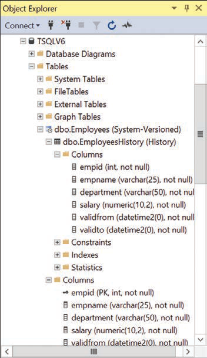
Temporal table and associated history table in SSMS
What you’re looking at: Object Explorer marks the current table as (System-Versioned) and nests the linked history table beneath it, marked (History). If you let SQL Server name the history table, it uses the form MSSQL_TemporalHistoryFor_<objectid>, so this is the easiest way to find out what it was called.
What SQL Server builds for the history table p. 345
The schema mirrors the current table, with these differences:
- No primary key.
- A clustered index on
(<endcol>, <startcol>), with page compression where possible. - Period columns carry no special options — no
GENERATED ALWAYS AS ROW START/END, noHIDDEN. - No
PERIOD FOR SYSTEM_TIMEdesignation and noSYSTEM_VERSIONINGoption.
If the history table already exists when you create the current one, SQL Server validates that the schema matches the description above and that the data is consistent (no overlapping periods). Failing either check raises a DDL-time error and the current table is not created. You can skip the data consistency check when you are certain the data is fine and cannot spare the verification time.
Converting a table that already has data p. 346
Two steps: add the period columns with defaults that make the existing rows valid, then switch versioning on. (Don’t literally run this against the Employees table — it is already temporal.)
ALTER TABLE dbo.Employees ADD
validfrom DATETIME2(0) GENERATED ALWAYS AS ROW START HIDDEN NOT NULL
CONSTRAINT DFT_Employees_validfrom DEFAULT('19000101'),
validto DATETIME2(0) GENERATED ALWAYS AS ROW END HIDDEN NOT NULL
CONSTRAINT DFT_Employees_validto DEFAULT('99991231 23:59:59'),
PERIOD FOR SYSTEM_TIME (validfrom, validto);The start default is up to you — anything not in the future. The end default must be the maximum value supported by the type.
ALTER TABLE dbo.Employees
SET ( SYSTEM_VERSIONING = ON
( HISTORY_TABLE = dbo.EmployeesHistory,
HISTORY_RETENTION_PERIOD = 5 YEARS ) );Hidden columns and SELECT * p. 347
SELECT *
FROM dbo.Employees;
-- empid empname department salary
SELECT empid, empname, department, salary, validfrom, validto
FROM dbo.Employees;
-- empid empname department salary validfrom validtoSELECT * here for illustration only. In production, list your columns explicitly — and then it makes no difference whether the period columns are hidden. The same goes for INSERT statements.
Schema changes propagate to both tables
You do not need to disable versioning to alter the schema: issue the change against the current table and SQL Server applies it to the history table too. A new non-nullable column needs a default.
ALTER TABLE dbo.Employees
ADD hiredate DATE NOT NULL
CONSTRAINT DFT_Employees_hiredate DEFAULT('19000101');The column appears in the history table as well, but the default constraint is created only in the current table — existing history rows still receive the default value. To drop the column again, drop the constraint first, then the column; SQL Server removes it from both tables.
ALTER TABLE dbo.Employees
DROP CONSTRAINT DFT_Employees_hiredate;
ALTER TABLE dbo.Employees
DROP COLUMN hiredate;Write normally; SQL Server keeps the history
You modify only the current table, with the same statements you already know. INSERT, UPDATE, DELETE, and MERGE all work; TRUNCATE is not supported for temporal tables in SQL Server 2022.
HIDDEN, ignore them. If they are not hidden but you list the target columns — which you should anyway — you can still ignore them. Only if they are visible and you omit the column list do you have to pass the DEFAULT keyword for them.
The examples below run against the Employees table. The book notes the UTC time of each statement because your timestamps will differ; query SYSUTCDATETIME in the same batch if you want to record them.
INSERT: new rows, open-ended validity p. 348
INSERT INTO dbo.Employees(empid, empname, department, salary)
VALUES(1, 'Sara', 'IT' , 50000.00),
(2, 'Don' , 'HR' , 45000.00),
(3, 'Judy', 'Sales' , 55000.00),
(4, 'Yael', 'Marketing', 55000.00),
(5, 'Sven', 'IT' , 45000.00),
(6, 'Paul', 'Sales' , 40000.00);| empid | empname | department | salary | validfrom | validto |
|---|---|---|---|---|---|
| 1 | Sara | IT | 50000.00 | 2022-02-16 17:08:41 | 9999-12-31 23:59:59 |
| 2 | Don | HR | 45000.00 | 2022-02-16 17:08:41 | 9999-12-31 23:59:59 |
| 3 | Judy | Sales | 55000.00 | 2022-02-16 17:08:41 | 9999-12-31 23:59:59 |
| 4 | Yael | Marketing | 55000.00 | 2022-02-16 17:08:41 | 9999-12-31 23:59:59 |
| 5 | Sven | IT | 45000.00 | 2022-02-16 17:08:41 | 9999-12-31 23:59:59 |
| 6 | Paul | Sales | 40000.00 | 2022-02-16 17:08:41 | 9999-12-31 23:59:59 |
Current table after the insert (abbreviated from the book, p. 349). The history table is still empty.
DELETE: the row moves, it does not vanish
DELETE FROM dbo.Employees
WHERE empid = 6;| table | empid | empname | department | salary | validfrom | validto |
|---|---|---|---|---|---|---|
| history | 6 | Paul | Sales | 40000.00 | 2022-02-16 17:08:41 | 2022-02-16 17:15:26 |
UPDATE: delete plus insert p. 350
SQL Server moves the old version to the history table with the transaction time as its period end, and keeps the new version in the current table with the transaction time as its period start.
UPDATE dbo.Employees
SET salary *= 1.05
WHERE department = 'IT';| table | empid | empname | department | salary | validfrom | validto |
|---|---|---|---|---|---|---|
| current | 1 | Sara | IT | 52500.00 | 2022-02-16 17:20:02 | 9999-12-31 23:59:59 |
| current | 5 | Sven | IT | 47250.00 | 2022-02-16 17:20:02 | 9999-12-31 23:59:59 |
| history | 1 | Sara | IT | 50000.00 | 2022-02-16 17:08:41 | 2022-02-16 17:20:02 |
| history | 5 | Sven | IT | 45000.00 | 2022-02-16 17:08:41 | 2022-02-16 17:20:02 |
SYSTEM_VERSIONING = OFF and no history table. You still need both period columns, but only the start column is meaningful: SQL Server writes the last modification time there and the maximum value of the type in the end column.
The recorded time is the transaction START time p. 350
Open a transaction at T1 and finish at T2, and every statement in it is stamped T1. The book demonstrates this with an explicit transaction containing two updates several seconds apart — both rows end up with the same validfrom.
BEGIN TRAN;
UPDATE dbo.Employees
SET department = 'Sales'
WHERE empid = 5;
-- wait a few seconds, then:
UPDATE dbo.Employees
SET department = 'IT'
WHERE empid = 3;
COMMIT TRAN;validfrom = validto — a zero-length period. FOR SYSTEM_TIME queries discard those rows automatically.
Out-of-order timestamps: see Table 9-1 below — SQL Server can refuse an update whose transaction start time predates the row’s recorded period start.
Table 9-1 · a modification sequence that fails p. 352
| Point in time | Session 1 | Session 2 |
|---|---|---|
| T1 | Begin tran A | |
| T2 | Begin tran B | |
| T3 | Update row R (recorded modification time is T2) | |
| T4 | Commit tran B | |
| T5 | Update row R (recorded modification time would be T1 — earlier than the T2 already recorded!) | |
| T6 | Commit tran A |
Table 9-1 from the book, recreated in HTML.
Session 2 updates row R first, recording T2. Session 1 then tries to update the same row, but its transaction started at T1 — earlier than the modification time already recorded. SQL Server refuses at T5:
Msg 13535, Level 16, State 0, Line 4
Data modification failed on system-versioned table 'TSQLV6.dbo.Employees'
because transaction time was earlier than period start time for affected records.
The statement has been terminated.Transaction A stays open despite the error, so plan error handling for it — the book covers transactions in Chapter 10 and error handling in Chapter 12.
Can you change history? p. 352
While versioning is enabled, users may modify only the current table; only SQL Server writes to the history table. That is deliberate — many companies use this feature for auditing, where users must not be able to rewrite the past. You can still purge old data through the retention policy, partitioning, and similar mechanisms.
But note the limit of that guarantee: a DBA can turn versioning off at any time, edit both tables, and turn it back on.
ALTER TABLE TargetTable SET ( SYSTEM_VERSIONING = OFF );
-- ...direct modifications against both tables...
ALTER TABLE TargetTable SET ( SYSTEM_VERSIONING = ON );FOR SYSTEM_TIME, five subclauses
Query the current table normally for the current state. For a past state, query the current table and add FOR SYSTEM_TIME with a subclause naming the point or period you want — SQL Server reads the current and history tables as needed.
Sample data · re-create Employees with the book’s exact timestamps (p. 353)
Run this once and your query outputs will match the book’s, down to the period columns.
USE TSQLV6;
-- Drop tables if exist
IF OBJECT_ID(N'dbo.Employees', N'U') IS NOT NULL
BEGIN
IF OBJECTPROPERTY(OBJECT_ID(N'dbo.Employees', N'U'), N'TableTemporalType') = 2
ALTER TABLE dbo.Employees SET ( SYSTEM_VERSIONING = OFF );
DROP TABLE IF EXISTS dbo.EmployeesHistory, dbo.Employees;
END;
GO
-- Create and populate Employees table
CREATE TABLE dbo.Employees
(
empid INT NOT NULL
CONSTRAINT PK_Employees PRIMARY KEY,
empname VARCHAR(25) NOT NULL,
department VARCHAR(50) NOT NULL,
salary NUMERIC(10, 2) NOT NULL,
validfrom DATETIME2(0) NOT NULL,
validto DATETIME2(0) NOT NULL
);
INSERT INTO dbo.Employees(empid, empname, department, salary, validfrom, validto) VALUES
(1 , 'Sara', 'IT' , 52500.00, '2022-02-16 17:20:02', '9999-12-31 23:59:59'),
(2 , 'Don' , 'HR' , 45000.00, '2022-02-16 17:08:41', '9999-12-31 23:59:59'),
(3 , 'Judy', 'IT' , 55000.00, '2022-02-16 17:28:10', '9999-12-31 23:59:59'),
(4 , 'Yael', 'Marketing', 55000.00, '2022-02-16 17:08:41', '9999-12-31 23:59:59'),
(5 , 'Sven', 'Sales' , 47250.00, '2022-02-16 17:28:10', '9999-12-31 23:59:59');
-- Create and populate EmployeesHistory table
CREATE TABLE dbo.EmployeesHistory
(
empid INT NOT NULL,
empname VARCHAR(25) NOT NULL,
department VARCHAR(50) NOT NULL,
salary NUMERIC(10, 2) NOT NULL,
validfrom DATETIME2(0) NOT NULL,
validto DATETIME2(0) NOT NULL,
INDEX ix_EmployeesHistory CLUSTERED(validto, validfrom)
WITH (DATA_COMPRESSION = PAGE)
);
INSERT INTO dbo.EmployeesHistory(empid, empname, department, salary, validfrom, validto) VALUES
(6 , 'Paul', 'Sales' , 40000.00, '2022-02-16 17:08:41', '2022-02-16 17:15:26'),
(1 , 'Sara', 'IT' , 50000.00, '2022-02-16 17:08:41', '2022-02-16 17:20:02'),
(5 , 'Sven', 'IT' , 45000.00, '2022-02-16 17:08:41', '2022-02-16 17:20:02'),
(3 , 'Judy', 'Sales' , 55000.00, '2022-02-16 17:08:41', '2022-02-16 17:28:10'),
(5 , 'Sven', 'IT' , 47250.00, '2022-02-16 17:20:02', '2022-02-16 17:28:10');
-- Enable system versioning
ALTER TABLE dbo.Employees ADD PERIOD FOR SYSTEM_TIME (validfrom, validto);
ALTER TABLE dbo.Employees ALTER COLUMN validfrom ADD HIDDEN;
ALTER TABLE dbo.Employees ALTER COLUMN validto ADD HIDDEN;
ALTER TABLE dbo.Employees
SET ( SYSTEM_VERSIONING = ON
( HISTORY_TABLE = dbo.EmployeesHistory,
HISTORY_RETENTION_PERIOD = 5 YEARS ) );The current state, and the general syntax p. 354
SELECT *
FROM dbo.Employees;
-- empid empname department salary
-- 1 Sara IT 52500.00
-- 2 Don HR 45000.00
-- 3 Judy IT 55000.00
-- 4 Yael Marketing 55000.00
-- 5 Sven Sales 47250.00The syntax for time travel is:
SELECT ... FROM <table_or_view> FOR SYSTEM_TIME <subclause> AS <alias>;Conveniently, you can use FOR SYSTEM_TIME when querying views, and the clause propagates to the underlying objects.
AS OF p. 354
The one you will use most: “what did this look like at that instant?” The input can be a constant, a variable, or a parameter.
SELECT *
FROM dbo.Employees FOR SYSTEM_TIME AS OF '2022-02-16 17:00:00';
-- empty: the first insert happened at 17:08:41
SELECT *
FROM dbo.Employees FOR SYSTEM_TIME AS OF '2022-02-16 17:10:00';
-- 2 Don HR 45000.00
-- 4 Yael Marketing 55000.00
-- 6 Paul Sales 40000.00
-- 1 Sara IT 50000.00
-- 5 Sven IT 45000.00
-- 3 Judy Sales 55000.00Because it is just a table reference with an alias, you can join two instances of the same table at different points in time — here, the percentage salary increase between two moments:
SELECT T2.empid, T2.empname,
CAST( (T2.salary / T1.salary - 1.0) * 100.0 AS NUMERIC(10, 2) ) AS pct
FROM dbo.Employees FOR SYSTEM_TIME AS OF '2022-02-16 17:10:00' AS T1
INNER JOIN dbo.Employees FOR SYSTEM_TIME AS OF '2022-02-16 17:25:00' AS T2
ON T1.empid = T2.empid
AND T2.salary > T1.salary;
-- empid empname pct
-- 1 Sara 5.00
-- 5 Sven 5.00FROM … TO, BETWEEN … AND, CONTAINED IN p. 356
SELECT empid, empname, department, salary, validfrom, validto
FROM dbo.Employees
FOR SYSTEM_TIME FROM '2022-02-16 17:15:26' TO '2022-02-16 17:20:02';
-- rows with validfrom = 17:20:02 are NOT includedSELECT empid, empname, department, salary, validfrom, validto
FROM dbo.Employees
FOR SYSTEM_TIME BETWEEN '2022-02-16 17:15:26' AND '2022-02-16 17:20:02';
-- this time the 17:20:02 rows ARE includedSELECT empid, empname, department, salary, validfrom, validto
FROM dbo.Employees
FOR SYSTEM_TIME CONTAINED IN('2022-02-16 17:00:00', '2022-02-16 18:00:00');
-- 6 Paul Sales 40000.00 17:08:41 17:15:26
-- 1 Sara IT 50000.00 17:08:41 17:20:02
-- 5 Sven IT 45000.00 17:08:41 17:20:02
-- 3 Judy Sales 55000.00 17:08:41 17:28:10
-- 5 Sven IT 47250.00 17:20:02 17:28:10| Subclause | Qualifying rows |
|---|---|
AS OF @datetime | validfrom <= @datetime AND validto > @datetime |
FROM @start TO @end | validfrom < @end AND validto > @start |
BETWEEN @start AND @end | validfrom <= @end AND validto > @start |
CONTAINED IN(@start, @end) | validfrom >= @start AND validto <= @end |
Table 9-2 from the book, recreated in HTML.
The four subclauses, drawn as timelines
What you’re looking at: the teal bar is one row’s validity period, the amber marker or bar is what you pass in. A filled amber endpoint means that boundary is inclusive; a hollow one means exclusive. That is the only difference between FROM … TO (both ends exclusive) and BETWEEN … AND (end inclusive). CONTAINED IN demands the row’s whole period sit inside your window.
ALL: everything, from both tables p. 358
SELECT empid, empname, department, salary, validfrom, validto
FROM dbo.Employees FOR SYSTEM_TIME ALL
WHERE empid = 5;
-- 5 Sven Sales 47250.00 2022-02-16 17:28:10 9999-12-31 23:59:59
-- 5 Sven IT 45000.00 2022-02-16 17:08:41 2022-02-16 17:20:02
-- 5 Sven IT 47250.00 2022-02-16 17:20:02 2022-02-16 17:28:10Reading the period columns in your own time zone p. 358
The period columns are DATETIME2 values in UTC. To present them as DATETIMEOFFSET in a target zone, apply AT TIME ZONE twice: once to tag the value as UTC, once to convert it. A single conversion assumes the value is already in the target zone and silently does nothing useful. Watch out for the maximum validto value, which would overflow under conversion — handle it with a CASE expression.
SELECT empid, empname, department, salary,
validfrom AT TIME ZONE 'UTC' AT TIME ZONE 'Pacific Standard Time' AS validfrom,
CASE
WHEN validto = '9999-12-31 23:59:59'
THEN validto AT TIME ZONE 'UTC'
ELSE validto AT TIME ZONE 'UTC' AT TIME ZONE 'Pacific Standard Time'
END AS validto
FROM dbo.Employees FOR SYSTEM_TIME ALL;
-- 1 Sara IT 52500.00 2022-02-16 09:20:02 -08:00 9999-12-31 23:59:59 +00:00
-- 6 Paul Sales 40000.00 2022-02-16 09:08:41 -08:00 2022-02-16 09:15:26 -08:00IF OBJECT_ID(N'dbo.Employees', N'U') IS NOT NULL
BEGIN
IF OBJECTPROPERTY(OBJECT_ID(N'dbo.Employees', N'U'), N'TableTemporalType') = 2
ALTER TABLE dbo.Employees SET ( SYSTEM_VERSIONING = OFF );
DROP TABLE IF EXISTS dbo.EmployeesHistory, dbo.Employees;
END;Four exercises, with the book’s solutions
Try each one before opening the solution. Everything runs in TSQLV6. Exercises 2 and 3 are built around three points in time you record yourself — call them P1, P2, and P3.
Exercise 1 · Create the Departments temporal table and find it in SSMS
1-1 · Create a system-versioned temporal table Departments with history table DepartmentsHistory. Columns: deptid INT, deptname VARCHAR(25), mgrid INT, all NOT NULL; plus validfrom and validto at precision zero (1 second), hidden; retention policy of six months.
USE TSQLV6;
CREATE TABLE dbo.Departments
(
deptid INT NOT NULL
CONSTRAINT PK_Departments PRIMARY KEY,
deptname VARCHAR(25) NOT NULL,
mgrid INT NOT NULL,
validfrom DATETIME2(0)
GENERATED ALWAYS AS ROW START HIDDEN NOT NULL,
validto DATETIME2(0)
GENERATED ALWAYS AS ROW END HIDDEN NOT NULL,
PERIOD FOR SYSTEM_TIME (validfrom, validto)
)
WITH ( SYSTEM_VERSIONING = ON
( HISTORY_TABLE = dbo.DepartmentsHistory,
HISTORY_RETENTION_PERIOD = 6 MONTHS ) );Check the list: primary key on deptid; SYSTEM_VERSIONING = ON; two non-nullable DATETIME2(0) period columns; start marked GENERATED ALWAYS AS ROW START; end marked GENERATED ALWAYS AS ROW END; PERIOD FOR SYSTEM_TIME; linked history table DepartmentsHistory. The optional extras are the HIDDEN markers and the six-month retention policy.
1-2 · In Object Explorer, navigate Databases → TSQLV6 → Tables. You will find Departments marked System-Versioned with DepartmentsHistory beneath it marked History.
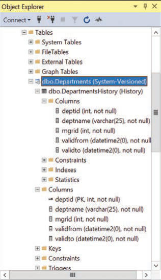
The Departments temporal table and its history table in SSMS
What you’re looking at: the same nesting pattern as Figure 9-1, this time for the exercise’s tables. Object Explorer is the quickest way to confirm that versioning is actually enabled and which history table is linked.
Exercise 2 · Modify data, recording P1, P2, and P3
2-1 · Insert four rows and note the time as P1.
SELECT CAST(SYSUTCDATETIME() AS DATETIME2(0)) AS P1;
-- P1
-- ---------------------------
-- 2022-02-18 10:26:07
INSERT INTO dbo.Departments(deptid, deptname, mgrid)
VALUES(1, 'HR' , 7 ),
(2, 'IT' , 5 ),
(3, 'Sales' , 11),
(4, 'marketing', 13);2-2 · In one transaction, rename department 3 to Sales and Marketing and delete department 4. Call the transaction start P2.
SELECT CAST(SYSUTCDATETIME() AS DATETIME2(0)) AS P2;
-- P2
-- ---------------------------
-- 2022-02-18 10:28:27
BEGIN TRAN;
UPDATE dbo.Departments
SET deptname = 'Sales and Marketing'
WHERE deptid = 3;
DELETE FROM dbo.Departments
WHERE deptid = 4;
COMMIT TRAN;2-3 · Update the manager ID of department 3 to 13, and call the time P3.
SELECT CAST(SYSUTCDATETIME() AS DATETIME2(0)) AS P3;
-- P3
-- ---------------------------
-- 2022-02-18 10:30:40
UPDATE dbo.Departments
SET mgrid = 13
WHERE deptid = 3;At this point the book recommends querying both tables with explicit validfrom and validto columns, and making sure you understand why each value is what it is.
Exercise 3 · Query the current state, a past state, and a period
3-1 · The current state.
SELECT *
FROM dbo.Departments;
-- deptid deptname mgrid
-- ----------- ------------------------- -----------
-- 1 HR 7
-- 2 IT 5
-- 3 Sales and Marketing 133-2 · The state at a moment between P2 and P3.
SELECT *
FROM dbo.Departments
FOR SYSTEM_TIME AS OF '2022-02-18 10:29:00'; -- replace with your time
-- deptid deptname mgrid
-- ----------- ------------------------- -----------
-- 1 HR 7
-- 2 IT 5
-- 3 Sales and Marketing 11Department 3 already carries its new name (updated at P2) but still has manager 11, because that change happened at P3.
3-3 · The period between P2 and P3, with the period columns listed explicitly.
SELECT deptid, deptname, mgrid, validfrom, validto
FROM dbo.Departments
FOR SYSTEM_TIME BETWEEN '2022-02-18 10:28:27' -- replace with your P2
AND '2022-02-18 10:30:40'; -- replace with your P3
-- deptid deptname mgrid validfrom validto
-- 1 HR 7 2022-02-18 10:26:07 9999-12-31 23:59:59
-- 2 IT 5 2022-02-18 10:26:07 9999-12-31 23:59:59
-- 3 Sales and Marketing 13 2022-02-18 10:30:40 9999-12-31 23:59:59
-- 3 Sales and Marketing 11 2022-02-18 10:28:27 2022-02-18 10:30:40The BETWEEN predicate is validfrom <= @end AND validto > @start, so departments 1 and 2 — valid since P1 with no end — qualify, as do both versions of department 3.
Exercise 4 · Drop both tables
You cannot drop tables that take part in an enabled system-versioning relationship, so disable versioning first.
ALTER TABLE dbo.Departments SET ( SYSTEM_VERSIONING = OFF );
DROP TABLE dbo.DepartmentsHistory, dbo.Departments;Chapter 9 in ten bullets
- A system-versioned temporal table keeps old row versions so you can audit, analyse a point in time, compare states, or repair accidental changes.
- Six required elements: a primary key, two non-nullable
DATETIME2period columns,GENERATED ALWAYS AS ROW START/END,PERIOD FOR SYSTEM_TIME,SYSTEM_VERSIONING = ON, and a linked history table. - The SQL standard defines three temporal flavours; SQL Server 2022 implements only system-versioning, where the transaction time defines the period.
- The history table mirrors the schema but not the constraints: no primary key, a clustered index on
(validto, validfrom)with page compression, plain period columns. - Mark the period columns
HIDDENandSELECT *ignores them; list them explicitly when you want them. - You modify only the current table — with
INSERT,UPDATE,DELETE, andMERGE; there is noTRUNCATEsupport. - An update is a delete plus an insert: the old version moves to history, the new one stays with
validfromset to the transaction start time. - The recorded time is the transaction START time, which produces degenerate intervals for repeated updates in one transaction and can trigger error 13535 when transactions interleave.
- Query the past with
FOR SYSTEM_TIMEand one of five subclauses:AS OF,FROM … TO,BETWEEN … AND,CONTAINED IN, orALL. - Period columns are UTC
DATETIME2; convert withAT TIME ZONEtwice, and special-case the maximumvalidtovalue.
Chapter 9 key terms
- System-versioned temporal table
- A table whose row versions are maintained automatically, with the system transaction time defining each row’s validity period.
- Period columns
- The two non-nullable
DATETIME2columns that hold the start and end of a row’s validity period, recorded in UTC. - History table
- The linked table with a mirrored schema holding older states of modified rows.
- GENERATED ALWAYS AS ROW START / END
- The options that mark which period column holds the start and which holds the end.
- PERIOD FOR SYSTEM_TIME
- The clause that designates the two period columns as the row’s validity period.
- SYSTEM_VERSIONING
- The table option that turns automatic versioning on or off and links the history table.
- HIDDEN
- An option that keeps a column out of
SELECT *and letsINSERTignore it. - HISTORY_RETENTION_PERIOD
- An optional subclause setting how long history is kept, after which a background task purges it.
- FOR SYSTEM_TIME
- The clause you add to a query to ask for a past state or period instead of the current one.
- AS OF
- The
FOR SYSTEM_TIMEsubclause that returns rows valid at one instant:validfrom <= @datetime AND validto > @datetime. - CONTAINED IN
- The subclause returning only rows whose whole validity period sits inside the input period.
- Degenerate interval
- A zero-length validity period (
validfrom = validto) produced by updating the same row twice in one transaction; discarded by time-travel queries. - Application-time period table
- A standard temporal table where the application defines the validity period, possibly in the future. Not supported in SQL Server 2022.
- Bitemporal
- A standard temporal table combining transaction time and application valid time. Not supported in SQL Server 2022.
- Ledger
- A SQL Server 2022 feature built on system versioning that uses Merkle hash trees to provide cryptographic tamper evidence.
Six quick questions
Try to answer before opening each one. If you can explain it in your own words, you’ve got the chapter.
What are the six required elements of a system-versioned temporal table?
DATETIME2 columns (any precision) for the period start and end in UTC; the start column marked GENERATED ALWAYS AS ROW START and the end column GENERATED ALWAYS AS ROW END; the designation PERIOD FOR SYSTEM_TIME (<startcol>, <endcol>); the table option SYSTEM_VERSIONING = ON; and a linked history table, which SQL Server can create for you. Optional extras: HIDDEN on the period columns and a HISTORY_RETENTION_PERIOD.How does the history table differ from the current table?
(<endcol>, <startcol>) with page compression where possible; period columns carrying no special options (not hidden, no GENERATED ALWAYS); no PERIOD FOR SYSTEM_TIME designation; and no SYSTEM_VERSIONING option.What does SQL Server do to the period columns when you INSERT, UPDATE, and DELETE?
validfrom = transaction start time, validto = the maximum value of the type. Update: the old version moves to history with validto = transaction start time, and the new version stays in the current table with validfrom = transaction start time. Delete: the row moves to history with validto = the deletion time.Why do all statements in a transaction share one timestamp, and what can go wrong?
validfrom = validto) that time-travel queries discard; and if another session has already modified the row with a later timestamp, your older transaction time is rejected with Msg 13535, “transaction time was earlier than period start time for affected records.”FROM @start TO @end versus BETWEEN @start AND @end — what changes?
FROM … TO uses validfrom < @end, so a row whose period starts exactly at @end is excluded; BETWEEN … AND uses validfrom <= @end and includes it. Both use validto > @start.Can users rewrite history, and what should you use if the answer matters?
ALTER TABLE … SET (SYSTEM_VERSIONING = OFF), edit both tables, and switch it back on, so the guarantee is procedural, not cryptographic. Where tamper evidence is required, use the ledger feature (SQL Server 2022+ and Azure SQL Database), which adds Merkle hash trees on top of system versioning — with updatable or append-only ledger tables.When two users want the same row
A transaction is a unit of work; concurrency is what happens when several of them run at once. This chapter covers the ACID properties, the locks SQL Server takes to keep transactions apart, how to troubleshoot blocking, the six isolation levels that let you choose how consistent your reads are, and the deadlocks that result when two sessions each hold what the other needs.
A unit of work, and the ACID promise
A transaction is a unit of work that might include several activities that query and modify data — and can even change the data definition. This chapter is about disk-based tables; memory-optimized tables (In-Memory OLTP) handle concurrency very differently and are outside the scope of the book.
Marking the boundaries p. 367
| Statement | What it does |
|---|---|
BEGIN TRAN | Marks the beginning of a transaction explicitly |
COMMIT TRAN | Marks the end, making the changes permanent |
ROLLBACK TRAN | Marks the end, undoing the changes |
BEGIN TRAN;
INSERT INTO dbo.T1(keycol, col1, col2) VALUES(4, 101, 'C');
INSERT INTO dbo.T2(keycol, col1, col2) VALUES(4, 201, 'X');
COMMIT TRAN;If you don’t mark the boundaries, SQL Server treats each individual statement as a transaction — it begins one before each statement and commits it when the statement ends. That is auto-commit mode, the default. Turning the session option IMPLICIT_TRANSACTIONS on means you no longer need BEGIN TRAN, but you still have to end each transaction with COMMIT TRAN or ROLLBACK TRAN — and the next statement then implicitly begins another one.
@@TRANCOUNT: it returns 0 when you are not in an open transaction and a value greater than 0 when you are.
The four ACID properties p. 368
All changes happen or none do. If the system fails before the commit is recorded in the log, SQL Server undoes the changes on restart. Severe errors (a full filegroup, for instance) also trigger an automatic rollback — but primary-key violations and lock timeouts do not. Turn on XACT_ABORT if you want every error to abort and roll back.
The database moves from one consistent state to another, adhering to every integrity rule you defined with constraints. Consistency is also the subjective part: which state of the data a concurrent reader is allowed to see is exactly what isolation levels control.
Transactions see only consistent data. With disk-based tables SQL Server offers two models: one based purely on locking (the default in a box product) and one based on row versioning (the default in Azure SQL Database).
Once the commit is acknowledged, the change is guaranteed to persist. Changes are written to the transaction log on disk before the data portion, and recovery replays (redo) or undoes (undo) as needed. SQL Server 2019 adds Accelerated Database Recovery, which changes the mechanics but not the guarantee.
A realistic transaction p. 369
An order header plus its order lines: the identity value generated for the header is captured with SCOPE_IDENTITY and reused for the lines.
USE TSQLV6;
-- Start a new transaction
BEGIN TRAN;
-- Declare a variable
DECLARE @neworderid AS INT;
-- Insert a new order into the Sales.Orders table
INSERT INTO Sales.Orders
(custid, empid, orderdate, requireddate, shippeddate,
shipperid, freight, shipname, shipaddress, shipcity,
shippostalcode, shipcountry)
VALUES
(85, 5, '20220212', '20220301', '20220216',
3, 32.38, N'Ship to 85-B', N'6789 rue de l''Abbaye', N'Reims',
N'10345', N'France');
-- Save the new order ID in a variable
SET @neworderid = SCOPE_IDENTITY();
-- Return the new order ID
SELECT @neworderid AS neworderid; -- 11078
-- Insert order lines for the new order into Sales.OrderDetails
INSERT INTO Sales.OrderDetails
(orderid, productid, unitprice, qty, discount)
VALUES(@neworderid, 11, 14.00, 12, 0.000),
(@neworderid, 42, 9.80, 10, 0.000),
(@neworderid, 72, 34.80, 5, 0.000);
-- Commit the transaction
COMMIT TRAN;ROLLBACK if something goes wrong. In real code you wrap the transaction in a TRY/CATCH construct — the book covers error handling in Chapter 12.
DELETE FROM Sales.OrderDetails
WHERE orderid > 11077;
DELETE FROM Sales.Orders
WHERE orderid > 11077;Exclusive, shared, and intent
A lock is a control resource a transaction obtains to guard a data resource, preventing conflicting access by other transactions. Two modes matter most: exclusive and shared.
ALTER DATABASE TSQLV6 SET READ_COMMITTED_SNAPSHOT OFF;. Also note that Azure SQL connections time out quickly, which can quietly break a demo.
The two main lock modes p. 371
Requested whenever you modify data, whatever your isolation level. Held until the end of the transaction. You cannot get an exclusive lock if anyone holds any lock on the resource — and nobody can get any lock while you hold an exclusive one. This behaviour is not configurable.
Requested when you read data under a locking-based isolation level. “Shared” because several transactions can hold shared locks on the same resource at once. In READ COMMITTED it is released as soon as the read statement is done with the resource — which you can change by changing isolation level.
| Requested mode ↓ / Granted → | Exclusive (X) | Shared (S) |
|---|---|---|
| Exclusive | No | No |
| Shared | No | Yes |
Table 10-1 from the book, recreated in HTML. “No” means the locks are incompatible and the requester must wait.
In plain terms: data modified by one transaction can be neither modified nor read (by default, in a box product) by another until the first finishes — and while one transaction is reading data, another cannot modify it.
Lockable resources and intent locks p. 372
SQL Server can lock rows (RID in a heap, key in an index), pages, objects (tables), databases, and more. To lock a resource, a transaction must first acquire intent locks of the same mode at higher levels of granularity: an exclusive row lock is preceded by intent exclusive locks on the page and the table. Intent locks let SQL Server detect incompatible requests at a higher level cheaply, and they do not block requests at lower levels.
| Requested ↓ / Granted → | X | S | IX | IS |
|---|---|---|---|---|
| Exclusive (X) | No | No | No | No |
| Shared (S) | No | Yes | No | Yes |
| Intent exclusive (IX) | No | No | Yes | Yes |
| Intent shared (IS) | No | Yes | Yes | Yes |
Table 10-2 from the book, recreated in HTML.
Lock granularity and escalation p. 373
Ideally only the affected rows are locked, but locks cost memory and management overhead, so SQL Server balances concurrency against resources: row locks when it estimates few rows, page locks for larger sets. It may also try to escalate fine-grained locks to a table lock: escalation is triggered when a single statement acquires at least 5,000 locks on the same object, with checks first at 1,250 locks and then every 1,250. You can control this per table with the LOCK_ESCALATION option of ALTER TABLE — disabling it, or escalating to table (default) or partition level.
Who is waiting for whom
When one transaction holds a lock and another requests an incompatible lock on the same resource, the requester enters a wait state. Blocking is normal — but when waits get long, you need to find the chain.
The demo setup p. 374
Open three query windows against TSQLV6, running under READ COMMITTED.
BEGIN TRAN;
UPDATE Production.Products
SET unitprice += 1.00
WHERE productid = 2;SELECT productid, unitprice
FROM Production.Products
WHERE productid = 2;Connection 1 acquired an exclusive lock and is holding it because the transaction is still open. Connection 2 needs a shared lock, which is incompatible — so it waits.
Step 1 · who holds what: sys.dm_tran_locks p. 374
SELECT -- use * to explore other available attributes
request_session_id AS sid,
resource_type AS restype,
resource_database_id AS dbid,
DB_NAME(resource_database_id) AS dbname,
resource_description AS res,
resource_associated_entity_id AS resid,
request_mode AS mode,
request_status AS status
FROM sys.dm_tran_locks;| sid | restype | dbname | res | mode | status |
|---|---|---|---|---|---|
| 53 | DATABASE | TSQLV6 | S | GRANT | |
| 52 | DATABASE | TSQLV6 | S | GRANT | |
| 53 | PAGE | TSQLV6 | 1:127 | IS | GRANT |
| 52 | PAGE | TSQLV6 | 1:127 | IX | GRANT |
| 53 | OBJECT | TSQLV6 | IS | GRANT | |
| 52 | OBJECT | TSQLV6 | IX | GRANT | |
| 52 | KEY | TSQLV6 | (020068e8b274) | X | GRANT |
| 53 | KEY | TSQLV6 | (020068e8b274) | S | WAIT |
Abbreviated output from the book, p. 375.
Session 53 is waiting for a shared lock on the same row (res and resid match) that session 52 holds exclusively. Walk up the lock hierarchy of either session to the object lock and translate its resid with OBJECT_NAME to find the table — here Production.Products.
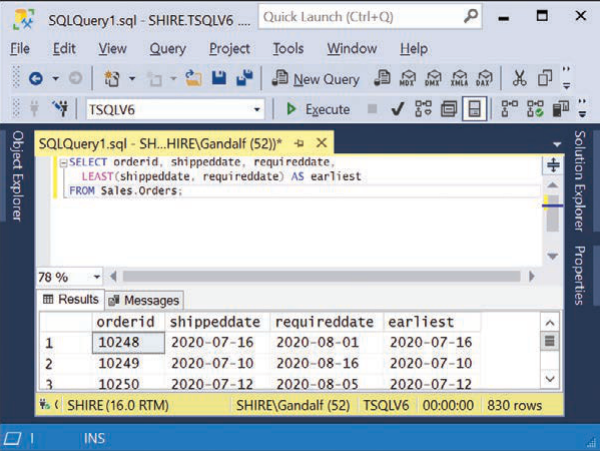
The session ID shown in SQL Server Management Studio
What you’re looking at: you can find your own session ID in three ways — by querying @@SPID, in the status bar at the bottom of the focused query window (in parentheses after the login name), and in the window’s caption. Every DMV in this section reports session IDs, so this is the first thing you need to know.
Step 2 · connections, sessions, and blocking p. 376
SELECT -- use * to explore
session_id AS sid,
connect_time,
last_read,
last_write,
most_recent_sql_handle
FROM sys.dm_exec_connections
WHERE session_id IN(52, 53);Pass most_recent_sql_handle to a table function to see the code each session last ran. The book uses CROSS APPLY — the APPLY operator from Chapter 5 — to do it for every connection at once:
SELECT session_id, text
FROM sys.dm_exec_connections
CROSS APPLY sys.dm_exec_sql_text(most_recent_sql_handle) AS ST
WHERE session_id IN(52, 53);
-- SQL Server 2016+: the same idea with a newer function
SELECT session_id, event_info
FROM sys.dm_exec_connections
CROSS APPLY sys.dm_exec_input_buffer(session_id, NULL) AS IB
WHERE session_id IN(52, 53);SELECT -- use * to explore
session_id AS sid,
login_time,
host_name,
program_name,
login_name,
nt_user_name,
last_request_start_time,
last_request_end_time
FROM sys.dm_exec_sessions
WHERE session_id IN(52, 53);SELECT -- use * to explore
session_id AS sid,
blocking_session_id,
command,
sql_handle,
database_id,
wait_type,
wait_time,
wait_resource
FROM sys.dm_exec_requests
WHERE blocking_session_id > 0;
-- sid blocking_session_id command wait_type wait_time wait_resource
-- 53 52 SELECT LCK_M_S 1383760 KEY: 8:72057594038845440 (020068e8b274)sys.dm_exec_requests has a row for every active request, and blocking_session_id > 0 isolates exactly the blocked ones. sys.dm_os_waiting_tasks is an alternative that carries only waiting tasks and adds a few attributes of its own, including the resource description in conflict.
Step 3 · timeouts and KILL p. 379
By default a session waits forever. Set LOCK_TIMEOUT in milliseconds to cap the wait — 0 times out immediately, -1 (the default) means no timeout.
SET LOCK_TIMEOUT 5000;
SELECT productid, unitprice
FROM Production.Products
WHERE productid = 2;
-- Msg 1222, Level 16, State 51, Line 3
-- Lock request time out period exceeded.COMMIT, ROLLBACK, or KILL ends it.
-- Connection 2
SET LOCK_TIMEOUT -1;
SELECT productid, unitprice
FROM Production.Products
WHERE productid = 2;
-- productid unitprice
-- 2 19.00 <-- after the blocker was killed and rolled back
-- Connection 3
KILL 52; -- rolls back Connection 1's transaction and releases the lockIf you close a query window while a transaction is open, SSMS asks you whether to commit or roll it back.
Four rungs on the locking ladder
Isolation levels determine how consistent the data you read is. You cannot change how writers lock, but you can change how readers lock — and that indirectly influences writers too.
Setting the level p. 380
-- for the whole session
SET TRANSACTION ISOLATION LEVEL <isolation name>;
-- for one query
SELECT ... FROM <table> WITH (<isolationname>);- The session option keeps the spaces:
REPEATABLE READ. The table hint drops them:WITH (REPEATABLEREAD). - Some hints have synonyms:
NOLOCK=READUNCOMMITTED,HOLDLOCK=SERIALIZABLE. - You cannot set
READ COMMITTED SNAPSHOTas a session or query option at all — it is a database flag (see the next section).
SQL Server supports four isolation levels based purely on locking — READ UNCOMMITTED, READ COMMITTED (the box default), REPEATABLE READ, and SERIALIZABLE — plus two based on locking and row versioning: SNAPSHOT and READ COMMITTED SNAPSHOT (the Azure SQL default). With the four locking levels, the higher you go, the stricter and longer-lived the readers’ locks: more consistency, less concurrency.
READ UNCOMMITTED p. 381
The reader asks for no shared lock at all, so it can never conflict with a writer — which means it can read uncommitted changes. Those are dirty reads.
BEGIN TRAN;
UPDATE Production.Products
SET unitprice += 1.00
WHERE productid = 2;
SELECT productid, unitprice
FROM Production.Products
WHERE productid = 2;
-- 2 20.00SET TRANSACTION ISOLATION LEVEL READ UNCOMMITTED;
SELECT productid, unitprice
FROM Production.Products
WHERE productid = 2;
-- 2 20.00 <-- never committed!If Connection 1 then rolls back, the value 20.00 the reader saw never existed as a committed state. That is the dirty read.
READ COMMITTED p. 382
The lowest level that prevents dirty reads, and the default in a box product. A reader must obtain a shared lock, so it waits while a writer holds an exclusive lock; once the writer commits, the reader sees only committed changes.
The catch is duration: the shared lock is released as soon as the read statement is done with the resource — not even at the end of the statement, let alone the transaction. Between two reads of the same resource in the same transaction, no lock is held, so another transaction can modify it in between and the reader gets a different value each time. That is a nonrepeatable read (or inconsistent analysis).
REPEATABLE READ p. 384
Here the reader holds its shared locks until the end of the transaction. Once it has read a resource, nobody can get an exclusive lock on it until the reader commits — so reads repeat.
SET TRANSACTION ISOLATION LEVEL REPEATABLE READ;
BEGIN TRAN;
SELECT productid, unitprice
FROM Production.Products
WHERE productid = 2;
-- 2 19.00UPDATE Production.Products
SET unitprice += 1.00
WHERE productid = 2; -- waits: X conflicts with the reader's S lockThis level also prevents lost updates — two transactions read a value, calculate, and write it back, with the last writer silently winning. Below REPEATABLE READ no lock survives the read; here both sides hold shared locks, so neither can escalate to an exclusive lock and the conflict surfaces as a deadlock instead.
SERIALIZABLE p. 386
REPEATABLE READ locks only the rows the query found the first time. Rows inserted later that also match the filter are phantoms, and reading them on a second pass is a phantom read. SERIALIZABLE behaves like REPEATABLE READ but also locks the whole range of keys qualifying for the filter — including rows that do not exist yet.
SET TRANSACTION ISOLATION LEVEL SERIALIZABLE;
BEGIN TRAN
SELECT productid, productname, categoryid, unitprice
FROM Production.Products
WHERE categoryid = 1;
-- 12 rowsINSERT INTO Production.Products
(productname, supplierid, categoryid,
unitprice, discontinued)
VALUES('Product ABCDE', 1, 1, 20.00, 0); -- blocked!In every lower isolation level this insert would succeed. Under SERIALIZABLE it waits, and the second read in Connection 1 returns the same 12 rows with no phantoms.
How long a reader’s shared lock lives
What you’re looking at: each teal bar is a shared lock. Under READ COMMITTED the lock dies the moment the read finishes, leaving a gap between the two reads where another transaction can slip in — hence nonrepeatable reads. REPEATABLE READ holds it to the end of the transaction. SERIALIZABLE adds the dashed key-range lock underneath, which is what blocks inserts of rows that do not exist yet.
DELETE FROM Production.Products
WHERE productid > 77;
-- run in all open connections:
SET TRANSACTION ISOLATION LEVEL READ COMMITTED;Readers that never wait
With row versioning, SQL Server keeps previous committed versions of rows in a version store — in tempdb, or in the user database itself when Accelerated Database Recovery is enabled. Readers take no shared locks, so readers don’t block writers and writers don’t block readers.
Two answers to the same conflict
What you’re looking at: on the left, the reader queues behind the writer (the amber bar is the wait). On the right, the writer copies the pre-change version of the row into the version store, and the reader is served that older version instead of waiting. The trade-off: UPDATE and DELETE pay an extra copying cost, while readers usually get dramatically faster. (INSERT writes nothing to the version store — there is no earlier version.)
SNAPSHOT p. 388
A reader gets the last committed version that was available when the transaction started: committed reads, repeatable reads, no phantoms — the consistency of SERIALIZABLE, achieved with versions instead of locks. In a box product you must opt in at the database level first:
ALTER DATABASE TSQLV6 SET ALLOW_SNAPSHOT_ISOLATION ON;BEGIN TRAN;
UPDATE Production.Products
SET unitprice += 1.00
WHERE productid = 2;
SELECT productid, unitprice
FROM Production.Products
WHERE productid = 2;
-- 2 20.00Even though Connection 1 runs under READ COMMITTED, SQL Server copies the pre-update version (19.00) into the version store, because SNAPSHOT is enabled at the database level.
SET TRANSACTION ISOLATION LEVEL SNAPSHOT;
BEGIN TRAN;
SELECT productid, unitprice
FROM Production.Products
WHERE productid = 2;
-- 2 19.00 <-- not blocked; the version from tempdb
COMMIT TRAN; -- commit Connection 1 first, then read again: still 19.00Because the snapshot is taken at transaction start, reading again after Connection 1 commits still returns 19.00. Only a new transaction sees 20.00. Once no transaction needs the old version, a cleanup thread can remove it — which is why very long transactions make the version store grow.
Update conflict detection p. 390
REPEATABLE READ, SERIALIZABLE, and SNAPSHOT all prevent lost updates — but only SNAPSHOT tells you so specifically. It inspects the version store, notices that another transaction modified the row between your read and your write, and fails your transaction:
Msg 3960, Level 16, State 2, Line 1
Snapshot isolation transaction aborted due to update conflict. You cannot use snapshot
isolation to access table 'Production.Products' directly or indirectly in database
'TSQLV6' to update, delete, or insert the row that has been modified or deleted by
another transaction. Retry the transaction or change the isolation level for the
update/delete statement.The lower levels produce a generic deadlock error instead, which could have been caused by anything — so Table 10-3 credits only SNAPSHOT with detecting update conflicts. Wrap your transaction in error-handling code and retry.
READ COMMITTED SNAPSHOT p. 392
Also row-versioning based, but it gives a statement-level view rather than a transaction-level one, and it does not detect update conflicts. In practice it behaves like READ COMMITTED — including nonrepeatable reads — except that readers take no shared locks and never wait.
ALTER DATABASE TSQLV6 SET READ_COMMITTED_SNAPSHOT ON; -- needs exclusive DB access
-- if you want shared locks anyway, per query:
SELECT * FROM dbo.T1 WITH (READCOMMITTEDLOCK);ALLOW_SNAPSHOT_ISOLATION, turning on READ_COMMITTED_SNAPSHOT changes the meaning of the READ COMMITTED isolation level itself. With the flag on, READ COMMITTED SNAPSHOT is the default for every session that does not set a level explicitly. That is why some texts treat the two as one isolation level with two different semantic treatments.
-- Connection 1: update and leave the transaction open (price becomes 20.00)
-- Connection 2:
BEGIN TRAN;
SELECT productid, unitprice
FROM Production.Products
WHERE productid = 2;
-- 2 19.00 <-- version at STATEMENT start
-- Connection 1: COMMIT TRAN;
-- Connection 2, same transaction, read again:
SELECT productid, unitprice
FROM Production.Products
WHERE productid = 2;
COMMIT TRAN;
-- 2 20.00 <-- version at THIS statement's start: a nonrepeatable readALTER DATABASE TSQLV6 SET ALLOW_SNAPSHOT_ISOLATION OFF;
ALTER DATABASE TSQLV6 SET READ_COMMITTED_SNAPSHOT OFF;Table 10-3 · all six levels at a glance p. 394
| Isolation level | Uncommitted reads? | Nonrepeatable reads? | Lost updates? | Phantom reads? | Detects update conflicts? | Row versioning? |
|---|---|---|---|---|---|---|
| READ UNCOMMITTED | Yes | Yes | Yes | Yes | No | No |
| READ COMMITTED | No | Yes | Yes | Yes | No | No |
| READ COMMITTED SNAPSHOT | No | Yes | Yes | Yes | No | Yes |
| REPEATABLE READ | No | No | No | Yes | No | No |
| SERIALIZABLE | No | No | No | No | No | No |
| SNAPSHOT | No | No | No | No | Yes | Yes |
Table 10-3 from the book, recreated in HTML. “Yes” in the first four columns means the phenomenon is allowed.
Each holds what the other needs
A deadlock is two or more sessions blocking each other. SQL Server detects it and terminates one of the transactions; otherwise the sessions would stay deadlocked forever.
The classic deadly embrace
What you’re looking at: the solid teal arrows are locks already granted; the dashed amber arrows are the blocked requests. C1 holds Products and wants OrderDetails; C2 holds OrderDetails and wants Products. Neither can proceed, so SQL Server picks a victim — the session with the lowest DEADLOCK_PRIORITY, or, if none is set, the one that did the least work and is therefore cheapest to roll back.
-- Connection 1
USE TSQLV6;
BEGIN TRAN;
UPDATE Production.Products
SET unitprice += 1.00
WHERE productid = 2;
-- Connection 2
BEGIN TRAN;
UPDATE Sales.OrderDetails
SET unitprice += 1.00
WHERE productid = 2;
-- Connection 1 (blocked: needs S on OrderDetails, C2 holds X)
SELECT orderid, productid, unitprice
FROM Sales.OrderDetails
WHERE productid = 2;
COMMIT TRAN;
-- Connection 2 (blocked: needs S on Products, C1 holds X) --> deadlock
SELECT productid, unitprice
FROM Production.Products
WHERE productid = 2;
COMMIT TRAN;
-- Msg 1205, Level 13, State 51: Transaction (Process ID 52) was deadlocked
-- on lock resources with another process and has been chosen as the
-- deadlock victim. Rerun the transaction.Four ways to see fewer deadlocks p. 396
The longer a transaction runs, the longer it holds locks. Take out anything that is not logically part of the unit of work — and never write a transaction that waits for user input.
The “deadly embrace” above happens because the two transactions touch the same objects in inverse order. If both go Products → OrderDetails, this deadlock cannot occur.
Often there is no real logical conflict at all — two transactions handle different rows. But without an index to support the filter, SQL Server scans and locks the whole table, and that is what deadlocks.
Under READ COMMITTED SNAPSHOT readers take no shared locks, which eliminates the whole class of deadlocks that revolve around shared locks.
UPDATE Production.Products
SET unitprice = 19.00
WHERE productid = 2;
UPDATE Sales.OrderDetails
SET unitprice = 19.00
WHERE productid = 2
AND orderid >= 10500;
UPDATE Sales.OrderDetails
SET unitprice = 15.20
WHERE productid = 2
AND orderid < 10500;Three lab exercises
These exercises are different from the earlier chapters’: there is no separate Solutions section, because the instructions are the exercise. Exercises 1, 2, and 3 are independent of each other. Start every one with USE TSQLV6;.
Exercise 1 · Troubleshoot a blocking chain (steps 1-1 to 1-6)
Assumes the READ COMMITTED (locking) isolation level — the default in a box product. On Azure SQL Database, turn versioning off first.
1-1 · Open three connections. In Connection 1, open a transaction and update rows:
BEGIN TRAN;
UPDATE Sales.OrderDetails
SET discount = 0.05
WHERE orderid = 10249;1-2 · In Connection 2, query the same rows. You will be blocked.
SELECT orderid, productid, unitprice, qty, discount
FROM Sales.OrderDetails
WHERE orderid = 10249;1-3 · In Connection 3, identify the locks and session IDs in the blocking chain.
SELECT -- use * to explore
request_session_id AS sid,
resource_type AS restype,
resource_database_id AS dbid,
resource_description AS res,
resource_associated_entity_id AS resid,
request_mode AS mode,
request_status AS status
FROM sys.dm_tran_locks;1-4 · Substitute the session IDs you found for 52 and 53, and gather connection, session, and blocking information.
-- Connection info:
SELECT -- use * to explore
session_id AS sid,
connect_time,
last_read,
last_write,
most_recent_sql_handle
FROM sys.dm_exec_connections
WHERE session_id IN(52, 53);
-- Session info
SELECT -- use * to explore
session_id AS sid,
login_time,
host_name,
program_name,
login_name,
nt_user_name,
last_request_start_time,
last_request_end_time
FROM sys.dm_exec_sessions
WHERE session_id IN(52, 53);
-- Blocking
SELECT -- use * to explore
session_id AS sid,
blocking_session_id,
command,
sql_handle,
database_id,
wait_type,
wait_time,
wait_resource
FROM sys.dm_exec_requests
WHERE blocking_session_id > 0;1-5 · Get the SQL text of the sessions involved.
SELECT session_id, text
FROM sys.dm_exec_connections
CROSS APPLY sys.dm_exec_sql_text(most_recent_sql_handle) AS ST
WHERE session_id IN(52, 53);1-6 · Roll back in Connection 1 and watch Connection 2 return the two rows, unmodified — discounts still 0.00.
ROLLBACK TRAN;Remember: KILL <session_id> is your escape hatch when a blocker’s transaction cannot be closed any other way.
Exercise 2 · Feel each isolation level (steps 2-1 to 2-6)
Each part is a two-connection script: modify in Connection 1, read in Connection 2, and note whether you are blocked and what you see.
2-1 · READ UNCOMMITTED — Connection 2 sees the modified, uncommitted rows.
-- Connection 1
BEGIN TRAN;
UPDATE Sales.OrderDetails
SET discount += 0.05
WHERE orderid = 10249;
SELECT orderid, productid, unitprice, qty, discount
FROM Sales.OrderDetails
WHERE orderid = 10249;
-- Connection 2
SET TRANSACTION ISOLATION LEVEL READ UNCOMMITTED;
SELECT orderid, productid, unitprice, qty, discount
FROM Sales.OrderDetails
WHERE orderid = 10249; -- not blocked: dirty read
-- Connection 1
ROLLBACK TRAN;2-2 · READ COMMITTED — the same script, but Connection 2 is blocked until Connection 1 commits, then sees the committed values.
2-3 · REPEATABLE READ — Connection 1 sets the level, opens a transaction and reads (discount 0.00). Connection 2’s UPDATE is blocked; the second read in Connection 1 still returns 0.00; Connection 2 completes only after the commit.
-- Connection 1
SET TRANSACTION ISOLATION LEVEL REPEATABLE READ;
BEGIN TRAN;
SELECT orderid, productid, unitprice, qty, discount
FROM Sales.OrderDetails
WHERE orderid = 10249;
-- read again: still 0.00, then
COMMIT TRAN;
-- Connection 2 (blocked until Connection 1 commits)
UPDATE Sales.OrderDetails
SET discount += 0.05
WHERE orderid = 10249;2-4 · SERIALIZABLE — Connection 1 queries order 10249; Connection 2’s INSERT of a new row with that order ID is blocked, so the second read returns no phantoms. In every lower level that insert would succeed. Reset both connections with SET TRANSACTION ISOLATION LEVEL READ COMMITTED; afterwards.
2-5 · SNAPSHOT — enable it with ALTER DATABASE TSQLV6 SET ALLOW_SNAPSHOT_ISOLATION ON;, then:
-- Connection 1
BEGIN TRAN;
UPDATE Sales.OrderDetails
SET discount += 0.05
WHERE orderid = 10249;
SELECT orderid, productid, unitprice, qty, discount
FROM Sales.OrderDetails
WHERE orderid = 10249;
-- Connection 2: NOT blocked — discount 0.00, the version at transaction start
SET TRANSACTION ISOLATION LEVEL SNAPSHOT;
BEGIN TRAN;
SELECT orderid, productid, unitprice, qty, discount
FROM Sales.OrderDetails
WHERE orderid = 10249;
-- Connection 1: COMMIT TRAN;
-- Connection 2, still in the same transaction: still 0.00
-- Connection 2: COMMIT TRAN; then query again: now 0.052-6 · READ COMMITTED SNAPSHOT — turn on ALTER DATABASE TSQLV6 SET READ_COMMITTED_SNAPSHOT ON; and repeat. The difference: Connection 2 is still not blocked and still sees 0.00 on its first read, but after Connection 1 commits, the second read in the same transaction returns 0.05 — because the version is taken at statement start, not transaction start.
ALTER DATABASE TSQLV6 SET ALLOW_SNAPSHOT_ISOLATION OFF;
ALTER DATABASE TSQLV6 SET READ_COMMITTED_SNAPSHOT OFF;
-- in Azure SQL Database, the defaults are both ONExercise 3 · Cause a deadlock, then prevent it (steps 3-1 to 3-6)
Assumes versioning is turned off. Open two connections.
-- Connection 1 (step 3-2)
BEGIN TRAN;
UPDATE Production.Products
SET unitprice += 1.00
WHERE productid = 2;
-- Connection 2 (step 3-3)
BEGIN TRAN;
UPDATE Production.Products
SET unitprice += 1.00
WHERE productid = 3;
-- Connection 1 (step 3-4): blocked
SELECT productid, unitprice
FROM Production.Products
WHERE productid = 3;
COMMIT TRAN;
-- Connection 2 (step 3-5): blocked too --> deadlock error in one of them
SELECT productid, unitprice
FROM Production.Products
WHERE productid = 2;
COMMIT TRAN;3-6 · How would you prevent it? Note that the two transactions modify different rows (products 2 and 3) — the conflict comes entirely from each one reading the row the other just changed, so each holds a lock the other needs. The fixes from the “Deadlocks” section all apply: keep the transactions as short as possible, have both sessions touch rows in the same order (lowest productid first), and consider READ COMMITTED SNAPSHOT so those SELECTs take no shared locks at all — which removes this whole class of deadlock. And if a filter were not supported by an index, each statement would scan and lock far more than it should, which is the other common cause of deadlocks with no real logical conflict.
Chapter 10 in ten bullets
- A transaction is a unit of work whose boundaries you mark with
BEGIN TRAN,COMMIT TRAN, andROLLBACK TRAN; without them, each statement auto-commits. - ACID: atomicity (all or nothing), consistency (one valid state to another), isolation (only consistent data), durability (a committed change survives).
- Writers always take exclusive locks and hold them to the end of the transaction — that part is not configurable.
@@TRANCOUNTtells you whether you are in a transaction;XACT_ABORTmakes every error roll back. - Readers take shared locks under the locking-based levels. Exclusive blocks everything; shared blocks only exclusive.
- Intent locks (IS/IX) sit at higher granularity so SQL Server can detect conflicts cheaply; locks escalate to the table at 5,000 locks on one object.
- Troubleshoot blocking with
sys.dm_tran_locks(who holds what),sys.dm_exec_connectionsandsys.dm_exec_sessions(who they are), andsys.dm_exec_requestsfiltered onblocking_session_id > 0. LOCK_TIMEOUTcaps the wait with Msg 1222 — and does not roll back the transaction.KILLends a blocker, rolling it back.- Four locking levels climb a ladder: dirty reads → nonrepeatable reads → lost updates → phantoms, each rung fixed by holding locks longer or wider.
- Two row-versioning levels (
SNAPSHOT,READ COMMITTED SNAPSHOT) let readers skip shared locks entirely: faster reads, extra copy cost onUPDATE/DELETE. - Deadlocks are resolved by killing a victim (Msg 1205); prevent them with short transactions, a consistent access order, good indexing, and a suitable isolation level.
Chapter 10 key terms
- Transaction
- A unit of work that may query and modify data and change the data definition.
- Auto-commit
- The default mode in which each individual statement is its own transaction.
- ACID
- Atomicity, consistency, isolation, durability — the four transaction properties.
- Exclusive lock (X)
- The lock a writer takes and holds to the end of the transaction; incompatible with every other mode.
- Shared lock (S)
- The lock a reader takes under a locking-based isolation level; compatible with other shared locks.
- Intent lock
- A lock taken at a higher level of granularity (IS/IX) so conflicting requests there can be detected cheaply.
- Lock escalation
- Replacing many fine-grained locks with a table lock, triggered at 5,000 locks on one object.
- Blocking
- A wait state entered when a requested lock is incompatible with one already granted.
- Blocking chain
- Two or more sessions linked by who is waiting for whom.
- Dirty read
- Reading uncommitted changes, possible only under
READ UNCOMMITTED. - Nonrepeatable read
- Getting a different value on a second read in the same transaction, because no lock was held in between.
- Lost update
- Two transactions read, calculate, and write, and the last writer silently overwrites the other.
- Phantom read
- A second read in the same transaction returning new rows that match the filter.
- Version store
- Where SQL Server keeps previous committed row versions —
tempdb, or the user database when ADR is enabled. - Update conflict
- Detected only by
SNAPSHOT(Msg 3960) when another transaction modified the row between your read and your write. - Deadlock
- Two or more sessions blocking each other; SQL Server kills one with Msg 1205.
- DEADLOCK_PRIORITY
- A session option from –10 to 10 that decides who becomes the deadlock victim.
Six quick questions
Try to answer before opening each one. If you can explain it in your own words, you’ve got the chapter.
What are the four ACID properties, in one sentence each?
Which lock behaviour can you configure, and which can you not?
What do intent locks buy you?
Which DMVs do you reach for when a query hangs, and what does each tell you?
sys.dm_tran_locks shows granted and waiting locks with mode and status; sys.dm_exec_connections gives connect time, last read/write, and the most recent SQL handle; sys.dm_exec_sessions gives login, host, program, and last request times; and sys.dm_exec_requests filtered on blocking_session_id > 0 isolates the blocked requests with the wait type, wait time, and resource.READ COMMITTED versus REPEATABLE READ versus SERIALIZABLE: what does each add?
READ COMMITTED prevents dirty reads by requiring a shared lock, but releases it as soon as the read is done — so nonrepeatable reads are possible. REPEATABLE READ holds shared locks to the end of the transaction, giving repeatable reads and preventing lost updates. SERIALIZABLE additionally locks the whole key range matching the filter, which blocks inserts and therefore prevents phantoms.SNAPSHOT versus READ COMMITTED SNAPSHOT — same mechanism, different semantics?
SNAPSHOT gives a transaction-level consistent view (taken at transaction start) and detects update conflicts with Msg 3960. READ COMMITTED SNAPSHOT gives a statement-level view and detects no conflicts, so it behaves like READ COMMITTED — including nonrepeatable reads. It is also enabled by a database flag that redefines READ COMMITTED itself.When your data is a network, not a set of tables
SQL Graph adds a second way to model and query your data: node tables for the things, edge tables for the relationships, and a MATCH clause that lets you draw the relationships as ASCII art. This chapter builds the same fictitious social network twice — once traditionally, once as a graph — then compares how each model reads when you query it.
Nodes, edges, and a social network
The SQL Graph feature provides an alternative to traditional modeling and querying. It arrived in SQL Server 2017 and was enhanced later. The modeling part uses specialized node and edge tables: nodes are the vertices of the graph, edges connect pairs of nodes. The querying part uses a MATCH clause to say how the objects connect.
Is it worth it? p. 409
For simple needs — just connecting nodes with edges — graph queries are often more concise and intuitive than joins, but on their own that rarely justifies the departure from traditional modeling. Where the feature really shines is in the hard problems: shortest path between nodes, transitive closure, and traversing arbitrary-length paths. Some of those capabilities already exist in T-SQL, some don’t; the more Microsoft adds, the more appealing the option becomes.
The scenario: a fictitious social network p. 410
Three entities and six interactions:
Personal or company. An ID, a name, a join date, and reputation points.
Status messages or news items by a single poster. An ID, a posting date and time, and the post text.
Books, articles, and blogs authored by one or more accounts. An ID, a publication date, and a title.
- Two accounts befriend each other — a two-way (commutative) relationship: one requests, one confirms. Record the start date.
- One account follows another — a one-way relationship. A can follow B without B following A. Record who follows whom and the start date.
- A post is posted by some account — exactly one.
- A post may have a parent post — in which case it’s a reply. Either one parent or none.
- An account likes a post — record the date and time of the like.
- A publication is authored by one or more accounts.
To keep the two models clearly apart, each set of tables lives in its own schema:
USE TSQLV6;
GO
CREATE SCHEMA Norm; -- schema for traditional modeling
GO
CREATE SCHEMA Graph; -- schema for graph modelingFigure 11-1 · the traditional model p. 411
The traditional design takes seven tables. Note the plural naming convention — a table is SQL’s counterpart to a relation, whose body is a set of tuples, so Accounts, Posts, Publications.
| Table | Columns | Primary key | Foreign keys & other rules |
|---|---|---|---|
Norm.Accounts | accountid, accountname, joindate, reputationpoints | accountid | — |
Norm.Posts | postid, parentpostid, accountid, dt, posttext | postid | accountid → Accounts; parentpostid → Posts (self) |
Norm.Publications | pubid, pubdate, title | pubid | — |
Norm.Friendships | accountid1, accountid2, startdate | (accountid1, accountid2) | both → Accounts; CHECK(accountid1 < accountid2) |
Norm.Followings | accountid1, accountid2, startdate | (accountid1, accountid2) | both → Accounts (no check constraint) |
Norm.Likes | accountid, postid, dt | (accountid, postid) | accountid → Accounts; postid → Posts |
Norm.AuthorsPublications | accountid, pubid | (pubid, accountid) | accountid → Accounts; pubid → Publications |
Figure 11-1 from the book, recreated as an HTML table — the book’s artwork is vector art that cannot be extracted as an image.
“A is friends with B” is the same fact as “B is friends with A”, so you store one row, not two. The trick that prevents the mirrored duplicate is a check constraint accountid1 < accountid2 — you then have to supply the IDs in the right order.
A can follow B without B following A, and each direction has its own start date. So each relationship is its own row, with accountid1 as the follower and accountid2 as the followee — and deliberately no check constraint.
CREATE TABLE Norm.Accounts
(
accountid INT NOT NULL,
accountname NVARCHAR(50) NOT NULL,
joindate DATE NOT NULL
CONSTRAINT DFT_Accounts_joindate DEFAULT(SYSDATETIME()),
reputationpoints INT NOT NULL
CONSTRAINT DFT_Accounts_reputationpoints DEFAULT(0),
CONSTRAINT PK_Accounts PRIMARY KEY(accountid)
);
CREATE TABLE Norm.Posts
(
postid INT NOT NULL,
parentpostid INT NULL,
accountid INT NOT NULL,
dt DATETIME2(0) NOT NULL
CONSTRAINT DFT_Posts_dt DEFAULT(SYSDATETIME()),
posttext NVARCHAR(1000) NOT NULL,
CONSTRAINT PK_Posts PRIMARY KEY(postid),
CONSTRAINT FK_Posts_Accounts FOREIGN KEY(accountid)
REFERENCES Norm.Accounts(accountid),
CONSTRAINT FK_Posts_Posts FOREIGN KEY(parentpostid)
REFERENCES Norm.Posts(postid)
);
CREATE TABLE Norm.Friendships
(
accountid1 INT NOT NULL,
accountid2 INT NOT NULL,
startdate DATE NOT NULL
CONSTRAINT DFT_Friendships_startdate DEFAULT(SYSDATETIME()),
CONSTRAINT PK_Friendships PRIMARY KEY(accountid1, accountid2),
-- undirected graph; don't allow mirrored pair
CONSTRAINT CHK_Friendships_act1_lt_act2
CHECK(accountid1 < accountid2),
CONSTRAINT FK_Friendships_Accounts_act1 FOREIGN KEY(accountid1)
REFERENCES Norm.Accounts(accountid),
CONSTRAINT FK_Friendships_Accounts_act2 FOREIGN KEY(accountid2)
REFERENCES Norm.Accounts(accountid)
);Two design choices follow from cardinality rather than from modeling style: a post has exactly one poster, so accountid lives in Posts; a post has at most one parent, so parentpostid (nullable, self-referencing FK) lives there too. A publication, by contrast, can have several authors — so it needs its own junction table.
Three nodes, six edges
In graph modeling you have two kinds of entity: nodes (the endpoints of a relationship) and edges (the way the from node relates to the to node). You mark tables with AS NODE and AS EDGE, and connect them in queries with ASCII art:
from_node-(edge)->to_node
-- an account likes a post:
Account-(Likes)->PostNaming conventions: nodes are nouns in the singular (Account, Post, Publication); edges are verbs in the third person (Follows), with the time aspect baked in — present tense for relationships that are currently relevant (Likes, Follows), past tense for things that happened (Posted, Authored), and sometimes an auxiliary verb or preposition for readability (IsReplyTo, IsFriendOf). Think English.
The whole model on one canvas
What you’re looking at: every relationship is an arrow from a from node to a to node. Two edges connect an account to itself (Follows, IsFriendOf) and one connects a post to itself (IsReplyTo), because in each case both endpoints are the same kind of node. Where the traditional model buried those relationships in columns (parentpostid, accountid) or in junction tables, the graph model promotes each one to a first-class edge table.
Nine tables instead of seven
What you’re looking at: the graph model needs nine tables where the traditional model needed seven — but the relationships that used to be columns are now tables you can query directly. As a rule of thumb from the book: foreign key relationships in traditional modeling usually translate to edge tables in graph modeling. Only three edge tables carry extra user columns here (Likes.dt, Follows.startdate, IsFriendOf.startdate); the rest are pure connections.
AS NODE, AS EDGE, and the hidden columns
Node and edge tables are ordinary tables with a clause at the end. SQL Server adds several columns you never declare, and several you must supply yourself when you insert edges.
Creating node tables p. 420
CREATE TABLE Graph.Account
(
accountid INT NOT NULL,
accountname NVARCHAR(50) NOT NULL,
joindate DATE NOT NULL
CONSTRAINT DFT_Account_joindate DEFAULT(SYSDATETIME()),
reputationpoints INT NOT NULL
CONSTRAINT DFT_Account_reputationpoints DEFAULT(0),
CONSTRAINT PK_Account PRIMARY KEY(accountid)
) AS NODE;You never declare $node_id — SQL Server creates it. Querying the table returns a JSON string rather than the internal value:
$node_id_778BA26000F9442194D5F7A4EFC932A0 accountid accountname
--------------------------------------------- ---------- ------------
{"type":"node","schema":"Graph","table":"Account","id":0} 641 Inka
{"type":"node","schema":"Graph","table":"Account","id":1} 71 Miko
{"type":"node","schema":"Graph","table":"Account","id":3} 421 Buziaccountid, postid, pubid) to every node table: it is far easier to filter on a key you control, and a node that you delete and reinsert gets a brand-new graph ID.
Creating edge tables p. 423
CREATE TABLE <table_name> AS EDGE; -- no user columns
CREATE TABLE <table_name> (<columns_and_constraints>) AS EDGE; -- with user columnsYou can restrict which node tables an edge may connect with an edge constraint (SQL Server 2019+, Azure SQL):
[CONSTRAINT <constraint_name>]
CONNECTION (<from_node_table_1> TO <to_node_table_1>
[ ... , <from_node_table_n> TO <to_node_table_n>])
[ON DELETE <referential_action>] -- NO ACTION or CASCADECREATE TABLE Graph.IsReplyTo
(
CONSTRAINT EC_IsReplyTo CONNECTION (Graph.Post TO Graph.Post)
ON DELETE NO ACTION
) AS EDGE;
-- prevent duplicate edges between the same pair of nodes
ALTER TABLE Graph.IsReplyTo
ADD CONSTRAINT UNQ_IsReplyTo_fromid_toid UNIQUE($from_id, $to_id);$from_id and $to_id referencing $node_id. If one edge table serves several pairs of node tables, two foreign keys would contradict each other. An edge constraint is more sophisticated: list every pair in one constraint (CONNECTION (A TO B, C TO D)) and any pair satisfies it. Separate constraints for each pair would all have to hold at once — which is typically impossible.
ON DELETE CASCADE deletes a node’s connecting edges automatically; NO ACTION rejects the delete. There is no update action, because you cannot update $node_id anyway.
Inserting edges p. 424
An edge row stores the $node_id values of the two nodes it connects, and you are responsible for looking them up. The verbose way is a scalar subquery per node:
INSERT INTO Graph.IsReplyTo($from_id, $to_id) VALUES
( (SELECT $node_id FROM Graph.Post WHERE postid = 449),
(SELECT $node_id FROM Graph.Post WHERE postid = 13) ),
( (SELECT $node_id FROM Graph.Post WHERE postid = 677),
(SELECT $node_id FROM Graph.Post WHERE postid = 13) );
-- ... and so on for all 13 edgesThe concise way — and the right way at any real volume — is a table value constructor joined to the node tables:
TRUNCATE TABLE Graph.IsReplyTo;
INSERT INTO Graph.IsReplyTo($from_id, $to_id)
SELECT FP.$node_id AS fromid, TP.$node_id AS toid
FROM (VALUES( 449, 13),
( 677, 13),
( 857, 109),
(1021, 449),
(1061, 1031),
(1259, 1151)) AS D(frompostid, topostid)
INNER JOIN Graph.Post AS FP
ON D.frompostid = FP.postid
INNER JOIN Graph.Post AS TP
ON D.topostid = TP.postid;And that is exactly how you migrate an existing traditional implementation: create the node tables, populate them with INSERT SELECT from the source, create the edge tables, then populate each edge table from the source joined to the new node tables.
TRUNCATE TABLE Graph.IsReplyTo;
INSERT INTO Graph.IsReplyTo($from_id, $to_id)
SELECT FP.$node_id AS fromid, TP.$node_id AS toid
FROM Norm.Posts AS P
INNER JOIN Graph.Post AS FP
ON P.postid = FP.postid
INNER JOIN Graph.Post AS TP
ON P.parentpostid = TP.postid;$from_id and $to_id values of an existing edge row. To change which nodes an edge connects, delete it and insert a new one — which gets a new $edge_id.
Querying metadata p. 434
SELECT SCHEMA_NAME(schema_id) + N'.' + name AS tablename,
CASE
WHEN is_node = 1 THEN 'NODE'
WHEN is_edge = 1 THEN 'EDGE'
ELSE 'Not SQLGraph table'
END AS tabletype
FROM sys.tables
WHERE is_node = 1 OR is_edge = 1;
-- tablename tabletype
-- ------------------ ----------
-- Graph.Account NODE
-- Graph.Post NODE
-- Graph.Publication NODE
-- Graph.IsReplyTo EDGE
-- ...Every node table has two graph-specific columns: an internal graph_id (BIGINT, graph_type_desc = GRAPH_ID) you cannot query directly, and the exposed computed $node_id (GRAPH_ID_COMPUTED) holding the JSON string. Every edge table has eight: internally graph_id, from_obj_id, from_id, to_obj_id, to_id, and exposed $edge_id, $from_id, $to_id.
Table 11-1 · the system functions p. 437
| Function | Purpose |
|---|---|
OBJECT_ID_FROM_NODE_ID | Extract the object_id from a node_id. |
GRAPH_ID_FROM_NODE_ID | Extract the graph_id from a node_id. |
NODE_ID_FROM_PARTS | Construct a node_id from an object_id and a graph_id. |
OBJECT_ID_FROM_EDGE_ID | Extract object_id from edge_id. |
GRAPH_ID_FROM_EDGE_ID | Extract identity from edge_id. |
EDGE_ID_FROM_PARTS | Construct edge_id from object_id and identity. |
Table 11-1 from the book, recreated in HTML.
SELECT $node_id,
OBJECT_ID_FROM_NODE_ID($node_id) AS obj_id,
GRAPH_ID_FROM_NODE_ID($node_id) AS graph_id
FROM Graph.Account;
-- find a node by its internal graph ID
SELECT $node_id, accountid, accountname
FROM Graph.Account
WHERE GRAPH_ID_FROM_NODE_ID($node_id) = 3;
-- 421 Buzi
-- build a node ID from its parts
SELECT NODE_ID_FROM_PARTS(OBJECT_ID(N'Graph.Account'), 3);
-- {"type":"node","schema":"Graph","table":"Account","id":3}The MATCH clause
MATCH is the main language extension you get for querying graph data. The general shape of a SELECT against graph objects:
SELECT <select_list>
FROM <commalist of graph objects>
WHERE MATCH(<match_specification_1>) [ ... AND MATCH(<match_specification_n>)];Your first pattern p. 439
Accounts with their posts. Traditionally:
SELECT A.accountid, A.accountname, P.postid, P.posttext
FROM Norm.Accounts AS A
INNER JOIN Norm.Posts AS P
ON A.accountid = P.accountid;With graph modeling you always go through the edge table, so you list three objects and draw the arrow:
SELECT accountid, accountname, postid, posttext
FROM Graph.Account, Graph.Posted, Graph.Post
WHERE MATCH(Account-(Posted)->Post);The arrow direction is yours to choose — to_node<-(edge)-from_node means exactly the same thing, and the freedom to point either way is what makes elaborate patterns possible. If you alias a table in FROM, you must use the alias in the pattern too.
Account-(Posted)->Post is closer to an outer join with the edge table as the preserved side than to an inner join. With edge constraints in place you cannot have orphaned edges, so inner and outer give the same answer anyway — but if integrity is not enforced, orphaned edges show up as outer rows, and those rows are a red flag that your data is inconsistent.
Traditional T-SQL against graph objects is fully supported: join the edge table to the two node tables explicitly on $from_id/$to_id vs. $node_id. That is useful for troubleshooting a pattern, and for the places where graph syntax is not supported (recursive queries, for instance). The reverse is not true — you cannot use graph syntax against traditional tables.
Merging patterns p. 445
Posts and their direct replies, with the posting account name for each side. Three relationships: Account1 posted Post; Account2 posted Reply; Reply is a reply to Post. Because the same tables play two roles, each appears twice with its own alias:
SELECT Account1.accountname AS account1, Post.posttext,
Account2.accountname AS account2, Reply.posttext AS replytext
FROM Graph.Account AS Account1, Graph.Posted, Graph.Post,
Graph.Account AS Account2, Graph.Posted AS RepliedWith,
Graph.Post AS Reply, Graph.IsReplyTo
WHERE MATCH(Account1-(Posted)->Post<-(IsReplyTo)-Reply
<-(RepliedWith)-Account2) -- white spaces are ignored
ORDER BY Post.dt, Post.postid, Reply.dt;How do you merge two patterns that share a node? Put the shared node in the middle and keep the arrow directions that match its role in each relationship:
- Same node is the from node in both:
N2<-(E1)-N1-(E2)->N3 - Same node is the to node in both:
N3-(E2)->N1<-(E1)-N2 - From node in one, to node in the other:
N2-(E1)->N1-(E2)->N3
If a single long pattern is not your style, the same logic can be written as a conjunction inside one MATCH, or as separate MATCH predicates ANDed together. All three forms are logically equivalent and treated identically by SQL Server — pick whichever your team reads best.
WHERE MATCH(Account1-(Posted)->Post<-(IsReplyTo)-Reply
<-(RepliedWith)-Account2)
WHERE MATCH(Account1-(Posted)->Post
AND Account2-(RepliedWith)->Reply
AND Reply-(IsReplyTo)->Post)
WHERE MATCH(Account1-(Posted)->Post)
AND MATCH(Account2-(RepliedWith)->Reply)
AND MATCH(Reply-(IsReplyTo)->Post)Add one more relationship — the replying account must follow the account that posted the parent — and the pattern just grows by one arrow, with Account1 legitimately appearing twice:
WHERE MATCH(Account1-(Posted)->Post<-(IsReplyTo)-Reply
<-(RepliedWith)-Account2-(Follows)->Account1)The traditional equivalent needs seven joins and reads nothing like English. Read the pattern in the direction of the arrows and you get: “Account 1 posted a post. The reply is a reply to that post. Account 2 replied with that reply. Account 2 follows account 1.”
OR and NOT logic p. 448
MATCH with ANDed base patterns, or multiple MATCH predicates. There is no direct OR and no direct negation.
Two workarounds exist. Set operators (UNION for OR, EXCEPT for NOT) repeat the whole ANDed pattern and differ only in the ORed edge — clear, but verbose. Correlated EXISTS subqueries keep the ANDed logic in the outer query and put each ORed branch in its own EXISTS — more concise, and the book’s preferred option.
SELECT Account1.accountname AS account1, Post.posttext,
Account2.accountname AS account2, Reply.posttext AS replytext
FROM Graph.Account AS Account1, Graph.Posted, Graph.Post,
Graph.Account AS Account2, Graph.Posted AS RepliedWith,
Graph.Post AS Reply, Graph.IsReplyTo
WHERE MATCH(Account1-(Posted)->Post<-(IsReplyTo)-Reply
<-(RepliedWith)-Account2)
AND (EXISTS (SELECT * FROM Graph.Follows
WHERE MATCH(Account2-(Follows)->Account1))
OR
EXISTS (SELECT * FROM Graph.IsFriendOf
WHERE MATCH(Account2-(IsFriendOf)->Account1)));WHERE MATCH(Account1-(Posted)->Post<-(IsReplyTo)-Reply
<-(RepliedWith)-Account2)
AND NOT EXISTS
(SELECT *
FROM Graph.Likes
WHERE MATCH(Account2-(Likes)->Post));Notice the references to Account1 and Account2 inside the subqueries — those are the correlations, and they are what make this technique work.
Recursive queries against graph tables
Before SQL Graph existed, recursive CTEs were the standard way to traverse arbitrary-length paths. They still are, because at the time of writing normal match patterns do not handle arbitrary lengths — only the specialized SHORTEST_PATH option does.
The subgraph task p. 451
Given an input post ID, return that post plus every reply below it, direct and indirect. The natural first attempt looks like this — and it fails:
DECLARE @postid AS INT = 13;
WITH C AS
(
SELECT NULL AS parentpostid, postid, posttext
FROM Graph.Post
WHERE postid = @postid
UNION ALL
SELECT ParentPost.postid AS parentpostid,
ChildPost.postid, ChildPost.posttext
FROM C AS ParentPost, Graph.IsReplyTo, Graph.Post AS ChildPost
WHERE MATCH(ChildPost-(IsReplyTo)->ParentPost)
)
SELECT parentpostid, postid, posttext
FROM C;
-- Msg 13940, Level 16, State 1, Line 1373
-- Cannot use a derived table 'ParentPost' in a MATCH clause.The MATCH clause will not accept the recursive reference to the CTE name in place of a graph object. Most people give up here — but there is a workaround: add the real node table, and use the recursive reference as a proxy, matching the two by key in the WHERE clause.
DECLARE @postid AS INT = 13;
WITH C AS
(
SELECT NULL AS parentpostid, postid, posttext
FROM Graph.Post
WHERE postid = @postid
UNION ALL
SELECT ParentPost.postid AS parentpostid,
ChildPost.postid, ChildPost.posttext
FROM C, Graph.Post AS ParentPost, Graph.IsReplyTo,
Graph.Post AS ChildPost
WHERE ParentPost.postid = C.postid -- recursive ref used as proxy
AND MATCH(ChildPost-(IsReplyTo)->ParentPost)
)
SELECT parentpostid, postid, posttext
FROM C;
-- parentpostid postid posttext
-- NULL 13 Got a new kitten. Any suggestions for a name?
-- 13 449 Maybe Pickle?
-- 13 677 Ambrosius?
-- 449 1021 It does look a bit sour faced :)
-- 449 1031 How about Gherkin?
-- 1031 1061 I love Gherkin!
-- 1061 1187 So you don't like Pickle!? I'M UNFRIENDING YOU!!!The alternative is a plain join-based recursive member, matching $from_id/$to_id to $node_id yourself. One less table, so slightly more efficient — but less natural to read. Test both and decide whether the extra table costs you anything you care about.
DECLARE @postid AS INT = 13;
WITH C AS
(
SELECT $node_id AS nodeid, NULL AS parentpostid, postid, posttext
FROM Graph.Post
WHERE postid = @postid
UNION ALL
SELECT CP.$node_id AS nodeid, PP.postid AS parentpostid,
CP.postid, CP.posttext
FROM C AS PP -- parent post
INNER JOIN Graph.IsReplyTo AS R
ON R.$to_id = PP.nodeid
INNER JOIN Graph.Post AS CP -- child post
ON R.$from_id = CP.$node_id
)
SELECT parentpostid, postid, posttext
FROM C;Sorting and indentation p. 453
A subgraph usually wants topological order (a parent before its descendants, and all of one sibling’s descendants before the next sibling) plus indentation proportional to depth. Add two columns to the CTE: lvl (0 in the anchor, parent + 1 in the recursive member) and a string sortkey (the constant '.' in the anchor, parent’s sortkey + current post ID + '.' in the recursive member). Then order by sortkey and indent with REPLICATE.
DECLARE @postid AS INT = 13;
WITH C AS
(
SELECT NULL AS parentpostid, postid, posttext,
0 AS lvl,
CAST('.' AS VARCHAR(MAX)) AS sortkey
FROM Graph.Post
WHERE postid = @postid
UNION ALL
SELECT ParentPost.postid AS parentpostid,
ChildPost.postid, ChildPost.posttext,
C.lvl + 1 AS lvl,
CONCAT(C.sortkey, ChildPost.postid, '.') AS sortkey
FROM C, Graph.Post AS ParentPost, Graph.IsReplyTo,
Graph.Post AS ChildPost
WHERE ParentPost.postid = C.postid -- recursive ref used as proxy
AND MATCH(ChildPost-(IsReplyTo)->ParentPost)
)
SELECT
REPLICATE(' | ', lvl) + posttext AS post
FROM C
ORDER BY sortkey;
-- post
-- -------------------------------------------------------------
-- Got a new kitten. Any suggestions for a name?
-- | Maybe Pickle?
-- | | It does look a bit sour faced :)
-- | | How about Gherkin?
-- | | | I love Gherkin!
-- | | | | So you don't like Pickle!? I'M UNFRIENDING YOU!!!
-- | Ambrosius?Shortest paths, transitive closure, and chains
Finding the shortest path between two nodes is the classic graph problem, and it is where SQL Graph earns its keep. SHORTEST_PATH is available from SQL Server 2019 and in Azure SQL Database.
Arbitrary-length patterns p. 455
Direct friends are a simple pattern. Covering indirect friendships means extending it to an arbitrary-length pattern:
SELECT Account1.accountname AS account1,
Account2.accountname AS account2
FROM Graph.Account AS Account1, Graph.IsFriendOf,
Graph.Account AS Account2
WHERE MATCH(Account1-(IsFriendOf)->Account2)
AND Account1.accountname = N'Orli';
-- account1 account2
-- ----------- -----------
-- Orli Inka
-- Orli Tami
-- Orli MitziTo extend it: keep the starting node in FROM as usual, then declare every table in the repeating part with FOR PATH plus an alias, and wrap that part of the pattern in parentheses with a regex-style quantifier — + for unlimited hops, {1, N} to cap it at N.
SELECT
Account1.accountname + N'->'
+ STRING_AGG(Account2.accountname, N'->')
WITHIN GROUP(GRAPH PATH) AS friendships
FROM
Graph.Account AS Account1,
Graph.IsFriendOf FOR PATH AS IFO,
Graph.Account FOR PATH AS Account2
WHERE MATCH(SHORTEST_PATH(Account1(-(IFO)->Account2)+))
AND Account1.accountname = N'Orli';
-- friendships
-- ------------------------------
-- Orli->Inka
-- Orli->Tami
-- Orli->Mitzi
-- Orli->Tami->Miko
-- Orli->Tami->Buzi
-- Orli->Mitzi->Orli
-- Orli->Mitzi->Yatzek
-- Orli->Tami->Buzi->Alma
-- Orli->Tami->Miko->Omer
-- Orli->Mitzi->Yatzek->Lilach
-- Orli->Tami->Buzi->Alma->StavLimit the hops by swapping the quantifier: SHORTEST_PATH(Account1(-(IFO)->Account2){1, 2}) returns only paths of up to two hops.
Why you need the graph path aggregates
What you’re looking at: a shortest-path row for the path Orli->Tami->Miko->Omer. Account1 belongs to the part of the pattern considered once, so Account1.accountname is a plain value. Account2 belongs to the repeating part, so Account2.accountname is an ordered collection in graph path order — and T-SQL refuses to put a collection in a SELECT list.
SELECT Account1.accountname, Account2.accountname -- invalid
...
-- Msg 13961, Level 16, State 1, Line 1572
-- The alias or identifier 'Account2.accountname' cannot be used in the
-- select list, order by, group by, or having context.The fix is a graph path aggregate function — STRING_AGG, LAST_VALUE, SUM, COUNT, AVG, MIN, MAX — applied to the collection with WITHIN GROUP (GRAPH PATH). And the same restriction applies to WHERE: you cannot filter on a collection, so extract the value you need into the SELECT list and filter in an outer query.
WITH C AS
(
SELECT
Account1.accountname + N'->'
+ STRING_AGG(Account2.accountname, N'->')
WITHIN GROUP(GRAPH PATH) AS friendships,
LAST_VALUE(Account2.accountname)
WITHIN GROUP (GRAPH PATH) AS lastnode -- to access last node
FROM
Graph.Account AS Account1,
Graph.IsFriendOf FOR PATH AS IFO,
Graph.Account FOR PATH AS Account2
WHERE MATCH(SHORTEST_PATH(Account1(-(IFO)->Account2)+))
AND Account1.accountname = N'Orli'
)
SELECT friendships
FROM C
WHERE lastnode = N'Stav';
-- friendships
-- ------------------------------
-- Orli->Tami->Buzi->Alma->StavTransitive closure p. 462
Remove both account filters and you get the shortest paths between every source and every target (121 rows here). Keep only the first and last node of each path and you have the transitive closure: every pair of nodes with a direct or indirect path between them. Add COUNT(...) WITHIN GROUP (GRAPH PATH) and you also get the number of hops.
WITH C AS
(
SELECT
Account1.accountname AS firstnode,
COUNT(Account2.accountid)
WITHIN GROUP(GRAPH PATH) AS hops,
LAST_VALUE(Account2.accountname)
WITHIN GROUP (GRAPH PATH) AS lastnode
FROM
Graph.Account AS Account1,
Graph.IsFriendOf FOR PATH AS IFO,
Graph.Account FOR PATH AS Account2
WHERE MATCH(SHORTEST_PATH(Account1(-(IFO)->Account2)+))
)
SELECT firstnode AS account1, lastnode AS account2, hops
FROM C
WHERE firstnode < lastnode; -- drop self-pairs and mirrored pairs
-- account1 account2 hops
-- ----------- ----------- -----
-- Inka Tami 1
-- Inka Orli 1
-- Miko Tami 1
-- ...
-- Inka Miko 2
-- Buzi Lilach 2
-- ...
-- Inka Omer 3
-- Inka Stav 4
-- Orli Stav 4Chaining paths with LAST_NODE p. 464
LAST_NODE lets you chain two arbitrary-length patterns: the end of one becomes the start of the next. To find the shortest friendship chain from Orli to Yatzek through a given middle account, with neither Orli nor Yatzek allowed to appear as an intermediary, filter the Account2 and Account3 collections with derived tables and chain the two SHORTEST_PATH calls:
WITH C AS
(
SELECT
Account1.accountname + N'->'
+ STRING_AGG(Account2.accountname, N'->')
WITHIN GROUP(GRAPH PATH) + N'->'
+ STRING_AGG(Account3.accountname, N'->')
WITHIN GROUP(GRAPH PATH) AS friendships,
LAST_VALUE(Account2.accountname)
WITHIN GROUP (GRAPH PATH) AS midnode,
LAST_VALUE(Account3.accountname)
WITHIN GROUP (GRAPH PATH) AS lastnode
FROM
Graph.Account AS Account1,
( SELECT * FROM Graph.Account
WHERE accountname <> N'Yatzek' ) FOR PATH AS Account2,
( SELECT * FROM Graph.Account
WHERE accountname <> N'Orli') FOR PATH AS Account3,
Graph.IsFriendOf FOR PATH AS IFO1,
Graph.IsFriendOf FOR PATH AS IFO2
WHERE MATCH(SHORTEST_PATH(Account1(-(IFO1)->Account2)+)
AND SHORTEST_PATH(LAST_NODE(Account2)(-(IFO2)->Account3)+))
AND Account1.accountname = N'Orli'
)
SELECT friendships
FROM C
WHERE midnode = N'Stav'
AND lastnode = N'Yatzek';
-- friendships
-- ---------------------------------------------
-- Orli->Tami->Buzi->Alma->Stav->Lilach->YatzekYou can also compare two chains directly with LAST_NODE(Account2) = LAST_NODE(Account3) — for instance, to pair the shortest friendship and the shortest follow chain that start and end with the same accounts.
What’s still missing p. 471
Today “shortest” means “fewest hops”. The book imagines a WEIGHT BY SUM(distance) clause alongside the edge in the pattern — invented syntax, but it shows the need: the shortest route by total distance or total travel time, not by number of road segments.
Would return a separate row per match instead of an ordered collection, with attributes from all three tables. That would make classic subgraph and path tasks — today the domain of recursive queries — expressible in a single line.
Deleting, updating, and merging edges
Deleting and updating node rows by your own key is unremarkable. Edge rows are the interesting part, because they do not store your keys — they store system-generated node IDs, so you have to translate.
Deleting an edge p. 474
Alma (661) stops following Buzi (421). Either use scalar subqueries to convert the keys:
BEGIN TRAN;
DECLARE @actid1 AS INT = 661, @actid2 AS INT = 421;
DELETE FROM Graph.Follows
WHERE $from_id = (SELECT $node_id FROM Graph.Account
WHERE accountid = @actid1)
AND $to_id = (SELECT $node_id FROM Graph.Account
WHERE accountid = @actid2);
ROLLBACK TRAN;…or use a match pattern, with a second FROM clause listing the objects and a second DELETE clause naming the deletion target:
BEGIN TRAN;
DECLARE @actid1 AS INT = 661, @actid2 AS INT = 421;
DELETE FROM Follows
FROM Graph.Account AS Account1, Graph.Account AS Account2,
Graph.Follows
WHERE MATCH(Account1-(Follows)->Account2)
AND Account1.accountid = @actid1
AND Account2.accountid = @actid2;
SELECT
Account1.accountid AS actid1, Account1.accountname AS actname1,
Account2.accountid AS actid2, Account2.accountname AS actname2,
Follows.startdate
FROM Graph.Account AS Account1, Graph.Follows,
Graph.Account AS Account2
WHERE MATCH(Account1-(Follows)->Account2)
AND Account1.accountid = 661;
ROLLBACK TRAN;
-- actid1 actname1 actid2 actname2 startdate
-- 661 Alma 71 Miko 2021-05-16
-- 661 Alma 941 Stav 2022-01-06Updating an edge p. 476
You cannot update $from_id or $to_id; to repoint an edge, delete it and insert a new one. Other attributes update normally — here with OUTPUT to show what changed:
BEGIN TRAN;
DECLARE @actid1 AS INT = 661, @actid2 AS INT = 421,
@startdate AS DATE = '20210802';
UPDATE Graph.Follows
SET startdate = @startdate
OUTPUT deleted.startdate AS olddate, inserted.startdate AS newdate
WHERE $from_id = (SELECT $node_id FROM Graph.Account
WHERE accountid = @actid1)
AND $to_id = (SELECT $node_id FROM Graph.Account
WHERE accountid = @actid2);
ROLLBACK TRAN;
-- olddate newdate
-- 2021-05-18 2021-08-02
BEGIN TRAN;
UPDATE Follows
SET startdate = @startdate
OUTPUT deleted.startdate AS olddate, inserted.startdate AS newdate
FROM Graph.Account AS Account1, Graph.Account AS Account2,
Graph.Follows
WHERE MATCH(Account1-(Follows)->Account2)
AND Account1.accountid = @actid1
AND Account2.accountid = @actid2;
ROLLBACK TRAN;Merging an edge p. 477
From SQL Server 2019 you can use MATCH as the MERGE predicate. The source is built from the input variables joined to two instances of the node table; the target is the edge table; the nodes are the source and the edge is the target of the pattern.
BEGIN TRAN;
DECLARE @actid1 AS INT = 661, @actid2 AS INT = 421,
@startdate AS DATE = '20210802';
MERGE INTO Graph.Follows
USING (SELECT @actid1, @actid2, @startdate)
AS SRC(actid1, actid2, startdate)
INNER JOIN Graph.Account AS Account1
ON SRC.actid1 = Account1.accountid
INNER JOIN Graph.Account AS Account2
ON SRC.actid2 = Account2.accountid
ON MATCH(Account1-(Follows)->Account2)
WHEN MATCHED THEN UPDATE
SET startdate = SRC.startdate
WHEN NOT MATCHED THEN INSERT($from_id, $to_id, startdate)
VALUES(Account1.$node_id, Account2.$node_id, SRC.startdate);
ROLLBACK TRAN;Run it with an existing relationship (Alma → Buzi) and the start date changes; run it with a new one (Alma → Yatzek) and a new edge row appears.
DROP TABLE IF EXISTS
Norm.Friendships, Norm.Followings, Norm.Likes,
Norm.AuthorsPublications, Norm.Posts, Norm.Accounts,
Norm.Publications;
DROP TABLE IF EXISTS
Graph.IsReplyTo, Graph.IsFriendOf, Graph.Follows, Graph.Posted,
Graph.Likes, Graph.Authored, Graph.Post, Graph.Account,
Graph.Publication;
GO
DROP SCHEMA IF EXISTS Norm;
DROP SCHEMA IF EXISTS Graph;Four exercises, with solutions
All exercises assume you are connected to TSQLV6 and have created the Graph schema objects from this chapter. Try each one before opening the answer.
Exercise 1 · Who follows Stav? (parts 1-1 to 1-4)
1-1 · Who follows Stav? Expected: Alma, Lilach.
SELECT Account2.accountname
FROM Graph.Account AS Account1, Graph.Account AS Account2,
Graph.Follows
WHERE MATCH(Account2-(Follows)->Account1)
AND Account1.accountname = N'Stav';1-2 · Who follows Stav, Yatzek, or both? Expected: 6 rows.
SELECT Account2.accountname, Account1.accountname AS follows
FROM Graph.Account AS Account1, Graph.Account AS Account2,
Graph.Follows
WHERE MATCH(Account2-(Follows)->Account1)
AND Account1.accountname IN (N'Stav', N'Yatzek');1-3 · Who follows both? Expected: Lilach. You need three Account instances and two Follows instances, with the shared from node in the middle of the pattern.
SELECT Account3.accountname
FROM Graph.Account AS Account1, Graph.Account AS Account2,
Graph.Account AS Account3, Graph.Follows AS Follows1,
Graph.Follows AS Follows2
WHERE MATCH(Account2<-(Follows2)-Account3-(Follows1)->Account1)
AND Account1.accountname = N'Stav'
AND Account2.accountname = N'Yatzek';1-4 · Who follows Stav but not Yatzek? Expected: Alma. Since patterns cannot be negated, negate EXISTS instead.
SELECT Account3.accountname
FROM Graph.Account AS Account1,
Graph.Account AS Account3, Graph.Follows AS Follows1
WHERE MATCH(Account3-(Follows1)->Account1)
AND Account1.accountname = N'Stav'
AND NOT EXISTS(SELECT *
FROM Graph.Account AS Account2,
Graph.Follows AS Follows2
WHERE MATCH(Account3-(Follows2)->Account2)
AND Account2.accountname = N'Yatzek');Exercise 2 · Friends, followers, or both (parts 2-1 and 2-2)
2-1 · Relationships where the first account is a friend of, follows, or both. Expected: 42 rows. The long way is a UNION of two queries; the short way is a disjunction of EXISTS predicates.
SELECT
Account1.accountid AS actid1, Account1.accountname AS act1,
Account2.accountid AS actid2, Account2.accountname AS act2
FROM Graph.Account AS Account1, Graph.Account AS Account2
WHERE EXISTS (SELECT * FROM Graph.IsFriendOf
WHERE MATCH(Account1-(IsFriendOf)->Account2))
OR EXISTS (SELECT * FROM Graph.Follows
WHERE MATCH(Account1-(Follows)->Account2));2-2 · Friend of, but does not follow. Expected: 12 rows. Swap UNION for EXCEPT, or OR for AND NOT.
SELECT
Account1.accountid AS actid1, Account1.accountname AS act1,
Account2.accountid AS actid2, Account2.accountname AS act2
FROM Graph.Account AS Account1, Graph.Account AS Account2
WHERE EXISTS (SELECT * FROM Graph.IsFriendOf
WHERE MATCH(Account1-(IsFriendOf)->Account2))
AND NOT EXISTS (SELECT * FROM Graph.Follows
WHERE MATCH(Account1-(Follows)->Account2));Exercise 3 · The chain leading to a post, with a recursive query
Given an input post ID, return the chain of posts leading to it. For input 1187 the expected output runs from the root post down to the input post (5 rows). Remember the proxy trick: the recursive reference to the CTE cannot be a node in the pattern, so it matches the child node by key instead.
DECLARE @postid AS INT = 1187;
WITH C AS
(
SELECT postid, posttext, 0 AS sortkey
FROM Graph.Post
WHERE postid = @postid
UNION ALL
SELECT ParentPost.postid, ParentPost.posttext,
C.sortkey + 1 AS sortkey
FROM C, Graph.Post AS ParentPost, Graph.IsReplyTo,
Graph.Post AS ChildPost
WHERE ChildPost.postid = C.postid -- recursive ref used as proxy
AND MATCH(ChildPost-(IsReplyTo)->ParentPost)
)
SELECT postid, posttext
FROM C
ORDER BY sortkey DESC;The join-based alternative avoids the extra table by carrying $node_id through the CTE and matching it against the edge’s $from_id and the parent’s $node_id. Same trade-off as before: native graph syntax at the cost of one more table.
Exercise 4 · The same chain, with SHORTEST_PATH
Neither query in this solution is recursive. Unify the input post (sort key 0) with the ancestor posts found by an arbitrary-length pattern, then order by the hop count descending.
DECLARE @postid AS INT = 1187;
WITH C AS
(
SELECT postid, posttext, 0 AS sortkey
FROM Graph.Post
WHERE postid = @postid
UNION ALL
SELECT
LAST_VALUE(Post.postid) WITHIN GROUP (GRAPH PATH) AS postid,
LAST_VALUE(Post.posttext) WITHIN GROUP (GRAPH PATH) AS posttext,
COUNT(Post.postid) WITHIN GROUP (GRAPH PATH) AS sortkey
FROM
Graph.Post AS Reply,
Graph.IsReplyTo FOR PATH AS IRT,
Graph.Post FOR PATH AS Post
WHERE MATCH(SHORTEST_PATH(Reply(-(IRT)->Post)+))
AND Reply.postid = @postid
)
SELECT postid, posttext
FROM C
ORDER BY sortkey DESC;The + quantifier means one or more matches, so the pattern keeps walking up until it runs out of ancestor posts.
Chapter 11 in ten bullets
- SQL Graph is an alternative model — node tables for vertices, edge tables for relationships — not a replacement for relational design. Weigh the migration and refactoring cost before you commit.
- Nodes are
AS NODE, edges areAS EDGE, and both carry hidden columns:$node_idon nodes,$edge_id,$from_id,$to_idon edges. Always add your own key column too. - Graph IDs are not identities — they start at 0, are never reset by
TRUNCATE, and cannot be supplied by you. - Edge constraints (
CONNECTION (A TO B, C TO D) ON DELETE ...) do what foreign keys cannot: they allow several node-table pairs in one constraint, and they stop orphaned edges. - Populating edges is your job — look up
$node_idvalues with subqueries or, far better, join a values constructor to the node tables. MATCH(from_node-(edge)->to_node)is the heart of graph querying; the arrow can point either way, and patterns sharing a node can be merged.- Graph paths behave like outer joins with the edge table preserved, so orphaned edges show up as outer rows — a symptom of missing integrity.
- No OR or NOT in patterns — use
UNION/EXCEPT, or correlatedEXISTS/NOT EXISTSsubqueries. - Recursive queries still do arbitrary-length traversal, and the
MATCHclause rejects the recursive CTE reference — use the proxy workaround, or write the recursive member with explicit joins on$from_id/$to_id. SHORTEST_PATHcounts hops, not weight: declare repeating tables withFOR PATH, quantify with+or{1, N}, and collapse the resulting ordered collections withSTRING_AGG/LAST_VALUE/COUNT...WITHIN GROUP (GRAPH PATH).
Chapter 11 key terms
- Node table
- A table marked
AS NODErepresenting the vertices of the graph; it gets an implicit$node_id. - Edge table
- A table marked
AS EDGEconnecting a from node to a to node; it gets$edge_id,$from_id, and$to_id. - Graph ID
- The system-generated BIGINT that, combined with the object ID, forms a node or edge ID. Unique per object in the table.
- Edge constraint
- A
CONNECTION (from TO to)rule restricting which node tables an edge may connect, withNO ACTIONorCASCADEon delete. - MATCH clause
- The T-SQL extension that expresses relationships between graph objects with ASCII-art arrow patterns.
- Match pattern
- A specification such as
Account-(Posted)->Postnaming the from node, the edge, and the to node. - Proxy technique
- Adding the real node table to a recursive query so the recursive CTE reference can stand in for it, since
MATCHrejects the CTE reference itself. - Arbitrary-length pattern
- A pattern whose repeating part is quantified with
+or{1, N}, used insideSHORTEST_PATH. - FOR PATH
- The clause marking a table in the FROM clause as part of the repeating portion of an arbitrary-length pattern.
- Ordered collection
- What a column of a FOR PATH table holds per result row: one value per hop, in graph path order.
- Graph path aggregate
STRING_AGG,LAST_VALUE,COUNTand friends applied to a collection withWITHIN GROUP (GRAPH PATH)to produce a singular value.- LAST_NODE
- A function that represents the last node of a shortest path, used to chain two arbitrary-length patterns together.
- Transitive closure
- The set of all node pairs with a direct or indirect path between them — the first and last node of every shortest path.
Six quick questions
Try to answer before opening each one. If you can explain it in your own words, you’ve got the chapter.
Why does the book add a user-defined key to every node table?
accountid or postid keeps your code readable and stable.Why can't you use foreign keys on $from_id and $to_id?
CONNECTION clause, where satisfying any one pair is enough.Is Account-(Posted)->Post an inner join or an outer join?
How do you merge two patterns that share a node, in each of the three cases?
N2<-(E1)-N1-(E2)->N3). Shared node is the to node in both: both arrows point into it (N3-(E2)->N1<-(E1)-N2). From node in one and to node in the other: one arrow in, one out (N2-(E1)->N1-(E2)->N3).Why does a recursive CTE fail inside MATCH, and what's the fix?
MATCH does not accept the recursive reference to the CTE name in place of a graph object — you get Msg 13940, “Cannot use a derived table in a MATCH clause.” The fix is the proxy technique: add the real node table to the recursive member, match the CTE’s key to it in the WHERE clause, and use the table’s alias in the pattern. Alternatively, drop graph syntax in the recursive member and join on $from_id/$to_id explicitly — one less table.Why can't you select Account2.accountname in a SHORTEST_PATH query?
Account2 belongs to the repeating part of the pattern, so its column value per result row is an ordered collection rather than a single value — and T-SQL requires singular values in the SELECT list (Msg 13961). You must collapse it with a graph path aggregate such as STRING_AGG(Account2.accountname, N'->') WITHIN GROUP (GRAPH PATH), or extract one item with LAST_VALUE(...) WITHIN GROUP (GRAPH PATH). The same restriction applies to filtering: extract the value in the SELECT list and filter in an outer query.T-SQL that writes T-SQL
The book closes with a tour of its programmability surface: variables and the batches they live in, flow elements, cursors, temporary tables, dynamic SQL, routines, and error handling. The chapter is a reference for the language elements mentioned earlier in the book rather than an exhaustive guide — and, being the last chapter, it has no exercises section.
SET, or the assignment SELECT
A variable temporarily stores a data value for later use in the same batch in which it was declared. You declare with DECLARE and assign with SET:
DECLARE @i AS INT;
SET @i = 10;
-- or declare and initialize in one statement
DECLARE @i AS INT = 10;The value you assign must be the result of a scalar expression — which can be a scalar subquery:
USE TSQLV6;
DECLARE @empname AS NVARCHAR(61);
SET @empname = (SELECT firstname + N' ' + lastname
FROM HR.Employees
WHERE empid = 3);
SELECT @empname AS empname;
-- empname
-- ----------
-- Judy LewSET handles one variable at a time, so pulling several attributes from the same row means several statements — and several trips to the table. T-SQL also supports a nonstandard assignment SELECT that fills several variables from one row in a single statement:
-- Two separate SET statements, two scans
DECLARE @firstname AS NVARCHAR(20), @lastname AS NVARCHAR(40);
SET @firstname = (SELECT firstname FROM HR.Employees WHERE empid = 3);
SET @lastname = (SELECT lastname FROM HR.Employees WHERE empid = 3);
-- One assignment SELECT, one scan
DECLARE @firstname AS NVARCHAR(20), @lastname AS NVARCHAR(40);
SELECT
@firstname = firstname,
@lastname = lastname
FROM HR.Employees
WHERE empid = 3;WHERE mgrid = 2 and you might get Sven Mortensen today and Judy Lew tomorrow.
SET is the safer habit precisely because it forces you through a scalar subquery, and a scalar subquery fails if it returns more than one value:
DECLARE @empname AS NVARCHAR(61);
SET @empname = (SELECT firstname + N' ' + lastname
FROM HR.Employees
WHERE mgrid = 2);
SELECT @empname AS empname;
-- Msg 512, Level 16, State 1, Line 71
-- Subquery returned more than 1 value. This is not permitted when the subquery
-- follows =, !=, <, <= , >, >= or when the subquery is used as an expression.
-- empname
-- --------
-- NULLNote the final detail: because the assignment never happened, the variable keeps its default — NULL, which is the value of every variable you declare without initializing.
The unit of parsing, resolution, and scope
A batch is one or more T-SQL statements sent by a client application to SQL Server for execution as a single unit. It undergoes parsing (syntax checking), resolution/binding (checking that referenced objects and columns exist, and permissions), and optimization as a unit.
Client APIs such as ADO.NET have methods for submitting a batch. Client tools — SSMS, Azure Data Studio, SQLCMD, OSQL — use a command called GO to mark the end of a batch. GO is a client tool command, not a T-SQL server command, and unlike T-SQL statements you do not terminate it with a semicolon.
Where you put GO changes what happens
What you’re looking at: three batches separated by GO. A syntax error anywhere in a batch means none of that batch reaches the server — but the batches before and after it are untouched. That is why batch boundaries matter so much: they decide what fails together.
Variables are local to their batch p. 495
DECLARE @i AS INT;
SET @i = 10;
-- Succeeds
PRINT @i;
GO
-- Fails
PRINT @i;
-- 10
-- Msg 137, Level 15, State 2, Line 106
-- Must declare the scalar variable "@i".Statements that must stand alone p. 495
These cannot be combined with other statements in the same batch: CREATE DEFAULT, CREATE FUNCTION, CREATE PROCEDURE, CREATE RULE, CREATE SCHEMA, CREATE TRIGGER, and CREATE VIEW.
/* invalid: two statements in one batch */
DROP VIEW IF EXISTS Sales.MyView;
CREATE VIEW Sales.MyView
AS
SELECT YEAR(orderdate) AS orderyear, COUNT(*) AS numorders
FROM Sales.Orders
GROUP BY YEAR(orderdate);
GO
-- Msg 111, Level 15, State 1, Line 113
-- 'CREATE VIEW' must be the first statement in a query batch.
/* valid: separate the two with GO */
DROP VIEW IF EXISTS Sales.MyView;
GO
CREATE VIEW Sales.MyView
AS
SELECT YEAR(orderdate) AS orderyear, COUNT(*) AS numorders
FROM Sales.Orders
GROUP BY YEAR(orderdate);
GOA batch as a unit of resolution p. 496
Checking that objects and columns exist happens at the batch level, so a schema change and a query against the new column cannot share a batch:
/* fails: the SELECT is resolved before the ALTER takes effect */
ALTER TABLE dbo.T1 ADD col2 INT;
SELECT col1, col2 FROM dbo.T1;
-- Msg 207, Level 16, State 1, Line 130
-- Invalid column name 'col2'.
/* works: separate DDL and DML into different batches */
ALTER TABLE dbo.T1 ADD col2 INT;
GO
SELECT col1, col2 FROM dbo.T1;That is the general recommendation: keep data definition language (DDL) and data manipulation language (DML) in separate batches.
GO n p. 496
GO accepts an argument telling the client tool how many times to execute the batch — handy for generating test data:
SET NOCOUNT ON;
DROP TABLE IF EXISTS dbo.T1;
CREATE TABLE dbo.T1(col1 INT IDENTITY);
INSERT INTO dbo.T1 DEFAULT VALUES;
GO 100
SELECT * FROM dbo.T1; -- 100 rows, values 1 through 100IF … ELSE and WHILE
T-SQL gives you two flow elements: IF … ELSE to branch, and WHILE to loop.
IF … ELSE p. 497
IF YEAR(SYSDATETIME()) <> YEAR(DATEADD(day, 1, SYSDATETIME()))
PRINT 'Today is the last day of the year.';
ELSE
PRINT 'Today is not the last day of the year.';IS NULL.
For more than two cases, nest the elements; for more than one statement per branch, wrap them in a BEGIN … END block:
IF YEAR(SYSDATETIME()) <> YEAR(DATEADD(day, 1, SYSDATETIME()))
PRINT 'Today is the last day of the year.';
ELSE
IF MONTH(SYSDATETIME()) <> MONTH(DATEADD(day, 1, SYSDATETIME()))
PRINT 'Today is the last day of the month but not the last day of the year.';
ELSE
PRINT 'Today is not the last day of the month.';
IF DAY(SYSDATETIME()) = 1
BEGIN
PRINT 'Today is the first day of the month.';
PRINT 'Starting first-of-month-day process.';
/* ... process code goes here ... */
PRINT 'Finished first-of-month-day database process.';
END;
ELSE
BEGIN
PRINT 'Today is not the first day of the month.';
PRINT 'Starting non-first-of-month-day process.';
END;WHILE, BREAK, and CONTINUE p. 498
The loop runs while the predicate is TRUE and stops when it is FALSE or UNKNOWN. T-SQL has no fixed-count loop, so you mimic one with a counter:
DECLARE @i AS INT = 1;
WHILE @i <= 10
BEGIN
PRINT @i;
SET @i = @i + 1;
END;Leaves the loop immediately and continues with the statement after the loop’s body. IF @i = 6 BREAK; turns the loop above into five iterations.
Skips the rest of the current iteration and re-evaluates the predicate. IF @i = 6 CONTINUE; prints 1–5 and 7–10, skipping only the sixth.
The classic use of a loop is building a helper table. Here’s a small numbers table with 1,000 rows:
SET NOCOUNT ON;
DROP TABLE IF EXISTS dbo.Numbers;
CREATE TABLE dbo.Numbers(n INT NOT NULL PRIMARY KEY);
GO
DECLARE @i AS INT = 1;
WHILE @i <= 1000
BEGIN
INSERT INTO dbo.Numbers(n) VALUES(@i);
SET @i = @i + 1;
END;One row at a time, when you really must
A cursor is an object that lets you process the rows of a query result one at a time and in a requested order — the opposite of a set-based query, which manipulates the whole set at once. Your default should always be set-based.
Why set-based first p. 501
- Cursors fight the relational model, which is built on set theory.
- Row-by-row processing has real overhead — given cursor code and set-based code doing similar physical work behind the scenes, the cursor version is usually many times slower.
- Cursor code is imperative: you dictate how (declare, open, loop, close, deallocate). Set-based code is declarative: you say what you want. Cursor solutions end up longer, less readable, and harder to maintain.
Most people find cursors more intuitive at first, which is exactly why they are so widely misused. Adopting the set-based state of mind takes time — sometimes years — but it is the right way to think in a language built on the relational model. That said, there are legitimate exceptions:
Running some task for each index or table in a database genuinely means iterating over a list of names.
Running aggregates on SQL Server versions without the window frame option are a famous case: relational solutions using joins or subqueries are extremely slow, and a cursor is usually optimal. With window functions available, they are not.
What every cursor costs you
What you’re looking at: six mandatory steps, and a loop you drive yourself. The dashed arrow is the part you have to hand-code: check @@FETCH_STATUS, process the row, fetch again. Compare that with the one-line window-function alternative below and you can see why the book insists on set-based thinking.
Worked example: running totals p. 502
SET NOCOUNT ON;
-- Table variable to hold the final result
DECLARE @Result AS TABLE
(
custid INT,
ordermonth DATE,
qty INT,
runqty INT,
PRIMARY KEY(custid, ordermonth)
);
DECLARE
@custid AS INT,
@prvcustid AS INT,
@ordermonth AS DATE,
@qty AS INT,
@runqty AS INT;
-- Step 1: Declare the cursor based on a query
DECLARE C CURSOR FAST_FORWARD /* read only, forward only */ FOR
SELECT custid, ordermonth, qty
FROM Sales.CustOrders
ORDER BY custid, ordermonth;
-- Step 2: Open the cursor
OPEN C;
-- Step 3: Fetch attribute values from the first cursor record into variables
FETCH NEXT FROM C INTO @custid, @ordermonth, @qty;
SELECT @prvcustid = @custid, @runqty = 0;
-- Step 4: Loop through the cursor records
WHILE @@FETCH_STATUS = 0
BEGIN
IF @custid <> @prvcustid
SELECT @prvcustid = @custid, @runqty = 0;
SET @runqty = @runqty + @qty;
INSERT INTO @Result VALUES(@custid, @ordermonth, @qty, @runqty);
FETCH NEXT FROM C INTO @custid, @ordermonth, @qty;
END;
-- Step 5: Close the cursor
CLOSE C;
-- Step 6: Deallocate the cursor
DEALLOCATE C;
SET NOCOUNT OFF;
SELECT
custid,
CONVERT(VARCHAR(7), ordermonth, 121) AS ordermonth,
qty,
runqty
FROM @Result
ORDER BY custid, ordermonth;
-- custid ordermonth qty runqty
-- 1 2021-08 38 38
-- 1 2021-10 41 79
-- 1 2022-01 17 96
-- ... (636 rows)The same result, without the cursor — and without the table variable, the six steps, or the 636 individual inserts:
SELECT custid, ordermonth, qty,
SUM(qty) OVER(PARTITION BY custid
ORDER BY ordermonth
ROWS UNBOUNDED PRECEDING) AS runqty
FROM Sales.CustOrders
ORDER BY custid, ordermonth;#local, ##global, and table variables
Sometimes you need to store data temporarily — intermediate results during a loop, an expensive result you want to reuse, or just a table you lack permission to create permanently. SQL Server offers three kinds, all of which live in tempdb.
| Local temporary table | Global temporary table | Table variable | |
|---|---|---|---|
| Naming | #T1 | ##T1 | @T1 (declared) |
| Visible to | Only the creating session — and only from the creating level inward in the call stack | All sessions | Only the creating session, and only the current batch |
| Destroyed when | The creating level goes out of scope (or the session disconnects, if created at the outermost level where @@NESTLEVEL is 0) | The creating session disconnects and no active references remain | The batch ends |
| Rolled back with the transaction? | Yes | Yes | No — only the active statement that failed is undone |
| Good for | Anything beyond a few rows | Sharing temporary data with everyone | Small volumes of data (a few rows) |
Comparison table drawn from the book’s “Temporary tables” section, pp. 505–509.
Local temporary tables p. 505
SQL Server appends an internal suffix so two sessions can each create #T1 without colliding — you always refer to the table by the name you gave it, and only your session can see it. A typical use is doing expensive work once and reusing the small result:
DROP TABLE IF EXISTS #MyOrderTotalsByYear;
GO
CREATE TABLE #MyOrderTotalsByYear
(
orderyear INT NOT NULL PRIMARY KEY,
qty INT NOT NULL
);
INSERT INTO #MyOrderTotalsByYear(orderyear, qty)
SELECT
YEAR(O.orderdate) AS orderyear,
SUM(OD.qty) AS qty
FROM Sales.Orders AS O
INNER JOIN Sales.OrderDetails AS OD
ON OD.orderid = O.orderid
GROUP BY YEAR(orderdate);
SELECT Cur.orderyear, Cur.qty AS curyearqty, Prv.qty AS prvyearqty
FROM #MyOrderTotalsByYear AS Cur
LEFT OUTER JOIN #MyOrderTotalsByYear AS Prv
ON Cur.orderyear = Prv.orderyear + 1;
-- orderyear curyearqty prvyearqty
-- 2020 9581 NULL
-- 2021 25489 9581
-- 2022 16247 25489
-- from another session:
SELECT orderyear, qty FROM #MyOrderTotalsByYear;
-- Msg 208, Level 16, State 0, Line 1
-- Invalid object name '#MyOrderTotalsByYear'.
DROP TABLE IF EXISTS #MyOrderTotalsByYear;Two table expressions would have made SQL Server do the scan, join, and aggregate twice. Because the result is tiny — one row per order year — materializing it once is the better plan. Clean up as soon as you are done.
Global temporary tables p. 507
Create with a ## prefix and every session can see it. No special permissions are required and everyone has full DDL and DML access — which is the point, and also the risk. A common use is mimicking global variables, which T-SQL does not support:
CREATE TABLE ##Globals
(
id sysname NOT NULL PRIMARY KEY,
val SQL_VARIANT NOT NULL
);
INSERT INTO ##Globals(id, val) VALUES(N'I', CAST(10 AS INT));
-- from any session:
SELECT val FROM ##Globals WHERE id = N'I'; -- 10
DROP TABLE IF EXISTS ##Globals;sp_procoption in the product documentation.
Table variables p. 508
Like local temp tables, table variables have a physical presence in tempdb — contrary to the common misconception that they live only in memory. Unlike them, their scope as variables is narrower: only the current batch, so inner batches in the call stack and later batches in the session cannot see them. And they behave differently on rollback: if an explicit transaction is rolled back, changes to temporary tables roll back too, but changes made to table variables by statements that completed in that transaction are kept.
DECLARE @MyOrderTotalsByYear TABLE
(
orderyear INT NOT NULL PRIMARY KEY,
qty INT NOT NULL
);
INSERT INTO @MyOrderTotalsByYear(orderyear, qty)
SELECT
YEAR(O.orderdate) AS orderyear,
SUM(OD.qty) AS qty
FROM Sales.Orders AS O
INNER JOIN Sales.OrderDetails AS OD
ON OD.orderid = O.orderid
GROUP BY YEAR(orderdate);
SELECT Cur.orderyear, Cur.qty AS curyearqty, Prv.qty AS prvyearqty
FROM @MyOrderTotalsByYear AS Cur
LEFT OUTER JOIN @MyOrderTotalsByYear AS Prv
ON Cur.orderyear = Prv.orderyear + 1;And the reminder the book keeps repeating: this particular task needs neither a temp table nor a self-join — LAG does it in one pass.
SELECT
YEAR(O.orderdate) AS orderyear,
SUM(OD.qty) AS curyearqty,
LAG(SUM(OD.qty)) OVER(ORDER BY YEAR(orderdate)) AS prvyearqty
FROM Sales.Orders AS O
INNER JOIN Sales.OrderDetails AS OD
ON OD.orderid = O.orderid
GROUP BY YEAR(orderdate);Table types p. 509
A table type preserves a table definition as an object in the database so you can reuse it as the definition of table variables and of input parameters to stored procedures and functions. Table types are required for table-valued parameters (TVPs).
DROP TYPE IF EXISTS dbo.OrderTotalsByYear;
CREATE TYPE dbo.OrderTotalsByYear AS TABLE
(
orderyear INT NOT NULL PRIMARY KEY,
qty INT NOT NULL
);
DECLARE @MyOrderTotalsByYear AS dbo.OrderTotalsByYear;
INSERT INTO @MyOrderTotalsByYear(orderyear, qty)
SELECT
YEAR(O.orderdate) AS orderyear,
SUM(OD.qty) AS qty
FROM Sales.Orders AS O
INNER JOIN Sales.OrderDetails AS OD
ON OD.orderid = O.orderid
GROUP BY YEAR(orderdate);
SELECT orderyear, qty FROM @MyOrderTotalsByYear;
-- orderyear qty
-- 2020 9581
-- 2021 25489
-- 2022 16247Code that builds code
Dynamic SQL means constructing a batch of T-SQL as a character string and then executing it. SQL Server gives you two ways to do that: the EXEC command and the sp_executesql stored procedure.
Typical uses: automating administrative tasks (query metadata, then build and run BACKUP DATABASE for every database); improving performance by building parameterized ad-hoc queries that can reuse cached plans; and constructing code elements from the data itself — the PIVOT case below.
The EXEC command p. 511
DECLARE @sql AS VARCHAR(100);
SET @sql = 'PRINT ''This message was printed by a dynamic SQL batch.'';';
EXEC(@sql);
-- This message was printed by a dynamic SQL batch.Note the doubled single quotes: two quotes inside the string produce one quote in the executed batch. EXEC accepts both regular and Unicode strings, and it is also how you run a stored procedure.
sp_executesql p. 511
sp_executesql is more secure and more flexible, because it has a real interface: input and output parameters. It accepts only Unicode strings. You pass the batch in @stmt, the parameter declarations in @params, and then assign the values:
DECLARE @sql AS NVARCHAR(100);
SET @sql = N'SELECT orderid, custid, empid, orderdate
FROM Sales.Orders
WHERE orderid = @orderid;';
EXEC sp_executesql
@stmt = @sql,
@params = N'@orderid AS INT',
@orderid = 10248;
-- orderid custid empid orderdate
-- 10248 85 5 2020-07-04Two payoffs. Security: a parameter is an operand in an expression, never part of the code, so injection becomes impossible. Performance: because the code string stays identical when only the parameter value changes, SQL Server is far more likely to reuse a previously cached execution plan. Stored procedures with parameters are still the best way to get plan reuse — sp_executesql is the best you can do with ad-hoc code.
Dynamic PIVOT p. 512
A static PIVOT forces you to know the spreading values ahead of time, which means editing the query every year:
SELECT *
FROM (SELECT shipperid, YEAR(orderdate) AS orderyear, freight
FROM Sales.Orders) AS D
PIVOT(SUM(freight) FOR orderyear IN([2020],[2021],[2022])) AS P;
-- shipperid 2020 2021 2022
-- 3 4233.78 11413.35 4865.38
-- 1 2297.42 8681.38 5206.53
-- 2 3748.67 12374.04 12122.14Query the distinct years from the data, build the IN clause with STRING_AGG and QUOTENAME, and execute it:
DECLARE @sql AS NVARCHAR(1000) = N'SELECT *
FROM (SELECT shipperid, YEAR(orderdate) AS orderyear, freight
FROM Sales.Orders) AS D
PIVOT(SUM(freight) FOR orderyear IN('
+ (SELECT STRING_AGG(QUOTENAME(orderyear), N',') WITHIN GROUP(ORDER BY orderyear)
FROM (SELECT DISTINCT(YEAR(orderdate)) AS orderyear FROM Sales.Orders) AS D)
+ N')) AS P;';
EXEC sys.sp_executesql @stmt = @sql;STRING_AGG concatenates the distinct years; QUOTENAME converts each integer year to a Unicode string and wraps it in square brackets so it is a valid column identifier. The subquery produces [2020],[2021],[2022], and the static pieces around it complete the query.
Functions, procedures, and triggers
Routines encapsulate code to calculate a result or execute activity. SQL Server supports three kinds: user-defined functions, stored procedures, and triggers. You can write them in T-SQL or in .NET via CLR integration; T-SQL is usually better for data manipulation, .NET for iterative logic, string manipulation, or computationally intensive work.
User-defined functions p. 514
A UDF encapsulates logic that calculates something — possibly from input parameters — and returns a result. There are scalar UDFs (a single value) and table-valued UDFs (a table); you can embed a scalar UDF anywhere a single-valued expression can go, and a table UDF in a FROM clause.
RAND and NEWID both need SQL Server to store internal state between invocations, so they have side effects and cannot be used inside a UDF.
CREATE OR ALTER FUNCTION dbo.GetAge
(
@birthdate AS DATE,
@eventdate AS DATE
)
RETURNS INT
AS
BEGIN
RETURN
DATEDIFF(year, @birthdate, @eventdate)
- CASE WHEN 100 * MONTH(@eventdate) + DAY(@eventdate)
< 100 * MONTH(@birthdate) + DAY(@birthdate)
THEN 1 ELSE 0
END;
END;
GO
SELECT
empid, firstname, lastname, birthdate,
dbo.GetAge(birthdate, SYSDATETIME()) AS age
FROM HR.Employees;
-- empid firstname lastname birthdate age
-- 1 Sara Davis 1968-12-08 53
-- 2 Don Funk 1972-02-19 49
-- 3 Judy Lew 1983-08-30 38
-- ...The age is the difference in years, minus one when the event month and day are earlier in the year than the birth month and day. The expression 100 * month + day is just a trick to concatenate month and day — 12 February yields 212.
Stored procedures p. 515
Procedures can have input and output parameters, return result sets, and — unlike functions — are allowed to have side effects, including schema changes. Compared with ad-hoc code they give you:
- Encapsulated logic — change the implementation in one place with
ALTER PROCand every caller picks up the new version. - Better security control — grant
EXECUTEon the procedure instead of direct permissions on the tables, so validation and auditing always run. Parameterized procedures also help prevent SQL injection. - Error handling in one place — the procedure can absorb errors and take corrective action.
- Performance — parameterized queries reuse cached plans, and the client sends only the procedure name and arguments, cutting network round trips.
CREATE OR ALTER PROC Sales.GetCustomerOrders
@custid AS INT,
@fromdate AS DATETIME = '19000101',
@todate AS DATETIME = '99991231',
@numrows AS INT OUTPUT
AS
SET NOCOUNT ON;
SELECT orderid, custid, empid, orderdate
FROM Sales.Orders
WHERE custid = @custid
AND orderdate >= @fromdate
AND orderdate < @todate;
SET @numrows = @@rowcount;
GO
DECLARE @rc AS INT;
EXEC Sales.GetCustomerOrders
@custid = 1,
@fromdate = '20210101',
@todate = '20220101',
@numrows = @rc OUTPUT;
SELECT @rc AS numrows;
-- orderid custid empid orderdate
-- 10643 1 6 2021-08-25
-- 10692 1 4 2021-10-03
-- 10702 1 4 2021-10-13
-- numrows
-- 3Defaults on @fromdate and @todate mean callers can omit them; OUTPUT marks @numrows as a return channel; SET NOCOUNT ON suppresses the “rows affected” chatter.
Triggers p. 517
A trigger is a special kind of stored procedure that you cannot execute explicitly — it is attached to an event and fires when that event happens. SQL Server attaches triggers to data manipulation events (DML triggers, such as INSERT) and data definition events (DDL triggers, such as CREATE TABLE). Typical uses: auditing, integrity rules that constraints cannot express, and policy enforcement.
ROLLBACK TRAN inside a trigger rolls back the trigger’s changes and the whole transaction. And triggers fire per statement, not per modified row.
DML triggers come in two flavours: after triggers fire once the event finishes and can be defined only on permanent tables; instead of triggers fire in place of the event and can be defined on tables and views. Inside the trigger you can read the inserted and deleted pseudo tables holding the affected rows — inserted is the new image (INSERT, UPDATE), deleted the old image (DELETE, UPDATE).
CREATE TABLE dbo.T1
(
keycol INT NOT NULL PRIMARY KEY,
datacol VARCHAR(10) NOT NULL
);
CREATE TABLE dbo.T1_Audit
(
audit_lsn INT NOT NULL IDENTITY PRIMARY KEY,
dt DATETIME2(3) NOT NULL DEFAULT(SYSDATETIME()),
login_name sysname NOT NULL DEFAULT(ORIGINAL_LOGIN()),
keycol INT NOT NULL,
datacol VARCHAR(10) NOT NULL
);
GO
CREATE OR ALTER TRIGGER trg_T1_insert_audit ON dbo.T1 AFTER INSERT
AS
SET NOCOUNT ON;
INSERT INTO dbo.T1_Audit(keycol, datacol)
SELECT keycol, datacol FROM inserted;
GO
INSERT INTO dbo.T1(keycol, datacol) VALUES(10, 'a');
INSERT INTO dbo.T1(keycol, datacol) VALUES(30, 'x');
INSERT INTO dbo.T1(keycol, datacol) VALUES(20, 'g');
SELECT audit_lsn, dt, login_name, keycol, datacol
FROM dbo.T1_Audit;
-- audit_lsn dt login_name keycol datacol
-- 1 2022-02-12 09:04:27.713 SHIRE\Gandalf 10 a
-- 2 2022-02-12 09:04:27.733 SHIRE\Gandalf 30 x
-- 3 2022-02-12 09:04:27.733 SHIRE\Gandalf 20 g
DROP TABLE dbo.T1_Audit, dbo.T1;DDL triggers come in two scopes — database (for example CREATE TABLE) and server (for example CREATE DATABASE); Azure SQL Database supports only database-scoped ones. SQL Server supports only after DDL triggers, never instead-of. Inside the trigger you call EVENTDATA, which returns the event information as XML, and extract attributes with XQuery .value expressions:
CREATE OR ALTER TRIGGER trg_audit_ddl_events
ON DATABASE FOR DDL_DATABASE_LEVEL_EVENTS
AS
SET NOCOUNT ON;
DECLARE @eventdata AS XML = eventdata();
INSERT INTO dbo.AuditDDLEvents(
posttime, eventtype, loginname, schemaname,
objectname, targetobjectname, eventdata)
VALUES(
@eventdata.value('(/EVENT_INSTANCE/PostTime)[1]', 'VARCHAR(23)'),
@eventdata.value('(/EVENT_INSTANCE/EventType)[1]', 'sysname'),
@eventdata.value('(/EVENT_INSTANCE/LoginName)[1]', 'sysname'),
@eventdata.value('(/EVENT_INSTANCE/SchemaName)[1]', 'sysname'),
@eventdata.value('(/EVENT_INSTANCE/ObjectName)[1]', 'sysname'),
@eventdata.value('(/EVENT_INSTANCE/TargetObjectName)[1]', 'sysname'),
@eventdata);
GOCreate a table, alter it, add an index, and the audit table records one row per event with the event type, login, schema, object, target object, and the full XML.
TRY … CATCH and the error functions
You put your usual code in a TRY block and all the error-handling code in the adjacent CATCH block. If the TRY block completes without error, the CATCH block is simply skipped; if anything in it fails, control passes to the CATCH block. And if a TRY … CATCH block handles an error, then as far as the caller is concerned there was no error.
BEGIN TRY
PRINT 10/2;
PRINT 'No error';
END TRY
BEGIN CATCH
PRINT 'Error';
END CATCH;
-- 5
-- No error (CATCH skipped)
BEGIN TRY
PRINT 10/0;
PRINT 'No error';
END TRY
BEGIN CATCH
PRINT 'Error';
END CATCH;
-- Error (second PRINT never ran)Two paths out of a TRY block
What you’re looking at: the CATCH block is skipped on success and entered on failure. Inside it you inspect ERROR_NUMBER() to decide what to do, handle the cases you know, and THROW anything you don’t — which is what keeps the caller’s view honest.
The error functions p. 522
| Function | Returns |
|---|---|
ERROR_NUMBER() | The error number — what your CATCH block usually branches on |
ERROR_MESSAGE() | The error message text (query sys.messages for the full list) |
ERROR_SEVERITY() / ERROR_STATE() | The severity and state |
ERROR_LINE() | The line number where the error happened |
ERROR_PROCEDURE() | The procedure name, or NULL if the error was not inside a procedure |
BEGIN TRY
INSERT INTO dbo.Employees(empid, empname, mgrid)
VALUES(1, 'Emp1', NULL);
-- Also try with empid = 0, 'A', NULL
END TRY
BEGIN CATCH
IF ERROR_NUMBER() = 2627
BEGIN
PRINT ' Handling PK violation...';
END;
ELSE IF ERROR_NUMBER() = 547
BEGIN
PRINT ' Handling CHECK/FK constraint violation...';
END;
ELSE IF ERROR_NUMBER() = 515
BEGIN
PRINT ' Handling NULL violation...';
END;
ELSE IF ERROR_NUMBER() = 245
BEGIN
PRINT ' Handling conversion error...';
END;
ELSE
BEGIN
PRINT 'Re-throwing error...';
THROW;
END;
PRINT ' Error Number : ' + CAST(ERROR_NUMBER() AS VARCHAR(10));
PRINT ' Error Message : ' + ERROR_MESSAGE();
PRINT ' Error Severity: ' + CAST(ERROR_SEVERITY() AS VARCHAR(10));
PRINT ' Error State : ' + CAST(ERROR_STATE() AS VARCHAR(10));
PRINT ' Error Line : ' + CAST(ERROR_LINE() AS VARCHAR(10));
PRINT ' Error Proc : ' + COALESCE(ERROR_PROCEDURE(), 'Not within proc');
END CATCH;
-- second run:
-- Handling PK violation...
-- Error Number : 2627
-- Error Message : Violation of PRIMARY KEY constraint 'PK_Employees'. ...
-- Error Severity: 14
-- Error State : 1
-- Error Line : 3
-- Error Proc : Not within procCREATE OR ALTER PROC dbo.ErrInsertHandler
AS
SET NOCOUNT ON;
IF ERROR_NUMBER() = 2627
BEGIN
PRINT 'Handling PK violation...';
END;
ELSE IF ERROR_NUMBER() = 547
BEGIN
PRINT 'Handling CHECK/FK constraint violation...';
END;
ELSE IF ERROR_NUMBER() = 515
BEGIN
PRINT 'Handling NULL violation...';
END;
ELSE IF ERROR_NUMBER() = 245
BEGIN
PRINT 'Handling conversion error...';
END;
PRINT 'Error Number : ' + CAST(ERROR_NUMBER() AS VARCHAR(10));
PRINT 'Error Message : ' + ERROR_MESSAGE();
PRINT 'Error Severity: ' + CAST(ERROR_SEVERITY() AS VARCHAR(10));
PRINT 'Error State : ' + CAST(ERROR_STATE() AS VARCHAR(10));
PRINT 'Error Line : ' + CAST(ERROR_LINE() AS VARCHAR(10));
PRINT 'Error Proc : ' + COALESCE(ERROR_PROCEDURE(), 'Not within proc');
GO
BEGIN TRY
INSERT INTO dbo.Employees(empid, empname, mgrid)
VALUES(1, 'Emp1', NULL);
END TRY
BEGIN CATCH
IF ERROR_NUMBER() IN (2627, 547, 515, 245)
EXEC dbo.ErrInsertHandler;
ELSE
THROW;
END CATCH;Now the error-handling code lives in one place, and the CATCH block is three lines.
Chapter 12 in ten bullets
- Variables live in the batch that declared them — cross a
GOand they are gone (Msg 137). - A batch is a unit of parsing and resolution, not of work: one syntax error kills the whole batch (but only that batch), and DDL plus DML in the same batch can fail to resolve.
SETis safer than the assignment SELECT: the latter silently keeps the last row SQL Server happened to read, while a scalar subquery fails loudly with Msg 512.GOis a client tool command, not T-SQL;GO nruns the batch n times.- Flow is
IF … ELSEandWHILE, withBEGIN … ENDblocks,BREAK, andCONTINUE— and rememberELSEcovers UNKNOWN as well as FALSE. - Choose set-based over cursors by default; a cursor needs six steps and a hand-written loop, and is usually many times slower.
- Temporary storage comes in three flavours:
#local(session scope from the creating level inward),##global(everyone), and table variables (current batch only, and not rolled back with the transaction). - Dynamic SQL: prefer
sp_executesqloverEXEC— parameters block SQL injection and let SQL Server reuse cached plans. - Routines: UDFs calculate and cannot have side effects; procedures do the work, encapsulate security, and reuse plans; triggers attach to events, fire per statement, and see
inserted/deleted. - Error handling is
TRY … CATCHplus theERROR_*functions — handle the numbers you know, andTHROWeverything else.
Chapter 12 key terms
- Batch
- One or more T-SQL statements sent to SQL Server as a single unit of parsing, resolution, and optimization.
- GO
- A client tool command marking the end of a batch;
GO nexecutes the batch n times. - Assignment SELECT
- A nonstandard
SELECTthat assigns several variables from one row; unsafe when more than one row qualifies. - Cursor
- An object for processing query result rows one at a time in a requested order.
- @@FETCH_STATUS
- 0 while the last
FETCHsucceeded — the standard way to drive a cursor loop. - Local temporary table
- A
#nametable in tempdb, visible only to the creating session from the creating level inward. - Global temporary table
- A
##nametable in tempdb, visible to all sessions until the creator disconnects and references drain. - Table variable
- A
@nametable physically present in tempdb, scoped to the current batch and not rolled back with the transaction. - Table type
- A persisted table definition reusable for table variables and routine input parameters; required for TVPs.
- Dynamic SQL
- Constructing a T-SQL batch as a character string and executing it with
EXECorsp_executesql. - SQL injection
- An attack that exploits concatenated user input; prevented by using parameters instead of concatenation.
- User-defined function
- A routine that calculates and returns a scalar value or a table, and may not have side effects.
- Trigger
- A procedure attached to an event that cannot be executed explicitly; fires per statement, not per row.
- TRY … CATCH
- The T-SQL error-handling construct: code in TRY, handling in CATCH, with the error exposed through the
ERROR_*functions.
Six quick questions
The book closes without an exercises section, so here are six questions instead. Try to answer before opening each one.
What is the difference between a batch and a transaction?
Why does the assignment SELECT sometimes give you the wrong answer without complaining?
SET with a scalar subquery is safer because the subquery fails with Msg 512 when it returns more than one value.You add a column and query it in the same batch, and it fails. Why, and what's the fix?
SELECT was bound, the table did not yet have the new column, so you get Msg 207, “Invalid column name”. The fix — and the general best practice — is to separate DDL from DML by putting a GO between the ALTER TABLE and the query.When is a cursor the right answer?
Local temp table, global temp table, or table variable — how do you choose?
#local when only your session should see the data and it is more than a few rows; use ##global only when you deliberately want to share with every session (remembering that everyone then has full access); use a table variable for small volumes, and remember its scope is just the current batch and that completed statements inside a rolled-back transaction are not undone.Why prefer sp_executesql over EXEC, apart from the Unicode requirement?
Setting up so you can run every sample
The book closes with a practical appendix: how to get a SQL Server to run against, how to install a client tool, where to download the source code and the TSQLV6 sample database, how to work inside SQL Server Management Studio, and how to get answers from the product documentation. Everything in Chapters 1–12 assumes this setup.
Getting started with Azure SQL
You can run every sample in the book either on a Microsoft SQL Server box flavor (on premises) or on a cloud flavor such as Azure SQL Database or Azure SQL Managed Instance — whichever you already have. If you want to explore the cloud option, start here: https://azure.microsoft.com/en-us/products/azure-sql/.
READ_COMMITTED_SNAPSHOT turned off first. Chapter 11’s SQL Graph samples need SQL Server 2019 or later, which both flavours satisfy.
Installing a SQL Server box product
This section is for those who want to run the samples against a box product and don’t already have an instance. Any edition of SQL Server 2022 or later will do.
1 · Obtain the installation software
The book recommends the Developer edition: the same feature set as Enterprise, licensed only for development and test in a non-production environment. Download it from https://www.microsoft.com/en-us/sql-server/sql-server-downloads.
- Click Download now in the Developer edition section — this fetches a small file named
SQL2022-SSEI-Dev.exe. - Open it and choose the installation type Custom.
- Specify a target folder for the installation media (the default is fine).
- Click Install and wait for the media to download. Setup then launches automatically and opens the SQL Server Installation Center.
If you would rather finish later, close the Installation Center — you never need to download the media again. Just run setup.exe from the installation media folder when you are ready.
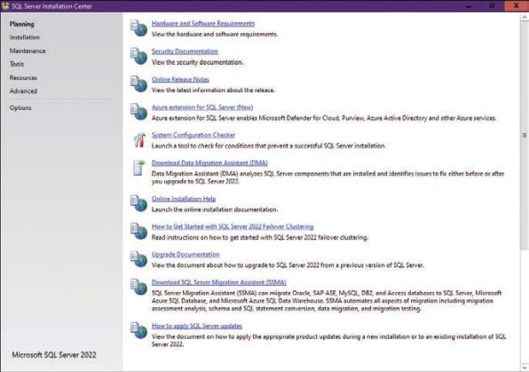
SQL Server Installation Center
What you’re looking at: the hub every SQL Server setup task starts from. Everything below happens inside the Installation section on the left.
2 · Install the database engine
- Start
setup.exeto open the SQL Server Installation Center (Figure A-1). - In the left pane choose Installation.
- In the right pane choose “New SQL Server standalone installation or add features to an existing installation.” The Edition page appears.
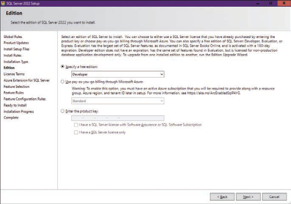
The Edition page
What you’re looking at: make sure Developer is selected under “Specify a free edition”, then click Next.
- Confirm Developer is selected and click Next.
- Accept the license terms and click Next.
- On the Install Rules page, make sure nothing is blocking you, then click Next.
- On the Azure Extension for SQL Server page, deselect “The Azure Extension for SQL Server Feature” and click Next.
- On the Feature Selection page (Figure A-3), select Database Engine Services — for this book you need nothing else — and click Next.
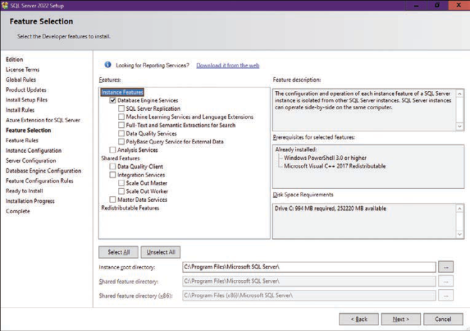
The Feature Selection page
What you’re looking at: Database Engine Services is the only feature the book uses. Everything else — Analysis Services, Reporting Services, Integration Services, Machine Learning — is out of scope.
- The Instance Configuration page appears (Figure A-4).
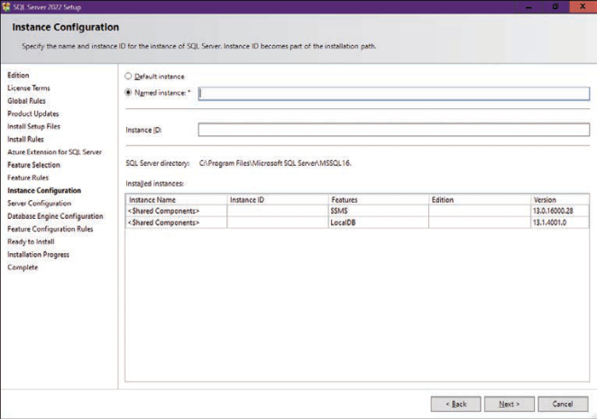
The Instance Configuration page
What you’re looking at: choose Default instance if no default instance exists yet on the machine, otherwise pick Named instance and give it a name such as SQL2022. You will later connect using just the computer name (SHIRE) for a default instance, or computer\instance (SHIRE\SQL2022) for a named one.
- Click Next. You don’t need to change anything on the Server Configuration page’s Service Accounts or Collation tabs for this book.
- Click Next again to reach the Database Engine Configuration page (Figure A-5).
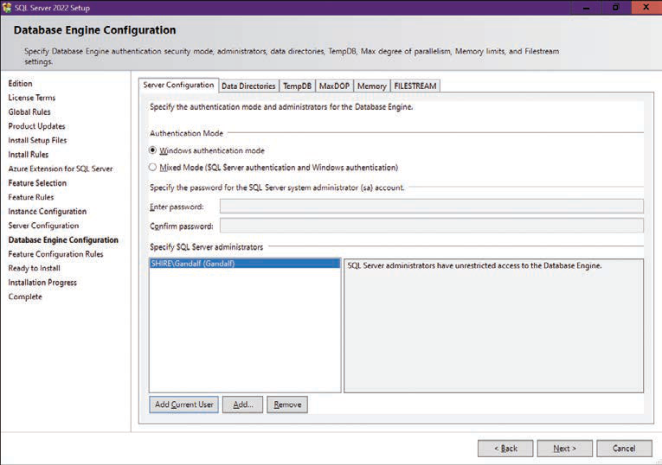
The Database Engine Configuration page
What you’re looking at: on the Server Configuration tab, keep Windows authentication mode and click Add Current User so your own login gets the sysadmin server role — unrestricted access to the engine. Your user name appears where the book shows SHIRE\Gandalf. You can change data directories on the Data Directories tab; the TempDB, MaxDOP, Memory, and FILESTREAM tabs need no attention here.
- Click Next to see the Ready To Install summary.
- Check the summary, then click Install. The Installation Progress page (Figure A-6) tracks each feature.
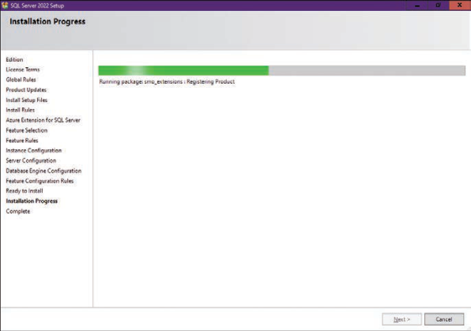
The Installation Progress page
What you’re looking at: a general progress bar plus a line per feature being installed. This stays open for the rest of the setup.
- When it finishes, the Complete page appears (Figure A-7) and should report success.
- Click Close.
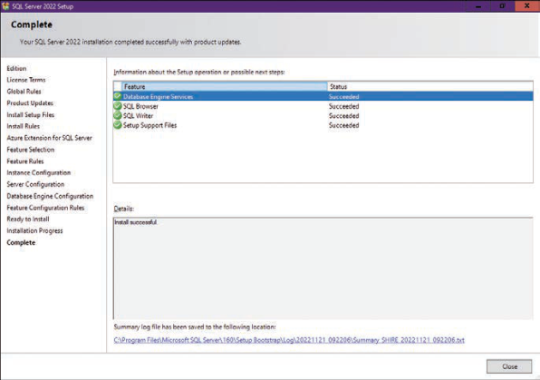
The Complete page
What you’re looking at: confirmation that the database engine installed. If a feature failed, this page tells you which one and links to the log.
Downloading and installing SSMS
Whichever engine you use, you need a client tool to develop and execute T-SQL. You can use either SQL Server Management Studio (SSMS) or Azure Data Studio (ADS).
https://learn.microsoft.com/en-us/sql/ssms — the tool the book uses for every client-side example, and the one used throughout this companion.
https://learn.microsoft.com/en-us/sql/azure-data-studio — a bit more user input during setup, but equally usable.
Once the download completes, run the setup program: with SSMS you simply confirm the target folder, click Install, then Close. From here on, every example that involves a client tool assumes SSMS — but the book’s focus is the language, not the tool, so use whatever you are comfortable with.
Source code and the TSQLV6 database
Download the source code from Pearson’s book page at https://microsoftpressstore.com/TSQLFund4e/downloads, then extract the compressed file to a local folder such as C:\TSQLFundamentals.
What’s in the download p. 534
- One file per chapter containing that chapter’s source code, so you don’t have to type it — the file name matches the chapter title.
- A second file per chapter with the exercises, same name plus the suffix Exercises.
- A third file per chapter with the solutions, same name plus the suffix Solutions.
orders.txt— a text file used for the bulk-insert practice in Chapter 8, “Data modification.”TSQLV6.sql— the script that creates the book’s sample database.
Creating the database on a box product p. 535
- Double-click
TSQLV6.sqlin File Explorer to open it in SSMS. The Connect to Database Engine dialog box appears. - In the Server name box, enter the instance you want —
SHIREfor a default instance on a machine called SHIRE,SHIRE\SQL2022for a named one. - In the Authentication box, make sure Windows Authentication is selected, and click Connect. The dialog box may appear twice — once for Object Explorer’s connection and once for the query window’s; follow the same steps for both.
- With your cursor in the query window and no code selected, press F5 to run the script. When it finishes you should see “Command(s) Completed Successfully” in the Messages pane and
TSQLV6in the Available Databases box. - Close SSMS when you’re done.
Creating the database in Azure SQL Database p. 535
- Double-click
TSQLV6.sqlto open it in SSMS. - In the Server Name box, enter the full DNS name, for example
myserver.database.windows.net. - Enter the right authentication option and credentials, then click Options.
- On the Connection Properties tab, type
masterin the “Connect to database” box and click Connect (again, possibly twice). - Skip Section A of the script — that part is for a box product.
- Create an empty database called
TSQLV6, either through the Azure portal (choose the server, then Create Database) or by runningCREATE DATABASE TSQLV6;from Section B of the script. Add explicit options if you want something other than the default specifications.
CREATE DATABASE TSQLV6;- Back in SSMS, right-click an empty area of the query pane and choose Connection | Change Connection. Click Options, specify
TSQLV6, and click Connect — or simply pickTSQLV6from the Available Databases box. - Highlight the code in Section C (from “Create Schemas” to the end of the file) and press F5. On a slow connection this can take a few minutes.
- Close SSMS when you’re done.
Figure A-8 · the TSQLV6 data model p. 537
Every sample in the book runs against this model: eleven tables (nine in the main model, plus the dbo.Nums helper table and the two Stats tables used by the statistics exercises) and four views. Because the book’s artwork is vector art, the model is reproduced here as a table.
| Object | Kind | Columns | Keys |
|---|---|---|---|
HR.Employees | Table | empid, lastname, firstname, title, titleofcourtesy, birthdate, hiredate, address, city, region, postalcode, country, phone, mgrid | PK empid; mgrid → HR.Employees (self) |
Production.Categories | Table | categoryid, categoryname, description | PK categoryid |
Production.Suppliers | Table | supplierid, companyname, contactname, contacttitle, address, city, region, postalcode, country, phone, fax | PK supplierid |
Production.Products | Table | productid, productname, supplierid, categoryid, unitprice, discontinued | PK productid; categoryid → Categories; supplierid → Suppliers |
Sales.Customers | Table | custid, companyname, contactname, contacttitle, address, city, region, postalcode, country, phone, fax | PK custid |
Sales.Shippers | Table | shipperid, companyname, phone | PK shipperid |
Sales.Orders | Table | orderid, custid, empid, orderdate, requireddate, shippeddate, shipperid, freight, shipname, shipaddress, shipcity, shipregion, shippostalcode, shipcountry | PK orderid; custid → Customers; empid → Employees; shipperid → Shippers |
Sales.OrderDetails | Table | orderid, productid, unitprice, qty, discount | PK (orderid, productid); orderid → Orders; productid → Products |
Sales.OrderValues | View | orderid, custid, empid, shipperid, orderdate, requireddate, shippeddate, qty, val | — |
Sales.CustOrders | View | custid, ordermonth, qty | — |
Sales.EmpOrders | View | empid, ordermonth, qty, val, numorders | — |
Sales.OrderTotalsByYear | View | orderyear, qty | — |
dbo.Nums | Table | n | PK n |
Stats.Tests | Table | testid | PK testid |
Stats.Scores | Table | testid, studentid, score | PK (testid, studentid); testid → Stats.Tests |
Figure A-8 from the book, recreated as an HTML table — the book’s artwork is vector art that cannot be extracted as an image.
Four of these show up constantly in the book: Sales.OrderValues (one row per order with quantity and value), Sales.CustOrders and Sales.EmpOrders (monthly aggregates used for the running-total and LAG examples in Chapters 7 and 12), and Sales.OrderTotalsByYear (annual totals used for the temp-table comparisons).
From Connect to Server to your first query
This section is not a complete guide to SSMS — just enough to get you productive. SSMS is updated periodically, so your screens may differ slightly from these screenshots.
Startup options p. 537
- Type SSMS in the Windows Start menu and choose SQL Server Management Studio.
- If this is your first run: if a Connect to Server dialog box appears, click Cancel for now; then choose Tools | Options, go to Environment | Startup, and set “At Startup” to “Open Object Explorer and query window.” Click OK.
- Close and restart SSMS to confirm it opens both panes. You should get the Connect to Server dialog box (Figure A-9).
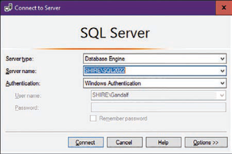
The Connect to Server dialog box
What you’re looking at: where you name the instance. Type the server name or pick it from the list; for Azure SQL Database use the full DNS name in the form yourserver.database.windows.net. Choose Windows Authentication (recommended) or SQL Server Authentication; for Azure SQL, also click Options and specify TSQLV6 in “Connect to dataset” on the Connection Properties tab.
- Click Connect. SSMS opens as in Figure A-10.
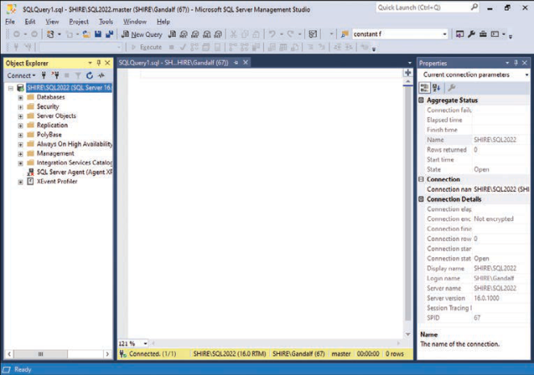
The opening screen of SSMS
What you’re looking at: Object Explorer on the left (manage the server, inspect object definitions graphically), the query window next to it (where you write T-SQL), and the Properties window on the right — press F4 if it is closed, and use the Auto Hide button in its top-right corner to tuck it away.
The book urges you to explore Object Explorer: navigate the tree and right-click nodes to see what is available. It is a convenient way to inspect your databases and objects graphically (Figure A-11) — and you can drag items from Object Explorer into the query window.
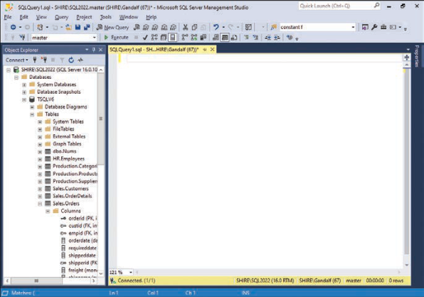
The Object Explorer
What you’re looking at: the tree of server objects. A tip worth memorising: drag a table’s Columns folder into the query window and SSMS writes out every column, comma-separated, for you.
The code you run executes against whichever database the query window is connected to. You choose it from the Available Databases combo box (Figure A-12), and you can change server or database at any time by right-clicking an empty area of the query window and choosing Connection | Change Connection.
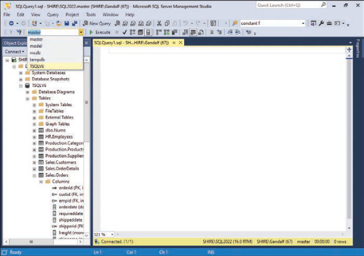
The Available Databases combo box
What you’re looking at: the database selector on the SQL Editor toolbar. Make sure it reads TSQLV6 before running anything from this book — every sample assumes that database.
Your first query p. 541
SELECT orderid, orderdate FROM Sales.Orders;Press F5 to execute, or click Execute (the green right-pointing triangle). The output lands in the Results pane (Figure A-13). You control where it goes from Query | Results To or the matching toolbar icons: Results To Grid (default), Results To Text, or Results To File.
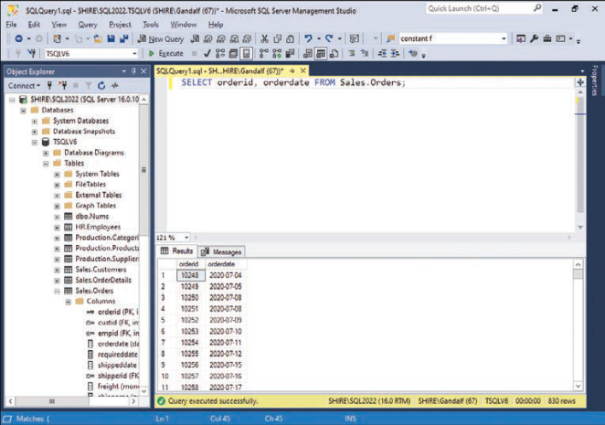
Executing the first query
What you’re looking at: the grid of results below the code. This is the loop you will spend the whole book in: write code, press F5, read the grid.
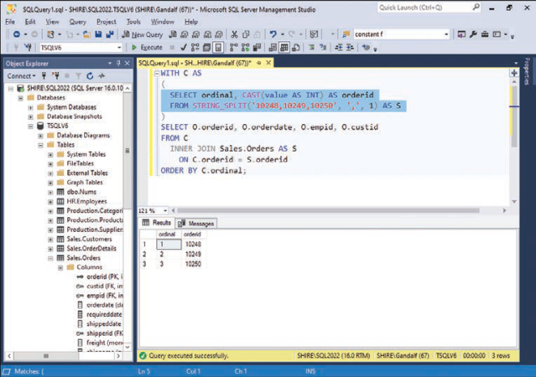
Executing only selected code
What you’re looking at: if any code is highlighted, SSMS executes only that selection; it runs the whole script only when nothing is highlighted. This is how you run one statement out of a long script file — and why the TSQLV6.sql instructions above insist on no selection before F5.
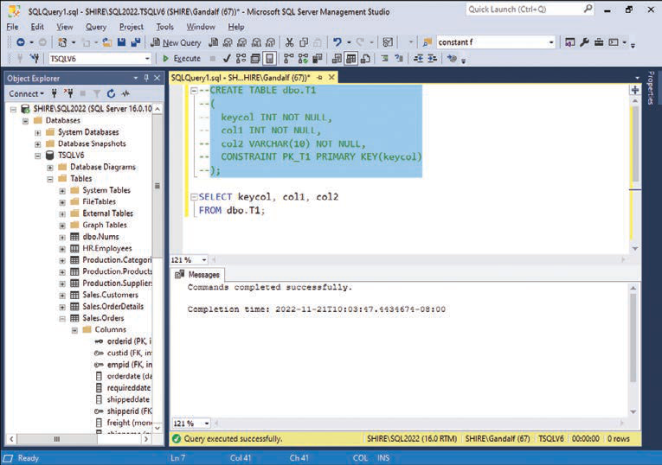
Highlighting a rectangular block
What you’re looking at: an Alt-drag selection spanning the same columns on several lines. Try it — it is the fastest way to edit a column list or add a prefix to a batch of lines.
Finally, to work with the book’s script files: open them from File | Open | File, click the Open File icon on the standard toolbar, or just double-click a .sql file in File Explorer.
Working with the product documentation
Think of the product documentation as your best friend while developing T-SQL. This section exists less to explain how to use it than to make you aware of it — too often people ask around for an answer they could find themselves in a minute.
Access it from the Help | View Help menu in SSMS. By default SSMS fetches help content from the internet, which most people prefer; you can also install it locally and read it in the Help Viewer (Help | Add and Remove Help Content, or Ctrl+Alt+F1), adding items from the Manage Content tab and clicking Update. The book’s author installs every item with “SQL” in its name for the versions he uses.
The Index tab p. 544
Type what you are looking for in the search box at the bottom left of the Help window (Figure A-16). As you type, Help Viewer moves the first qualifying item to the top of the ordered subject list — type “window function” or a T-SQL keyword whose syntax you need. Click Add To Favorites to keep a topic handy, or Show Topic In Contents to sync it with the Contents tab.
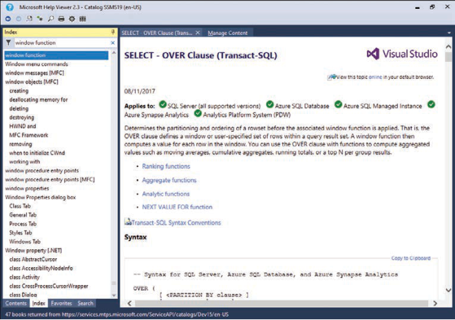
The Help Viewer Index window
What you’re looking at: subject lookup by name. This is the fastest route when you know the name of the feature — for example when you need the exact syntax of a clause you are typing.
The Contents tab p. 545
Browse the topic tree instead (Figure A-17). If you simply want to see what T-SQL offers, navigate to the Transact-SQL Reference folder — under Reference, under SQL Server Documentation. The online equivalent is https://learn.microsoft.com/en-us/sql/t-sql/language-reference.
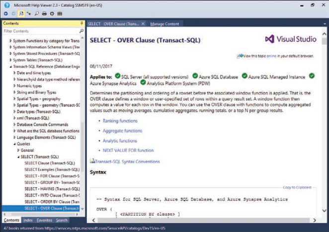
The Help Viewer Contents window
What you’re looking at: the browsable hierarchy. Use it when you want to explore a neighbourhood of features rather than look up one specific name.
The Search tab p. 546
Use the Search tab (Figure A-18) to find articles containing the words you are after — a more abstract, search-engine-like query than the Index tab. To find a word inside an article you already have open, click Find In Topic on the toolbar or press Ctrl+F.
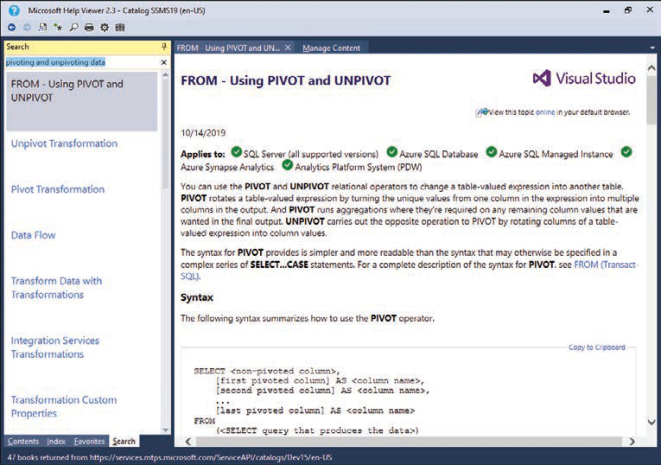
The Help Viewer Search tab
What you’re looking at: full-text search across the documentation — the right tool when you have a symptom or a phrase rather than a feature name.
T-SQL <feature> almost always lands on the official learn.microsoft.com article first — try T-SQL PIVOT.
Ready to start
You’re set up when every one of these is true.
- You have an engine — an Azure SQL Database/Managed Instance, or a local SQL Server 2022 (or later) instance, Developer edition being the usual choice.
- You have a client tool — SSMS or Azure Data Studio installed.
- SSMS opens Object Explorer and a query window at startup, and you know your server name (
SHIRE,SHIRE\SQL2022, oryourserver.database.windows.net). - The TSQLV6 database exists and appears in the Available Databases box.
- You ran your first query —
SELECT orderid, orderdate FROM Sales.Orders;— and saw rows in the Results pane. - You know the three execution habits: F5 runs everything when nothing is highlighted and only the selection when something is; Alt-drag selects a rectangle; F1 opens help for the element under your cursor.
- You have the source code from Pearson’s book page, extracted locally, with the per-chapter Exercises and Solutions files to hand.